НАУЧНО-ИССЛЕДОВАТЕЛЬСКИЙ
ИНСТИТУТ СТРОИТЕЛЬНОЙ ФИЗИКИ
(НИИСФ) ГОССТРОЯ СССР
ПОСОБИЕ
ПО ПРОЕКТИРОВАНИЮ
АВТОМАТИЗИРОВАННЫХ СИСТЕМ УПРАВЛЕНИЯ
МИКРОКЛИМАТОМ ПРОИЗВОДСТВЕННЫХ ЗДАНИЙ
(к СНиП 2.04.05-86)
Утверждено приказом НИИСФ Госстроя
СССР
№ 31 от 24 марта 1986 г.
Москва Стройиздат 1989
Рекомендованы к изданию решением секции строительной теплофизики Научно-технического совета НИИСФ Госстроя СССР.
Содержит основные принципы разработки и проектирования автоматизированных систем управления микроклиматом производственных зданий. Приведены основные задачи системы, даны рекомендации по анализу теплового режима здания как объекта управления. Разработаны общие, методы расчета, положенные в основу создания математической модели теплового режима здания. Даны рекомендации по разработке программного, информационного и технического обеспечения, а также по анализу технико-экономической эффективности.
Для инженерно-технических работников научно-исследовательских и проектных институтов.
Важнейшим источником экономии топливно-энергетических ресурсов, затрачиваемых на теплоснабжение крупных производственных зданий со значительным потреблением тепловой и электрической энергии, является повышение эффективности работы системы отопления и вентиляции на основе использования современных достижений вычислительной и управляющей техники. Обычно для управления системами отопления и вентиляции служат средства локальной автоматики. Основным недостатком такого регулирования является то, что оно не учитывает фактический воздушный и тепловой баланс здания и реальные погодные условия: температуру и влажность наружного воздуха, скорость и направление ветра, атмосферное давление, солнечную радиацию. Поэтому под воздействием средств локальной автоматики система теплоснабжения работает, как правило, не в оптимальном режиме.
Эффективность работы системы отопления и вентиляции можно значительно увеличить, если, используя математическое моделирование теплового поведения здания, осуществить оптимальное управление системами, основанное на использовании ЭВМ и комплекса соответствующих технических и программных средств.
Формирование теплового режима можно представить как взаимодействие возмущающих и регулирующих факторов.
Для определения управляющего воздействия нужна информация о свойствах и количестве входных и выходных параметров и условия протекания процесса передачи тепла. Так как целью управления отопительно-вентиляционным оборудованием является обеспечение требуемых условий воздушной среды в рабочей зоне помещений зданий при минимальных энергетических и материальных затратах, то с помощью ЭВМ будет найден оптимальный вариант и выработаны соответствующие управляющие воздействия на эту систему. В результате ЭВМ с соответствующим комплексом технических и программных средств образует автоматизированную систему управления тепловым режимом помещений зданий (АСУ ТРП).
Разработка АСУ ТРП должна производиться в соответствии со следующими нормативными документами: ГОСТ 12.0.003-74* (СТ СЭВ 790-77); ГОСТ 12.1.005-88; ГОСТ 12.1.007-76*; ГОСТ 12.2.003-74* (СТ СЭВ 1085-78); ГОСТ 12.2.032-78; ГОСТ 12.3.002-75* (СТ СЭВ 1728-79); Стандартами групп 19…, 24…, 26…; ГОСТ 14255-69*; ГОСТ 20397-82*Е; ГОСТ 20886-85*; ГОСТ 23678-79; ОСТ 4-071.010-78; ОСТ 4-071.011-78; ОСТ 4-071.020-78; ОСТ 4-071.022-79; ОСТ 4-091.078-78; ОСТ 25.780-77; ОСТ 25.888-79; СН 245-71; СН 512-78; СНиП II-3-79**, СНиП 2.01.01-82; «Общеотраслевыми руководящими методическими материалами по созданию автоматизированных систем управления технологическими процессами (АСУ ТП)» [ОРММ-2 АСУ ТП], а также другими нормативными документами.
Разработано НИИСФ Госстроя СССР (д-р техн. наук Ю.А. Табунщиков, канд. техн. наук Ю.А. Матросов, Ф.В. Клюшников, инженеры В.Д. Патокин, В.М. Простаков и А.Н. Лазаренко); ЦНИИПромзданий Госстроя СССР (канд. техн. наук В.А. Дмитриев и инж. А.А. Духин), ЛТИХП (д-р техн. наук А.А. Рымкевич и канд. техн. наук В.М. Черепанов).
1.1. Пособие предназначено для проектирования и эксплуатации автоматизированной системы управления тепловым режимом производственных зданий (АСУ ТРП) с учетом оперативной информации изменения наружной среды.
1.2. Автоматизированную систему управления тепловым режимом производственных зданий можно проектировать как для вновь строящихся, так и для существующих производственных зданий во всех строительно-климатических районах.
1.3. Автоматизированную систему управления тепловым режимом рекомендуется проектировать комплексно для всего здания на основе анализа процессов обработки воздуха для зимнего, летнего и переходного периода с учетом графиков температур теплоносителей и тепловоздушных балансов в помещениях.
1.4. При проектировании системы необходимо обязательно учитывать конкретные условия и объемно-планировочные решения производственных зданий, технологию производства, тип и взаимное расположение станочного оборудования.
1.5. Систему рекомендуется проектировать для крупных производственных зданий, оснащенных системами:
приточной вентиляции производительностью 10 тыс. м3/ч и более;
приточной вентиляции, работающей с переменным количеством наружного и рециркуляционного воздуха;
приточной вентиляции, совмещенной с воздушным отоплением;
вытяжной общеобменной вентиляции при необходимости количественного регулирования;
кондиционирования воздуха;
воздушного отопления и душирования;
если регулирование требуется по условиям производства.
1.6. Настоящие рекомендации могут быть распространены на другие типы зданий (кинотеатры, спортивные комплексы, торговые залы, административные здания и т.д.).
1.7. Эффективность и надежность работы систем зависит от успешного решения следующих вопросов:
определения основной задачи управления, главной цели и критериев оптимизации;
разработки алгоритма управления, т.е. последовательности операций обработки вводимой в ЭВМ измерительной информации для определения величин управляющих воздействий, обеспечивающих выполнение задачи системы;
выявления тепловых особенностей здания и зон установки датчиков физических величин, характеризующих микроклимат помещения;
разработки математического описания теплового режима здания;
выбора управляющего электронно-вычислительного комплекса и математического обеспечения;
выбора устройств связи ЭВМ с объектом управления;
разработки программного и информационного обеспечения системы;
установления особенностей отопления и вентиляции здания и привязки системы к существующим устройствам отопления и вентиляции.
1.8. Эффективность работы системы следует устанавливать на основании технико-экономических расчетов. При этом необходимо учитывать, что для каждого периода времени, соответствующего уровню развития электронно-вычислительной техники и суммарному объему решаемых задач, существует оптимальный уровень, соответствующий минимальным затратам на приобретение, монтаж, эксплуатацию и развитие системы.
По опыту эксплуатации подобной системы в нашей стране и за рубежом экономия энергии по сравнению с системами на местных регуляторах может составлять 20 - 30 % и более.
1.9. Разработка, создание и ввод в эксплуатацию АСУ ТРП является принципиально новым делом. Поэтому при проектировании системы значительное место занимают научно-исследовательские и опытно-конструкторские работы. При вводе системы в эксплуатацию требуются также научно-исследовательские работы, так как фактическое тепловое поведение здания во время эксплуатации обычно отличается от расчетного.
2.1. Проектируемая автоматизированная система управления тепловым режимом производственного здания должна обеспечивать: требуемый температурный, влажностный и воздушный режим в зоне расположения технологического оборудования, необходимый для нормального выполнения технологических процессов; заданные значения температуры, влажности и подвижности внутреннего воздуха в рабочей зоне, определенные санитарно-гигиеническими требованиями; экономию затрат топливно-энергетических ресурсов на эксплуатацию здания; сокращение численности обслуживающего персонала.
2.2. Рабочей зоной считается пространство высотой до 2 м от уровня пола или площадки, на которой находятся рабочие места.
Параметры микроклимата в рабочей зоне устанавливают по СНиП 2.04.05-86.
2.3. Температура tв, относительная влажность jв и скорость движения воздуха v в различных помещениях зданий должны соответствовать их допустимым значениям в зависимости от характеристики помещений (их назначения и удельных избытков явного тепла), категорий работ, приведенных для холодного и переходного периода года в табл. 1, для теплого периода - в табл. 2.
Таблица 1
|
Температура воздуха tв, °С |
Относительная влажность воздуха jв, %, не более |
Скорость движения воздуха v, м/с, не более |
|
|
Легкая |
17 - 22 |
75 |
0,3 |
|
Средней тяжести |
15 - 20 |
75 |
0,5 |
|
Тяжелая |
13 - 18 |
75 |
0,5 |
Таблица 2
|
Температура воздуха tв, °С |
Относительная влажность воздуха jв, %, не более, при температуре воздуха tв, °С |
Скорость движения воздуха v, м/с |
|||||
|
28 |
27 |
26 |
25 |
24 |
|||
|
Легкая |
Не более чем на 3 °С выше tм, но не выше 28 °С |
55 |
60 |
65 |
70 |
75 |
0,3 - 0,5 |
|
Средней тяжести |
То же |
55 |
60 |
65 |
70 |
75 |
0,3 - 0,7 |
|
Тяжелая |
То же, но не выше 26 °С |
- |
- |
65 |
70 |
75 |
0,5 - 1 |
|
Примечание. Если в табл. 1 и 2 приведены пределы скорости движения воздуха, то следует считать большую скорость с более высокой температурой, а меньшую с более низкой. |
|||||||
2.4. Категория работы принимается по Санитарным нормам проектирования промышленных предприятий (СН 245-71) в зависимости от затрат энергии, которые устанавливают по ведомственным документам исходя из категории работ, выполняемых 50 % и более работающих в помещении.
2.5. В производственных помещениях, где площадь пола на одного работающего превышает 100 м2, а поддержание допустимых значений температуры, относительной влажности и скорости движения воздуха по всей площади рабочей зоны невозможно по техническим причинам или нецелесообразно по экономическим соображениям, требуемые параметры воздушной среды следует обеспечивать только на постоянных рабочих местах. Вне постоянных рабочих мест допускаются в холодный и переходный периоды года более низкие температуры воздуха: до 12 °С при легкой работе, до 10 °С при работе средней тяжести и до 8 °С при тяжелой работе.
2.6. Для соблюдения комфортных условий в помещениях следует поддерживать оптимальные параметры воздуха, приведенные в табл. 3.
Таблица 3
|
Температура воздуха tв, °С |
Относительная влажность jв, % |
Скорость движения воздуха v, м/с |
|
|
Легкая |
20 - 22 22 - 25 |
60 - 30 |
0,2 0,2 - 0,5 |
|
Средней тяжести |
17 - 19 20 - 23 |
60 - 30 |
0,3 0,2 - 0,5 |
|
Тяжелая |
16 - 18 18 - 21 |
60 - 30 |
0,3 0,3 - 0,7 |
|
Примечание. Над чертой даны значения параметров для холодного и переходного периодов года, под чертой - для теплого. |
|||
Поддержание оптимальных параметров воздушной среды, соответствующих легкой работе, обязательно в комнатах отдыха и местах вблизи рабочего места, предназначенных для отдыха. Применение оптимальных или близких к ним параметров воздуха рекомендуется, если поддержание их не вызывает дополнительных затрат или научно-экспериментального обоснования технико-экономической целесообразности капитальных затрат и эксплуатационных расходов, связанных с обеспечением таких параметров в помещениях.
2.7. Проектирование производственного здания, оборудованного автоматизированной системой управления тепловым режимом помещений, должно производиться комплексно, с увязкой проектных решений строительной, отопительной и технологической частей проекта с требованиями, предъявляемыми к ним автоматизированной системой управления тепловым режимом здания.
2.8. При выборе проектных решений строительной части необходимо выявить оптимальные места расположения датчиков температуры, относительной влажности и подвижности воздуха. В помещении предусмотреть необходимые мероприятия по их рациональному размещению, креплению и эффективному контролю во время эксплуатации.
2.9. Схему расположения контрольно-измерительных датчиков температуры, относительной влажности и подвижности воздуха следует выбирать из условия минимизации общей протяженности линий связи с центральным пультом управления и получения надежной, достоверной информации о состоянии параметров микроклимата в нормируемых зонах помещений здания.
2.10. Строительная, вентиляционная, отопительная и технологическая части проекта производственного здания с автоматизированной системой управления его тепловым режимом должны предусматривать возможность функционирования автоматизированной системы управления, начиная с возможно малой степени автоматизации и упрощенного математического обеспечения, с последующим ее наращиванием и усложнением как по степени автоматизации, так и по пути уточнения математической модели тепловых процессов здания.
2.11. Для экономии тепловой энергии в холодный и переходный периоды года целесообразно предусмотреть в проекте возможность снижения температуры воздуха в рабочей зоне в не рабочее время, если это не противоречит требованиям технологического процесса.
2.12. Изменить теплопроизводительность калориферов в системах приточной вентиляции рекомендуется посредством регулирующего клапана, устанавливаемого на обратной линии теплоносителя при теплоносителе воде, а также сдвоенного распределительного воздушного клапана (заслонки), располагаемого перед калорифером при теплоносителе паре.
2.13. Для смешения наружного и рециркуляционного воздуха в системах приточной вентиляции служат проходные воздушные клапаны (заслонки), установленные в каналах наружного и рециркуляционного воздуха, или сдвоенный смесительный воздушный клапан в месте слияния этих двух каналов.
2.14. Для помещений, обслуживаемых системами кондиционирования воздуха, при отсутствии специальных технологических условий в соответствии со СНиП 2.04.05-86 следует принимать точность поддержания температуры воздуха Dtдоп = ± 1 °С, а при использовании местных кондиционеров - доводчиков или смесителей с индивидуальными регуляторами температуры прямого действия - Dtдоп = ± 2 °С установки датчика. Технологические условия в некоторых случаях могут предъявлять повышенные требования к точности поддержания температуры, например Dtдоп = ± 0,1 °С.
2.15. Для повышения надежности работы установок, формирующих тепловой режим производственных зданий, следует предусматривать их автоматическую защиту и блокировку. Автоматическая защита калориферов от замерзания необходима для случаев, когда при выключенной системе возможно проникание в калорифер воздуха с отрицательной температурой, а также если при работающей системе возможно падение давления или температуры сетевой воды при отрицательной температуре воздуха, поступающего в калорифер. Автоматическую защиту калориферов от замерзания необходимо проектировать для районов с расчетными наружными температурами холодного периода года минус 5 °С и ниже.
Для систем кондиционирования воздуха и приточной вентиляции, работающих с переменным расходом наружного и рециркуляционного воздуха, рекомендуется установка блокировочных устройств, обеспечивающих минимальный расход наружного воздуха в холодный период года, а для систем кондиционирования - в теплый период года.
Электродвигатель вентилятора, создающего воздушную или воздушно-тепловую завесу, следует блокировать с механизмом открывания ворот, дверей, технологических проемов, обслуживаемых завесами. Кроме того, необходимо предусмотреть отключение вентилятора воздушно-тепловой завесы и сокращение до минимума подачи теплоносителя в калориферы после закрытия ворот, дверей и технологических проемов на период времени, достаточный для восстановления нормируемой температуры воздуха в помещении.
2.16. В помещениях, в которых могут выделяться аварийные количества взрывоопасных газов и паров, образующих взрывоопасные смеси, необходимо устанавливать газоанализаторы, сблокированные с устройствами световой сигнализации, оповещающей о наличии в воздухе помещения веществ концентрации, достигающей 20 % нижнего предела взрываемости, или автоматические газоанализаторы, сблокированные с устройством для пуска систем аварийной вентиляции при наличии такой концентрации.
2.17. Содержание в воздухе рабочей зоны помещений вредных газов, паров и пыли не должно превышать предельно допустимых концентраций, приведенных в Санитарных нормах проектирования промышленных предприятий (СН 245-71) и Дополнениях к перечню вредных веществ, периодически публикуемых Министерством здравоохранения СССР и Госстроем СССР.
2.18. В основу разработки системы АСУ ТРП должны быть положены следующие принципы:
возможность стадийного создания системы и поэтапного ввода ее в эксплуатацию;
термодинамический подход к созданию математической модели и ее идентификации по данным натурных исследований;
выявление необходимых параметров и особенностей теплового поведения эксплуатируемого здания и системы отопления с помощью экспериментальных натурных исследований и настройка (идентификации) математической модели;
возможность обычного функционирования системы отопления при выходе АСУ ТРП из строя;
открытость системы к дальнейшему усовершенствованию и развитию.
2.19. Разработка системы может быть выполнена в несколько этапов.
На первом этапе расчетным путем выявляют: основные особенности здания и системы отопления и вентиляции с теплотехнической точки зрения и ожидаемую эффективность от внедрения системы; формулируют основные положения АСУ ТРП, ее структуру, номенклатуру технических и программных средств; составляют техническое задание на проектирование. На этом этапе могут отсутствовать детальные рабочие чертежи проекта здания и системы отопления.
На втором этапе разрабатывают проект АСУ ТРП: определяют технические средства, составляют математическую модель, алгоритмы, прикладное программное обеспечение, разрабатывают дополнительные средства управления системы отопления и вентиляции. Компоненты программного обеспечения отлаживают на имитационных моделях. На этом этапе необходимо выполнение значительных научно-исследовательских работ.
На третьем этапе в эксплуатируемом здании с действующим технологическим оборудованием проводят натурные исследования с целью выявления наиболее значимых параметров, необходимых для составления математической модели.
На четвертом этапе монтируют необходимые технические средства АСУ ТРП, датчики, исполнительные механизмы, актуаторы; выполняют пусконаладочные работы. Предполагается, что измерения будут выполняться автоматически, но ЭВМ будет работать в режиме наблюдения и советчика. На этом этапе завершается отладка основных программ и осуществляется настройка математической модели. Часть программ АСУ ТРП на этом этапе может еще не функционировать.
На завершающем пятом этапе заканчивается создание всей системы АСУ ТРП для работы ее в автоматизированном режиме. Следует отметить, что по времени четвертый и пятый этапы могут быть совмещены.
2.20. Работа автоматики управления отопительно-вентиляционными системами может быть основана либо на термодинамическом принципе, т.е. на использовании данных о физических процессах тепло- и массообмена, происходящих в здании, либо на кибернетическом, принципе, когда здание рассматривается как «черный ящик» и изучается взаимосвязь входных и выходных величин. Был избран термодинамический подход, так как он позволяет рассматривать систему «отопительная установка - объект» как взаимосвязанную нелинейную с переменной структурой и решать задачу оптимизации. Математическая модель формирования теплового режима здания (рис. 1) сводится к составлению уравнений теплового баланса, описывающих воздухообмен, технологические теплопоступления, наружные климатические воздействия, теплопотери через наружные ограждения за счет теплопроводности и фильтрации, теплосодержание технологического оборудования и внутренних ограждающих конструкций.
Рис. 1. Схема математической модели
2.21. Экспериментальные исследования проводят с целью определения особенностей распределения температуры внутреннего воздуха в плане и по высоте помещений; теплоаккумуляционных характеристик внутреннего оборудования и продукции, а также здания в целом; фактических теплозащитных показателей наружных ограждений; оценки инерционности систем отопления; выявления характерных участков в зонах действия приточных камер для выбора мест установки датчиков температуры; определения технологических теплопоступлений. Натурные исследования проводят при стационарных и нестационарных условиях теплообмена в зимний и переходный периоды года. Нестационарные условия изучаются в период снижения подачи тепла перед выходными и праздничными днями, в периоды натопа, понижения и повышения температуры наружного воздуха. Во время наблюдений измеряют: температуру, влажность, скорость и направление движения наружного воздуха, интенсивность солнечной радиации, перепад давлений воздуха с обеих сторон различно ориентированных ограждений, температуру и расход воздуха приточных камер, температуру и влажность внутреннего воздуха в плане и по высоте здания, температуру внутренних и наружных поверхностей и оборудования.
2.22. Основным ядром АСУ ТРП является управляющий вычислительный комплекс (УВК), на базе которого можно построить систему.
2.23. Централизованные управляющие вычислительные системы на базе мини-ЭВМ легко перенастраиваются с одной функции на другую путем замены программ в памяти ЭВМ. Возможно применение двухуровневых систем управления, в которых нижние уровни выполняются на традиционных средствах локального регулирования. Однако эти системы обладают следующими недостатками:
малая живучесть, так как при отказе единственной ЭВМ система прекращает функционирование;
сложность программного обеспечения, а также процедур обмена данными по каналам ввода - вывода;
значительное число проводов и их длина в линии связи, подключенной к каналам ввода - вывода;
сложное управление в реальном времени из-за большого времени реакции центральной системы.
На рис. 2 приведен пример централизованной системы.
Рис. 2. Блок-схема информационно-управляющего комплекса
2.24. Применение децентрализованной управляюще-вычислительной системы обеспечивает: более низкую стоимость системы; более высокую живучесть; более низкие затраты на монтаж, эксплуатацию и обучение персонала, общий канал связи, что резко сокращает затраты на линию связи, возможность передачи часта функции локальных приборов в автономные микропроцессоры. Микропроцессоры в этих системах следует устанавливать близко от датчиков и исполнительных устройств с тем, чтобы минимизировать суммарную длину кабеля связи. К недостаткам децентрализованных систем следует отнести:
сложность в создании эффективной передачи сообщений между микропроцессорами и организации системного взаимодействия;
трудности создания дистанционной диагностики и восстановления после сбоя;
затруднения по синхронизации задач, а также разделения сложных процессов управления на подпроцессы.
На рис. 3 показан пример трехуровневой децентрализованной системы. Логические функции в этой системе распределены по трем уровням. Нижний (I) уровень имеет фиксированное число ввода - вывода и производит сбор и передачу аналоговых и цифровых данных. Средний (II) уровень локально автономен и содержит микропроцессоры, связанные как с уровнем I, так и с уровнем III. Верхний уровень (III) содержит мини-ЭВМ, осуществляющую оптимизацию в целом, прием, обработку и передачу информации, поступающей с нижних уровней.
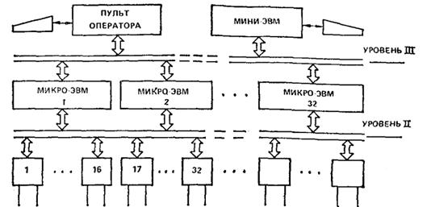
Рис. 3. Структура трехуровневой распределенной информационной управляющей системы объектами больших зданий
2.25. Выбор соответствующего типа системы следует производить на основании технического и технико-экономического анализа, учитывая наличие соответствующих технических средств серийного выпуска и затрат на разработку программного обеспечения.
3.1. Формирование теплового режима можно представить как взаимодействие возмущающих и регулирующих факторов. К возмущающим факторам относятся теплопоступления через ограждающие конструкции, тепловая энергия, выделяющаяся при работе технологического оборудования, бытовые теплопоступления. К регулирующим факторам относится тепловое воздействие отопительных и вентиляционных систем. Представим отопительно-вентиляционные системы в виде многомерного объекта, описываемого тремя группами переменных.
Первую группу переменных представляют параметры, характеризующие свойства и количество входных элементов. К ним относятся характеристики наружного воздуха, параметры теплоносителя.
Во вторую группу переменных входят параметры, характеризующие свойства выходных элементов. Это, в первую очередь, условия воздушной среды в помещениях, теплоотдача отопительно-вентиляционных систем, а также параметры воды из обратной линии сети теплоснабжения.
Третья группа включает параметры, характеризующие условия протекания процесса передачи тепловой энергии.
3.2. В общем случае состояние отопительно-вентиляционных систем характеризуется всеми переменными. Для целей управления из всей совокупности переменных можно использовать лишь часть. Эти переменные можно разбить на две группы. В первую группу включим те переменные, которые можно целенаправленно изменять в процессе управления. Вторую группу составят переменные, которые можно измерить и использовать при формировании управляющего воздействия, но сами они при этом целенаправленно изменяться не могут. Их необходимо учитывать при управлении, но активно влиять на них невозможно.
Из управляемых переменных выбирают в качестве управляющих те, целенаправленное изменение которых технически возможно и существенно влияет на показатели управления.
3.3. Критерием оптимальности управления отопительно-вентиляционными системами является минимум приведенных затрат по поддержанию требуемых условий воздушной среды.
3.4. Для отопительно-вентиляционных систем наилучший технологический режим не может быть задан заранее, так как его выбор зависит от факторов, информация о которых изменяется в течение времени. К таким факторам относятся температура наружного воздуха, скорость и направление ветра, солнечная радиация, температура и давление теплоносителя в теплопроводе, идущем от источника тепла, изменение режима работы оборудования, находящегося в помещениях, и др.
3.5. Для рационального управления необходимо, во-первых, найти оптимальную программу управления работой отопительно-вентиляционных систем, во-вторых, регулировать тепловой режим, используя работу отопительно-вентиляционных систем как задающее воздействие.
3.6. Конструктивно системы отопления и вентиляции могут быть решены по-разному, но в помещениях промышленных зданий, требующих обогрева и устройства приточной вентиляции, в основном применяется воздушное отопление, совмещенное с вентиляцией. Важной особенностью этой системы отопления является отсутствие большого числа громоздких и металлоемких отопительных приборов, так как горячий воздух передает аккумулированное им тепло непосредственно отапливаемому помещению, смешиваясь с внутренним воздухом. Для воздушного отопления характерно также повышение санитарно-гигиенических показателей воздушной среды помещений. Могут быть обеспечены подвижность воздуха, благоприятная для нормального самочувствия людей, равномерность температуры помещения, а также смена, очистка и увлажнение воздуха.
Максимальная температура воздуха при подаче его в помещение на высоту более 3,5 м от пола составляет 70 °С, на высоту 3,5 м от пола и на расстояние более 2 м от рабочего места - 45 °С.
3.7. Системы воздушного отопления, совмещенные с приточной вентиляцией, бывают центральными, вентиляторными и канальными. По качеству приточного воздуха они могут быть подразделены на рециркуляционные (с полной и частичной рециркуляцией), прямоточные и рекуперативные (рис. 4). Рециркуляционные системы действуют в различных режимах: полная и частичная смена воздуха, полная рециркуляция воздуха. Эти системы могут работать как чисто вентиляционные, отопительно-вентиляционные и чисто отопительные в зависимости от количества забираемого воздуха снаружи и температуры нагрева воздуха в калорифере. Прямоточные системы осуществляют полную смену воздуха в помещении, так как весь воздух, подаваемый системами, забирается снаружи. Эти системы применяют в тех случаях, когда требуется вентиляция в объеме, не меньшем, чем объем воздуха, необходимый для создания должного отопительного эффекта. Рекуперативные системы используют тепло уходящего воздуха, что дает возможность экономить тепловую энергию.
3.8. Воздушное отопление, совмещенное с вентиляцией, применяемое в производственных помещениях, состоит из системы подачи теплоносителя, приточных камер и системы воздухораздачи. Тепловую энергию в виде воды или пара от источника тепла (ТЭЦ, районная тепловая станция, котельная предприятия) передают к отопительно-вентиляционным системам по тепловой сети. Гораздо реже используют электроэнергию в качестве теплоносителя вследствие ее большой стоимости. Системы отопления и вентиляции присоединяют к источникам тепла, как правило, через тепловые пункты. Не рекомендуется непосредственное присоединение из-за больших колебаний тепловой нагрузки источника.
Рис. 4. Принципиальные схемы воздушного отопления, совмещенного с приточной вентиляцией
а - рециркуляционная; б - прямоточная; в - рекуперативная; 1 - калорифер; 2 - воздухо-воздушный рекуператор; 3 - канал горячего воздуха; 4 - канал внутреннего воздуха; 5 - канал наружного воздуха
3.9. По организации движения теплоносителя системы теплоснабжения подразделяются на разомкнутые, полузакрытые и замкнутые. В разомкнутых системах тепло, переносимое теплоносителем, и сам теплоноситель полностью используются потребителем. В полузакрытых системах используется лишь часть тепла и теплоносителя, оставшаяся часть возвращается к источнику тепла. В замкнутых системах потребителем расходуется только часть тепловой энергии теплоносителя, сам теплоноситель полностью возвращается к источнику тепла. В зависимости от передачи потоков теплоносителя, отличающихся тепловыми потенциалами, применяют многотрубные системы теплоснабжения.
3.10. Систему теплоснабжения можно разделить на три уровня: источник тепла, тепловые сети с тепловыми пунктами, распределительные тепловые сети с абонентскими вводами. При централизованном теплоснабжении регулирование отпуска тепла может быть осуществлено количественно и качественным изменением температуры или расхода подаваемой воды или давления пара. Присоединение потребителей к тепловой сети осуществляют без понижения или с понижением потенциала теплоносителя. Потенциал теплоносителя снижается поверхностными и смесительными теплообменниками.
3.11. Различают независимое и зависимое присоединение к тепловым сетям. Независимое присоединение характерно для систем теплоснабжения с поверхностными теплообменами; зависимое присоединение осуществляется с помощью смесительных насосных и элеваторных узлов, а также при использовании подпиточных перемычек между тепловой сетью и потребителями. Потенциал теплоносителя снижается в тепловых пунктах. Входные переменные для теплового пункта - температура, давление и расход теплоносителя. Основные выходные переменные, определяющие функционирование теплового пункта как объекта управления, - расход и температура теплоносителя, направляемого в системы отопления и вентиляции. Выходные переменные, в соответствии с требованиями системы управления, изменяются с заменой управляющих воздействий. В качестве управляющих воздействий в узлах насосного смешения можно использовать изменения положений регулирующих клапанов, определяющие соотношения расходов теплоносителя, поступающего из тепловой сети, и воды из обратной линии сети теплоснабжения отопительно-вентиляционных систем. В перспективе, в качестве управляющего воздействия, можно использовать изменение производительности смесительных насосов.
К измеряемым переменным теплового пункта с насосным смесительным узлом относятся: температура и давление теплоносителя в прямом и обратном трубопроводе тепловой сети, температура и давление воды, подаваемой в отопительно-вентиляционные системы, расходы теплоносителя в тепловой сети и сети теплоснабжения систем отопления и вентиляции.
3.12. Приточные вентиляционные камеры по основным режимам работы и схемам движения воздуха разделяют: на прямоточные и рециркуляционные, как переключаемые в режим дежурного отопления, так и без переключения. Для обработки, перемещения и управления потоками воздуха в состав приточной камеры входят следующие элементы: воздухозаборное устройство, приемный воздушный клапан, фильтр, калорифер, обводной клапан с регулирующим воздушным клапаном, приточный вентилятор, воздушный клапан в рециркуляционном канале, клапаны регулирования расхода теплоносителя через калорифер. При необходимости в состав приточной камеры входит камера орошения. Набор элементов, входящих в состав приточной камеры, и их компоновка меняются в зависимости от функций, возложенных на отопительно-вентиляционную систему, и климатических условий. Воздухозаборное устройство выполняют в виде камеры с защитными наружными решетками в проеме наружных ограждений или в виде ответвления от общего воздуховода забора наружного воздуха. Применяемый воздушный клапан снабжен электронагревательными элементами для предпускового прогрева лопаток клапанов в холодный период года. При управлении приточной камерой необходимо учитывать длительность прогрева.
3.13. Калориферы, с целью защиты от замерзания и удобства регулирования теплопроизводительности, часто выполняют в виде двух отдельных секций с независимым регулированием расхода теплоносителя по секциям с помощью регулирующих клапанов. Это необходимо учитывать при формировании управляющих воздействий. В качестве приточных вентиляторов используют центробежные вентиляторы одно- и двухстороннего всасывания. Производительность вентиляторов регулируется осевыми направляющими аппаратами. В перспективе регулирование можно осуществлять изменением частоты вращения колеса вентилятора. В приточных камерах, работающих в режиме рециркуляции, устанавливают один или два рециркуляционных клапана. Обобщенная функциональная технологическая схема приточной камеры (рис. 5) производительностью по воздуху свыше 50000 м3/ч может работать с использованием рециркуляционного воздуха.
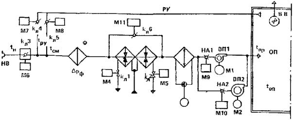
Рис. 5. Обобщенная функциональная технологическая схема приточной камеры
НВ - наружный воздух; ВВ - воздухозаборное устройство; К - клапан; М - исполнительный механизм; РУ - рециркуляция; Ф - фильтр; ВН - воздухонагреватель (калорифер); КО - камера орошения; НА - направляющий аппарат; Н - насос; ВП - приточный вентилятор; ВВ - вытяжная вентиляция; ОП - обслуживаемое помещение
3.14. Измеряемые переменные в приточной камере следующие: температура наружного, рециркуляционного, смешанного и приточного воздуха. Замеры температур производят до камеры смешения наружного и рециркуляционного воздуха, в рециркуляционном канале, после камеры смешения перед калорифером и после вентилятора в приточном воздуховоде, а также измеряют перепад давления на воздушном фильтре, давление воды, подаваемой к форсункам камеры орошения, в напорном трубопроводе, и температуру теплоносителя на выходе из калориферов.
3.15. Основными регулируемыми переменными являются температура приточного воздуха и состояние воздушной среды в производственном помещении. Имеющиеся решения систем управления приточных камер относятся к локальным системам управления с автоматическими регуляторами. Они не учитывают распределения технологического оборудования, неоднородности условий воздушной среды в производственных помещениях, взаимосвязанности процессов, происходящих при распределении воздуха по обслуживаемым помещениям от нескольких приточных камер.
3.16. Для управления формированием теплового режима производственного помещения в целом возможна структура управления, при которой отдельные параметры процесса формирования теплового режима регулируются соответствующими автоматическими регуляторами, а управляющая вычислительная машина, обрабатывая измерительную информацию, рассчитывает и оптимизирует уставки этих регуляторов, повышает надежность системы в целом, так как ее работоспособность сохраняется и при отказах управляющей вычислительной машины. Кроме того, при такой структуре управляющая вычислительная машина более проста, снижаются требования к ее быстродействию и другим характеристикам, появляется возможность практической реализации более эффективных алгоритмов оптимизации, требующих большого объема вычислений.
3.17. Оптимальное решение систем обменной вентиляции (СВ) и систем кондиционирования воздуха (СКВ) в зависимости от исходных условий может иметь от трех до четырнадцати режимов работы за годовой цикл эксплуатации. Метод оптимизации подсистем должен проводиться в комплексе со строительными решениями и, в частности, с выбором оптимальных теплотехнических характеристик ограждающих конструкций. Однако возникают определенные трудности выбора теплотехнических решений, при которых будут иметь место наименьшие материальные и энергетические затраты. Эти трудности могут быть преодолены при системном подходе и реализации следующих основных положений:
а) весь комплекс технических решений СВ и СКВ, обеспечивающий режимы потребления теплоты, выделяют в самостоятельную подсистему нагрева воздуха;
б) подсистема нагрева воздуха может быть решена без учета прямых и обратных связей с другими подсистемами, если ее режимы соответствуют требованиям термодинамической модели СВ (СКВ);
в) требования термодинамической модели должны соблюдаться в тех случаях, когда расходы теплоты воды на увлажнение воздуха соответствуют их минимально неизбежным значениям;
г) оценку подсистемы производят по одному и тому же комплексу технико-экономических показателей (ТЭП), что и для системы в целом; показатели подсистемы являются составляющей частью суммы одноименных показателей систем;
д) показатели подсистемы и системы в целом определяют с учетом всех режимов работы за годовой цикл эксплуатации системы;
е) из комплекса ТЭП один из них принимают в качестве критерия оптимизации, остальные - в виде показателей ограничений.
Исходное и решающее значение в методе оптимизации подсистемы или системы в целом имеет выбор комплекса ТЭП и их взаимосвязи. В качестве такого комплекса выбирают четыре группы показателей: функционально-технологические, конструктивно-компоновочные, эксплуатационно-энергетические, экономические.
Функциональные показатели выражают степень выполнения заданных параметров воздушной среды в помещении. Варианты систем могут сравниваться между собой по всему комплексу показателей лишь при условии, что функциональные показатели для них останутся в пределах нормируемых значений.
Технологические показатели для системы в целом характеризуют закономерности потребления теплоты, холода, воздуха и воды на увлажнение за годовой цикл эксплуатации систем и являются аргументом для выполнения заданной функции, т.е. параметров воздушной среды. Технологические показатели для одних и тех же исходных условий зависят от организации режимов работы систем (технологических схем и методов управления процессами обработки транспортирования и раздачи воздуха) и частично от функционально-технических характеристик основных элементов систем.
Конструктивно-компоновочные показатели определяют расход металла на системы, занимаемые строительные площади (объемы) и другие частные характеристики.
Эксплуатационно-энергетические показатели определяют реальное потребление тепловой и электрической энергии, время работы подсистем, а также условия, характеризующие особенности эксплуатации систем (в том числе надежность, которая в данном случае не анализируется).
Экономические показатели характеризуются значениями капитальных, эксплуатационных и приведенных затрат.
Все показатели взаимосвязаны между собой. В основу вычисления конструктивно-компоновочных, эксплуатационно-энергетических и экономических показателей принимаются технологические, показатели. Для подсистемы нагрева воздуха технологические показатели следующие: сведения о характере изменения неизбежного потребления теплоты, воды на увлажнение воздуха, расходе наружного и приточного воздуха, подаваемого в помещение.
3.18. Технико-экономические показатели определяют следующим расчетом:
по диаграммам технологических показателей (ТП), отображающим их изменение за годовой цикл эксплуатации, подбирают тип, типоразмер и компоновку оборудования; компоновка подобранного оборудования позволяет определить конструктивно-компоновочные показатели подсистем;
учет функционально-технических характеристик подобранного оборудования и выбор методов управления режимами их работы составляет основу для вычисления эксплуатационно-энергетических показателей подсистем;
информация по двум последним группам показателей с учетом прейскурантных цен на теплоту и электроэнергию обеспечивает расчет экономических показателей.
3.19. Для установившегося теплового состояния применительно к расчетной схеме, показанной на рис. 6, можно составить уравнение теплового баланса в следующем виде:
GнIн + GpIух + Qт + GпdIп + SQт вн + Qт - GудIу - GвытIв - Qогр - Qинф = 0. (1)
Имея в виду что Gуд = Gн + Gp - Gвыт, уравнение (1) относительно Qт можно записать так:
Gуд = Gн + Gp - Gвыт
Qт = Gн(Iу - Iн) - SQт в + [(Qотр + Qинф) - Qот] + GвытdIв - [GпdIп + GpdIy], (2)
где dIп = Iп* - Iп - разность энтальпий приточного воздуха после его нагрева в подсистеме и воздуха, подаваемого в помещение, например нагрев воздуха в приточном вентиляторе Be-п; dIу = Iу* - Iу - разность энтальпий рециркуляционного воздуха в местах его подмешивания к наружному и удаляемого из помещения; dIв = Iв - Iу - разность энтальпий воздуха в месте отсоса и удаляемого из помещения.
Уравнение (2) можно записать в виде
Qт = Gн(Iу - Iн) - Qтп - Qтдоп, (3)
где Qтп - остаточные тепловыделения, ассимилируемые приточным воздухом в помещении:
Qтп = SQт вн - (Qогр + Qинф - Qот) - GвытdIв, (4)
где Qт доп - дополнительная теплота, поступающая к приточному (Qт доп.пр) или рециркуляционному (Qт доп.р) воздуху (или потери теплоты в указанных потоках воздуха):
Qтд.пр = Gп*dIп;
Qтд.р = GpdIy.
При этом расход приточного воздуха в помещении Gп (рис. 6) равен:
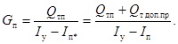
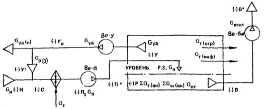
Рис. 6. Расчетная балансовая схема вентиляции (СВ) обслуживаемого ею помещения
3.20. Общее количество теплоты, которое должно быть подведено от внешнего источника к системе вентиляции и к системе отопления, равно сумме Qт и Qот. Какая-то часть этой теплоты (в частных случаях вся теплота) может быть компенсирована за счет теплоты удаляемого из помещения воздуха, если используются средства утилизации (СУ). Применительно к расчетным схемам на рис. 6 удаляемая теплота может быть в виде
Qт(уд) = Gуд(н)Iy* + GвытIв*.
Энтальпия Iв* может быть больше Iв не только за счет нагрева воздуха в вентиляторе, но и за счет съема теплоты данным потоком воздуха, проходящим через технологическое оборудование и неучтенном при вычислении Qтп. Равным образом за счет обдува тепловыделяющего оборудования может нагреваться воздух в системе Be-У, например в вентилируемых плафонах.
Уравнение (3) показывает, что при прочих равных условиях
потребление теплоты зависит только от расхода наружного воздуха, отсюда
необходимость его снижения до минимально неизбежного значения ( 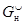 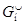 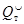
Аналогичным способом может быть получено уравнение для вычисления расхода воды на увлажнение воздуха:
где GWп - остаточные влаговыделения в помещении, ассимилируемые приточным воздухом; GWдоп - дополнительные поступления влаги в систему вне рассматриваемых средств увлажнения.
3.21. Уравнения (6) и (7) дают представление о структуре факторов, влияющих на потребление теплоты и воды в СВ (СКВ), но не содержат полной информации об условиях, влияющих на выбор принципиальных решений систем. Кроме того, отсутствуют термодинамические условия работы теплообменного оборудования подсистем нагрева воздуха. По этой причине уравнения необходимо рассматривать совместно с технологическими процессами обработки воздуха, что нагляднее всего делается при использовании I-d-диаграммы влажного воздуха. Диаграмма I-d позволяет также обобщить исходные условия в так называемые классы нагрузок. Класс нагрузок определяется исходными схемами термодинамической модели. Исходные схемы, на которых показаны границы зон наружного климата с различными режимами, называют также расчетными схемами термодинамической модели СКВ (СВ).
3.22. Исходные схемы с указанием зон на I-d-диаграмме, для которых неизбежны режимы потребления теплоты, показаны на рис. 7. Исходная схема содержит следующую информацию:
значения нормируемых параметров воздуха в помещении изображаются в виде точки, линии или области;
положение границы наружного климата Кл для данного района [имеется в виду, что для различных точек (площадок) в пределах указанных границ известна продолжительность стояния этих параметров или продолжительность стояния энтальпий];
линия eп характеризующая угловой коэффициент процесса в помещении 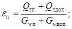
положение точек 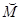 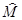
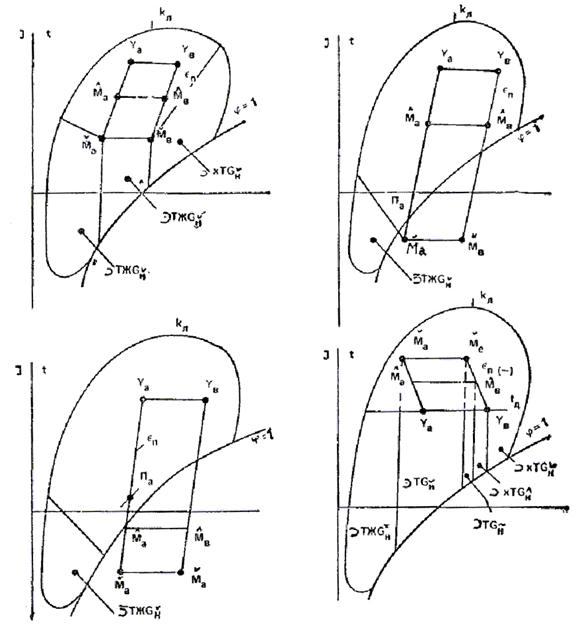
Рис. 7. I-d диаграмма с указанием зон, для которых необходимо потребление теплоты
где 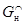
Для определения зон с режимами потребления теплоты определяющее значение имеют координаты точки . Естественно, что при переменных значениях
или при изменяющемся расходе положение точки будет изменяться.
Отсюда следует, что в любой момент времени при конкретных исходных данных точки
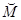 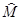
3.23. Анализ показал, что подавляющему большинству практических случаев соответствуют четыре характерных комбинации расположения этих точек относительно линии стопроцентной относительной влажности и изотермы ty:
точки и расположены выше линии j = 1, но ниже линии УаУв (I класса нагрузки);
точки - ниже, а точки - выше линии j = 1 (II класс нагрузки);
точки и - ниже линии j = 1 (III класс нагрузки);
точки и - выше линий j = 1 и изотормы tу (IV класс нагрузки при дефиците теплоты в помещении).
3.24. В зависимости от особенностей объекта в течении годового цикла эксплуатации систем класс нагрузок может оставаться постоянным или изменяться. Встречающиеся комбинации можно сгруппировать следующим образом:
класс нагрузок не изменяется: внутренние нагрузки постоянны; внешние воздействия наружного климата отсутствуют;
класс нагрузок не изменяется, но границы зон изменяются в пределах данного класса: внутренние нагрузки постоянные или переменные, внешнее воздействие наружного климата проявляется слабо;
класс нагрузок изменяется от второго или третьего до первого или четвертого: внутренние нагрузки постоянные или переменные, определяющее значение имеет внешнее воздействие наружного климата.
Класс нагрузок - это обобщение и классификация определяющих факторов; они полностью предопределяют условия получения минимально неизбежных значений ТП, технологические процессы обработки воздуха и соответствующие им технологические схемы.
3.25. В самом общем виде можно представить два типа технологических процессов и схем подсистем, показанных на рис. 8; они основаны на известных традиционных процессах обработки воздуха (не используются процессы увлажнения паром и осушка сорбентами).
В первой из них используются поверхностные воздухонагреватели, во второй - контактные (смесительные) аппараты для одновременного нагрева и увлажнения воздуха.
Принципиально обе схемы при полном составе указанных элементов могут обеспечить заданные параметры воздушной среды в помещении при надлежащих методах управления.
3.26. При оптимизации решений осуществляется организация таких режимов,
которые обеспечивают минимально неизбежные значения ТП, а также их управление.
С этой точки зрения каждая из схем имеет свои особенности, которые
целесообразно уточнить для разных классов нагрузок. При этом главное внимание
будет сосредоточено на двух режимах: 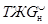
Рис. 8. Обобщенные технологические схемы систем вентиляции и кондиционирования воздуха
а - схемы с использованием нагрева воздуха в поверхностных теплообменниках; б - схемы с использованием нагрева воздуха в контактных аппаратах или орошаемых теплообменниках
3.27. Если для I класса
нагрузок (рис. 9)
параметры воздуха, нормируемые в помещении, заданы линией, (или областью) с
ограниченной относительной влажностью, то будет два режима с потреблением
теплоты: 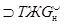 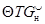
В режиме неизбежны следующие процессы:
нагрев наружного воздуха от состояния в точке Н1 до точки П1;
адиабатное увлажнение от состояния в точке
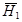 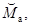
Если параметры воздуха на притоке характеризуются точкой Па, необходима совокупность следующих процессов:
смешивание минимального количества наружного воздуха с параметрами в точке Н1 с рециркуляционным воздухом состояния в точке Уа; при этом параметры смеси в точке определяются из уравнения
где Gп1 - зависит от принятых параметров приточного воздуха, так
как Gп1 = Qтп/(Iyа -
Iпа1) - нагрев смеси от состояния в точке С1 до
точки 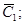
адиабатное увлажнение смеси от состояния в точке C1 до точки Па1.
Рис. 9. Процессы обработки воздуха в режимах потребления теплоты для I класса нагрузок
а, б - на I-d-диаграмме процессы в режиме 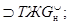
Как в первом, так и во втором случае потребляемое количество теплоты и воды на увлажнение воздуха будут соответствовать минимально неизбежным их значениям:
Отсюда следует, что использование рециркуляционного воздуха при неизменном расходе не влияет на расходы теплоты и воды; естественно, что при этом увеличивается расход приточного воздуха, следовательно, «ухудшаются» технологические показатели.
3.38. В тех случаях, когда по условиям
воздухораспределения температура приточного воздуха не должна превышать tп1 и в то же время рециркуляция не допускается по каким-то
обоснованным причинам, приходится увеличивать расход наружного воздуха до
общего воздухообмена ( 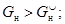
Отсюда перерасходы теплоты и воды будут равны:
где 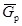
3.29. В тех случаях, когда только вторая рециркуляция может использоваться, обеспечение параметров приточного воздуха в точке Па1 происходит за счет второй рециркуляции, при этом расход наружного воздуха остается равным и перерасходов теплоты и воды не будет.
3.30. Потребление теплоты за счет использования
рециркуляционного воздуха уменьшается лишь в том случае, когда к
рециркуляционному воздуху поступает теплота от какого-либо источника Qдоп.р, например нагрев воздуха в вентиляторе. Снижение
температуры рециркуляционного воздуха за счет теплопотерь вне помещения
приводит к увеличению потребления теплоты. Перерасход воды и теплоты будет
также иметь место, если параметры воздуха в помещении в режиме поддерживаются
не в точке Уа, а в любой другой точке, например У*,
хотя и в пределах допустимых значений на линии УаУв.
Поскольку Iу* > Iyа, расход теплоты согласно уравнению (15) будет увеличиваться, а также увеличится
расход воды, зона потребления теплоты, так как границы пройдут не через точку 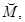 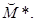
3.31. Требования оптимальных режимов
потребления теплоты нарушаются либо в связи с невозможностью обеспечить
требуемые процессы, либо с необоснованным решением автоматизации. Так, если для
процессов адиабатного увлажнения воздуха отсутствует возможность «остановки»
процесса увлажнения до состояния в точке 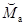 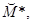
«Остановка» процессов адиабатного увлажнения неизбежна и для процессов с использованием первой рециркуляции, поскольку относительная влажность точки Пa меньше тех значений, которые получаются после обработки в контактном аппарате. В настоящее время «остановка» процессов осуществляется управляемым байпасом или изменением расхода распыливаемой воды.
3.32. Выход в точку Уа без «остановки» процесса адиабатного увлажнения можно обеспечить при использовании второго подогрева с соблюдением следующих процессов:
нагрева минимального расхода наружного
воздуха от состояния в точке H1 до точки 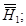
адиабатного увлажнения от состояния в
точке 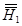
второго подогрева от точки Ка
до точки 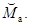
Аналогично построение процессов и при использовании первой рециркуляции: для первого и четвертого класса нагрузок, когда второй подогрев неизбежен в СКВ из-за наличия режимов одновременного потребления холода и теплоты. Однако и при таком решении технологической схемы обязательным требованием для САУ является обеспечение параметров воздуха в помещении без отклонения от точки Уа.
Требования обязательного поддержания
параметров в точке Уа снимаются лишь в одном случае, когда
линия eп* и влагосодержание точки меньше влагосодержания наружного воздуха.
В примере, показанном на рис. 9, а,
такому случаю соответствует положение точки 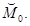 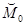 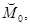 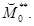
3.33. В технологической схеме на рис. 9, а для систем первого класса нагрузок, в которых неизбежны режимы XTGн необязательно использование управления «остановкой» процессов в контактном аппарате, так же как и необязательна первая рециркуляция. Если режимы XTGн в системе отсутствуют, вместе второго подогрева могут быть регулируемые процессы в контактном аппарате. Наличие или отсутствие средств утилизации (СУ) принципиальных требований, к организации режимов потребления теплоты не вносит. Целесообразность их использования определяется технико-экономическими расчетами. Однако для этих расчетов необходимы сведения об условиях работы СУ в принятой технологической схеме.
3.34. На рис. 9, б показан характер процессов нагрева при использовании рекуперативных и энтальпийных СУ для расчетных значений параметров наружного воздуха в точке H1.
Рекуперативные СУ имеют следующие процессы:
нагрев наружного воздуха в СУ от точки Н1 до точки H1(t);
догрев в калорифере от точки H1(t) до точки догрев в данном случае неизбежен, поскольку
адиабатное увлажнение от точки до точки
Положение точки H1(t) зависит не только от КПД СУ, но и от ограничений по возможному пределу охлаждения удаляемого воздуха из-за соображений замерзания выпавшего конденсата (см. точку У(t), так как ее температура ty(t) близка к нулю).
Использование энтальпийного теплообменника приводит к образованию следующих процессов:
нагрева воздуха в СУ с изменением влагосодержания и энтальпии от точки H1 до точки H1(J);
возможного подогрева воздуха от состояния точки H1(J) до точки
адиабатного увлажнения от точки до точки
Следует заметить, что использование энтальпийного СУ может привести к тому, что калорифер не потребуется. Полного обеспечения требуемой теплоты за счет использования СУ, даже когда это возможно, не означает, что такое решение всегда выгодно по комплексу ТЭП. Поэтому при анализе конкурирующих вариантов необходимо изучать технологическую схему, показанную на рис. 9, но при разных соотношениях тепловых нагрузок на СУ и калориферы. В отдельных случаях возникает потребность частичного нагрева воздуха перед СУ.
3.35. Кроме рассмотренных режимов для I класса нагрузок существуют режимы потребления только теплоты без адиабатного увлажнения (рис. 9, в). Этот режим обеспечивается при условии, если система автоматического управления для данного влагосодержания наружного воздуха будет поддерживать параметры воздуха в помещении в строго определенной точке У. Так для состояния в точке H1 поддержание параметров в точке обеспечивается нагревом минимально необходимого количества наружного воздуха до точки Если при этих же параметрах в точке H1 состояние воздуха в помещении поддерживается в точке У1* неизбежно потребление холода и перерасход теплоты, так как произойдут следующие процессы:
охлаждение и сушка воздуха от точки H1 до точки K1;
нагрев воздуха от точки K1 до точки При поддержании в помещении параметров в точке У2* будет иметь место неоправданное потребление воды и перерасход теплоты из-за необходимости процессов;
Рис. 10. Процессы обработки воздуха в режимах потребления теплоты при III классе нагрузок
а - минимальная относительная влажность воздуха в помещении ограничена; б - то же не ограничена; в - изменение класса нагрузок при переменных значениях Qтп
нагрева воздуха от точки H1 до точки
адиабатного увлажнения от точки до точки Для данного режима так же, как и для предыдущего, могут быть использованы СУ, но главным образом неэнтальпийного типа. В тех случаях, когда для I класса нагрузок параметры воздуха в помещении не ограничиваются минимальным значением относительной влажности, что характерно для систем вентиляции, режим практически исчезает и основным становится режим (см. рис, 9, г).
3.36. Сказанное для I класса нагрузок остается в силе и для IV класса, так как достаточно сопоставить расчетные зоны этих классов с потреблением теплоты на рис. 7. Для IV класса нагрузок появляется дополнительная зона - режим с переменным расходом наружного воздуха, при котором параметры воздуха в помещении поддерживаются в точке Ув.
Главный отличительный признак для IV класса нагрузок заключается в том, что температура, до которой необходимо нагревать обрабатываемый воздух, всегда выше температуры воздуха помещения. Это значит, что при любой эффективности СУ всегда потребуется догрев воздуха в калорифере. Принципиальное отличие режимов потребления теплоты для III класса нагрузок по сравнению с I и IV классом заключается в том, что для III класса неизбежна первая рециркуляция, нет необходимости во втором подогреве, не требуется «остановка» процесса при адиабатном увлажнении воздуха. В связи с этим из технологической схемы (рис 8, а) выпадают соответствующие элементы. При параметрах воздуха, заданных в помещении точкой или линией с ограничением относительной влажности (рис. 10, а), неизбежным является режим следующими процессами:
смешение минимально неизбежного расхода наружного воздуха с параметрами в точке Н с рециркуляционным в точке Уа; при минимальном расходе приточного воздуха параметры смеси в точке С определяют по уравнению (10);
нагрев воздуха от точки С до точки
адиабатное увлажнение воздуха от точки до точки Па.
Или могут быть процессы с первой рециркуляцией после подогрева:
нагрев воздуха от состояния точки Н до точки
смешение минимально неизбежного расхода наружного воздуха с параметрами в точке с рециркуляционным в точке для получения параметров смеси в точке
адиабатное увлажнение смеси от точки до точки Па.
Несмотря на отличие процессов и технологических схем для III класса нагрузок причины, вызывающие отклонения ТП от их минимально неизбежных значений те же, а именно:
запрещение первой рециркуляции, если она приводит к увеличению минимального расхода наружного воздуха;
отклонение параметров воздуха в помещении от заданной точки;
использование взаимоисключающих процессов (охлаждение - нагрев).
3.37. Для систем вентиляции, когда не ограничивается минимальная относительная влажность, линия УаУв растянута (рис. 10, б), имеет место только режим потребления теплоты при обязательном условии переменного положения точки
В ряде случаев для III класса нагрузок все требуемое количество теплоты может быть обеспечено за счет использования СУ.
3.38. Управление режимом работы систем усложняется, так как каждому состоянию наружного воздуха соответствует свое местоположение точки В случае изменения величины Qтп из-за теплопотерь через внешнее ограждение каждому значению температуры наружного воздуха будет соответствовать определенное состояние, т.е. положение точки например, как это показано на рис. 10.
Температуре соответствует точка - -
При температуре если теплопотери близки нулю и точка М совпадает с точкой точка соответствует остаточным тепловыделениям Qтп, равным SQт(вн). Естественно, что при одинаковой температуре наружного воздуха, но разном влагосодержании расход теплоты будет различным, так как он при прочих равных условиях зависит от энтальпии наружного воздуха (см. уравнение (11). Отсюда также следует, что при одной и той же температуре, но при различном влагосодержании (энтальпии) вместо режима потребления теплоты может стать неизбежным другой режим. Так, на рис. 10, а показано, что при температуре точке H3а будет соответствовать режим а точке H3б - режим
3.39. Организация процессов в технологических схемах, в которых нагрев и увлажнение совмещены в контактных аппаратах (рис 8, б), имеет ряд отличительных сторон по сравнению с ранее рассмотренными. В таких схемах снижены материальные затраты на теплообменное оборудование и средства увлажнения. В данных схемах можно снизить температурный уровень используемой нагретой воды, что способствует в ряде случаев уменьшению эксплуатационных затрат. Препятствием для широкого внедрения схем служит опасность обмерзания контактного аппарата при низких температурах обрабатываемого наружного воздуха и возникновения запахов, идущих от воды к воздуху. Представляется, что эти чисто технические ограничения преодолимы.
В первую очередь необходимо выяснить, в какой степени в анализируемых технологических схемах возможно обеспечить режимы с минимально неизбежными значениями ТП. Независимо от используемых технических средств следует принимать режимы термодинамической модели.
3.40. На рис. 11 показаны расчетные зоны модели для двух основных режимов и .Так для I и IV класса нагрузок (рис 11 а, б) параметры воздуха заданы линией УаУв с ограничением по относительной влажности воздуха в помещении, процессы при наружном воздухе в точке H1 записываются следующим образом:
нагрев и увлажнение воздуха в контактном аппарате от точки H1 до точки К;
нагрев воздуха в поверхностном теплообменнике от точки К1 до точки
Из этих данных следует, что обойтись только контактным аппаратом не удается, требуется второй подогрев в поверхностном теплообменнике. При параметрах наружного воздуха в точке Н2 для этого же режима могут возникнуть несколько иные процессы, а именно:
нагрев и увлажнение от точки Н2 до точки ( и т.д.);
подогрев воздуха от точки ( и т.д.) до точки В частном случае возможен нагрев воздуха от точки Н2 до точки и тогда второй подогрев не требуется, но при любом из них необходим управляемый процесс в контактном аппарате в целях получения обрабатываемого воздуха с малыми значениями относительной влажности. При параметрах в точке К1 доля теплоты, обеспечиваемая в контактном аппарате, может оказаться равной нулю; при параметрах в точках К2, К3 доля тепла, отданной в контактном аппарате, увеличивается, но увеличивается также общее потребление теплоты по причине смещения точки У от точки Уа.
Для режима который существует при I и IV классе нагрузок, обработка воздуха в контактном аппарате не используется, так как требуется процесс только сухого подогрева, например, от точки Н3 до точки (рис. 11, а).
Если учесть, что режим является наиболее характерным для систем вентиляции, можно предположить наличие для таких технологических схем существующих ограничений. Действительно, пусть параметры наружного воздуха заданы линией, как показано на рис. 11, в. Для наружного воздуха в точке Н4 требуемое минимально неизбежное потребление теплоты соответствует процессу нагрева от точки Н4 до точки
Рис. 11. Процессы обработки воздуха в режимах потребления теплоты при использовании технологических схем с нагревом воздуха в контактных аппаратах
а - для I класса нагрузок; б - для IV класса нагрузок; в - для систем вентиляции при I (IV) классе нагрузок; г - то же для III класса нагрузок
3.41. При использовании контактного аппарата может быть осуществлен любой процесс, но с увеличением влагосодержания от dн4 до dк4, dк5, dк6 и т.д. В любом из этих случаев потребуется не только второй подогрев, но и увеличение расхода теплоты. Так, например, при адиабатном увлажнении воздуха будет наблюдаться перерасход теплоты, равный
(17)
3.42. Процессы одновременного нагрева и увлажнения в контактных аппаратах с меньшими ограничениями могут быть использованы для III класса нагрузок. Так, на рис. 11, г показано, что при параметрах наружного воздуха в точке Н можно осуществить процессы:
смешения воздуха состояний точки Н и точки Уа для получения параметров смеси в точке С;
нагрева и увлажнения воздуха от точки С до точки Па.
Первая рециркуляция после контактного аппарата без последующего адиабатного увлажнения практически невозможна.
3.43. Технологические схемы с использованием контактных аппаратов для одновременного нагрева и увлажнения воздуха до III класса нагрузок в большей степени удовлетворяют всем требованиям термодинамической модели. Они должны рассматриваться в качестве конкурирующих вариантов, если есть источники воды с температурой, которая приводит к значительным увеличениям теплообменной поверхности воздухонагревателей, или удается снизить стоимость расходов теплоты за счет более эффективного графика обратной воды по сравнению с графиком для поверхностных теплообменников и т.д.
3.44. Окончательное решение по технологической схеме, когда нет ярко выраженных достоинств и недостатков, может быть принято только при оценке по комплексу ТЭП. Однако для всесторонней оценки схем с контактными аппаратами отсутствуют надежные сведения о функционально-технологических характеристиках этих аппаратов.
3.45. Для вычисления ТП в встроенных цехах или зонах, на которые не распространяются воздействия внешних составляющих нагрузок, соответствующие уравнения приобретают следующий вид (см рис. 6):
(18)
(19)
(20)
В зависимости от функциональных особенностей помещения (цеха) могут изменяться величины Qт(вн), Gw(вн), Gвыт. Для расчета подсистем необходимо знать три их значения: максимальные - Qт(вн)max, Gw(вн)max, Gвытmax, средние - (Qт(вн)mid, Gw(вн)mid, Gвытmid, ); минимальные - Qт(вн)min, Gw(вн)min, Gвытmin,
3.46. По экстремальным значениям переменных величин строится фрагмент расчетной схемы термодинамической модели, как это показано на рис. 12, а. Здесь точки и , , определяются по уравнениям:
(21)
(22)
Положение точки позволяет построить границы Imin, tmin, dmin, которым соответствуют режимы наибольшего потребления теплоты. Граница по энтальпии Imах соответствует режимам наименьшего потребления теплоты. Истинная граница в любой момент времени может находиться между ними. Среднее ее положение соответствует точке вычисленной по уравнениям (21) и (22) при средних значениях переменных величин. Построенная таким образом расчетная схема модели для подсистемы позволяет:
по предельным положениям границ выбрать технологические схемы, обосновать требования к автоматическому управлению, рассчитать основные элементы подсистем (оборудования), их установочную производительность, экстремальные условия работы;
определить ТП за годовой цикл эксплуатации систем для вычисления энергетических и эксплуатационных затрат.
Рис. 12. Расчетная схема термодинамической модели и базовый график
3.47. На рис. 12, а показан случай, когда класс нагрузок изменяется от III до I, соответственно могут иметь место как режим так и Это значит, что для состояния наружного воздуха в точке H всегда будет одинаковый режим, но с разным количеством потребляемой теплоты и различными условиями работы теплообменного оборудования. При параметрах в точке Н2 вместо режима может быть другой - без потребления теплоты и т.д. Следовательно, технологическая схема и САУ должны удовлетворять более общим требованиям, которые соответствуют I и IV классу нагрузок. При известном положении границ для средних нагрузок вычисление ТП производят по уравнениям (18); (19), (20), но с соблюдением некоторых особенностей для режима и Результаты вычисления целесообразно представить в виде базовых графиков. На рис. 12, в приведены базовые графики, соответствующие расчетной схеме на рис. 12, б. Базовый график строится в двух квадрантах. На оси абсцисс откладывается энтальпия наружного воздуха в пределах значений от Iнmin до т.е. до значения энтальпии наружного воздуха, при которой потребление теплоты равно нулю. Ось ординат в верхнем квадранте соответствует показателям Qт, Gп, в нижнем - продолжительности стояния параметров наружного воздуха t при данном значении энтальпии. В рассматриваемом случае для двух расчетных зон расход приточного воздуха Gп равен (на графике линия Gп не показана). Потребление теплоты для зоны выражается линией построенной по уравнению (18) по двум точкам: при Iн = Iнmin и Для зоны потребление теплоты зависит от двух координат состояния наружного воздуха. Например, для одной и той же энтальпии Iн2 величины Qт для точек Н2 и Н2а будут различными. Их необходимо вычислять по уравнению (18) при различных значениях энтальпии для каждого значения dн в пределах от до И тогда появится семейство линий Qт(dн3) при dн3, при и т.д.
3.48. При вычислении суммарных за год расходов теплоты для режима реализуется весьма простой способ: на графике выделяются элементарные участки (например, участок при Iн = Iнj на рис. 12), для каждого участка известна величина Qтj и продолжительность стояния этой энтальпии tj. Сумма произведений (Qт ´ t) для всех элементарных участков соответствует годовому потреблению теплоты для данного режима. Эта идея может быть реализована и другими способами в зависимости от метода представления информации о параметрах наружного воздуха. Аналогичный способ может быть использован и для зоны но для этого необходимо иметь сведения о продолжительности стояния параметров наружного воздуха в каждой точке на I-d-диаграмме, характеризующейся значениями Iн, dн (например, точка Н2а на рис. 12, б, для которой величина Qт соответствует значению в точке 2, а на рис. 12, в). Отсюда следует, что в самом общем случае сведения о наружном климате должны представляться двухпараметрическим распределением. Каким бы способом не определялись ТП, в конечном счете целесообразно иметь диаграмму (рис. 12, г), на которой по оси абсцисс откладывается время Dtj, соответствующее данному значению величины потребляемой теплоты Qтi. Для расчета элементов систем при каждом значении Qт диаграммы должны содержать следующие дополнительные сведения:
класс нагрузки;
параметры наружного воздуха tн, Iн;
параметры приточного воздуха, параметры на входе и выходе теплообменника (сведения получаются при выборе конкурирующих вариантов технологических схем);
температура горячей и обратной воды по графику источника теплоснабжения желательную температуру обратной воды, при которой не оплачивается теплота;
расход воздуха через теплообменник.
Аналогичным образом строятся диаграммы для расхода воды на увлажнение воздуха.
3.49. Для случая теплового режима помещения, зависящего от параметров наружного воздуха, также представляют практический интерес две задачи:
определение характера изменения границ расчетных зон при экстремальных нагрузках;
определение годовых значений ТП.
Цели получения этой информации те же, что при тепловом режиме помещения, независимом от параметров наружного воздуха. Некоторое различие в методах решения этих задач заключается в том, что учет внешних воздействий требует сведений о двух параметрах наружного воздуха для режимов Технологические показатели с учетом внешних воздействий определяются по уравнениям (см. рис. 6 при отсутствии систем отопления):
(23)
(24)
(25)
где SQт(вн); Gвыт - принимаются по средним значениям. Так как теплопотери через ограждения выражаются через разность температур, величина Qт зависит от двух параметров воздуха. Отсюда необходимость вычисления ТП для каждой площадки наружного климата. Действительно (см. 13, а), при температуре наружного воздуха tн1 значения теплопотерь (при прочих равных условиях) будут равны какой-то величине Qогр.1, но положение точки и величина будут различными для точек А, 1, 2, являющихся центрами расчетных площадок t-j. Или, что то же самое, при одной и той же энтальпии наружного воздуха Iнi значение Qт(л), соответствующее температуре крайней левой точке Л на этой энтальпии, будет отличаться от Qт(п), которое имеет место при температуре для крайней правой точки П на этой же энтальпии.
3.50. Суммарные годовые значения теплоты определяют сложением количества потребляемой теплоты на всех площадках. Базовый график для таких случаев может быть построен следующим образом (рис. 13, б):
вычисляется значение Qт при различных энтальпиях и температурах на линии «левых» точек; строится линия Qт(л);
Рис. 13. Расчетная схема термодинамической модели
аналогично вычисляется Qт для температуры на линиях «правых» точек строится линия Qт(п). Для приближенного вычисления суммарных годовых расходов теплоты на базовом графике достаточно провести среднюю линию Qт(cp), приняв ее в качестве расчетной при однопараметрическом распределении (задача сводится к ранее рассмотренной для зоны при постоянных нагрузках). Наконец, определенную степень приближения можно достигнуть, если на расчетной схеме (рис. 13, а) вместо «левой» и «правой» линии принять среднюю, соответствующую j = 0,6 - 0,7 и для каждого значения энтальпии теплопотери рассчитывать при температуре в точке пересечения с этой кривой. Аналогично вычисляются другие ТП. Выбор метода вычисления ТП зависит от точности располагаемой информации о наружном климате и характере решаемых задач. Конечная информация представляется в виде диаграмм ТП в полном соответствии с рекомендациями (см. рис. 12, г).
3.51. Для определения координат точки на I-d-диаграмме известные уравнения для вычисления eп и конкретизируются в следующем виде:
(26)
(27)
Поскольку Qoгp зависит от разности температур, то приближенно можно принять, что Qинф зависит не от разности энтальпий, а от разности температур. Нетрудно сделать вывод, что для каждого значения tн будет свое положение точки Для вычисления пределов изменения границ расчетных зон модели необходимо (см. рис. 12, в):
принять Qогр, Qинф при минимальной (расчетной) температуре наружного воздуха tнmin, минимальные значения SQт(вн) и и другие величины такими, чтобы линия заняла верхнее предельное положение ();
вычислить координаты точек при температуре, близкой tу, и таких значениях остальных величин, входящих в уравнения (26), (27), при которых искомые точки займут нижнее предельное состояние (аналогично точкам для случая без учета внешних воздействий).
3.52. При учете внешних воздействий важно знать те параметры наружного воздуха, при которых исчезает режим потребления теплоты. В этих целях достаточно в уравнении (21) принять Qт равное нулю, энтальпия Iнгр по смыслу приобретает значение энтальпии и находится по выражению
(28)
принимая
(29)
(30)
уравнение (28) можно переписать в виде
(31)
Решение уравнения (31) можно упростить, допуская определенную погрешность при замене разности и тогда
(32)
Все изложенные особенности расчета при учете внешних воздействий значительно упрощаются для СВ, когда в помещении не ограничивается минимальное значение относительной влажности и Любой изотерме tнi, например tн1 на рис. 13, г, различному положению точек Н1(1), H1(2) и т.д. будет соответствовать одна и та же линия потребление теплоты одинаковое; следовательно, достаточно знать распределение во времени только температуры или энтальпии.
3.53. Для учета количества теплоты Qот от систем отопления при вычислении ТП на подсистемы нагрева из правой части уравнения (23) необходимо вычесть Qот, а в числитель уравнения (26) прибавить Qот. При определении характера изменения границ расчетных зон Qот прибавляется к числителям уравнений (26), (27). Уравнение (32) примет другой вид, если учесть, что нагрузка на систему отопления может быть записана в виде
(33)
где Qот - количество теплоты, отдаваемое системой отопления при текущем значении температуры tн и температуре в помещении tот, которая должна ею обеспечиваться.
Решая совместно с уравнением (32), получаем
(34)
В определенном смысле учет влияния отопления на все рассмотренные ранее вопросы можно отождествить с новыми значениями суммарных внутренних тепловыделений SQ(вн). Граница режима потребления теплоты без каких-либо погрешностей принимается по изотерме tнгр.
3.54. Приведенный в пп. 3.18 - 3.53 метод оптимизации связан со значительным объемом вычислительных работ и требует использования ЭВМ. При использовании ЭВМ требуется определенная структура алгоритма выполнения основных групп операций, приведенных на рис. 14.
3.55. В первой группе операций решаются вопросы, которые позволяют получить обобщенную информацию в виде сведений об изменении класса нагрузок за годовой цикл эксплуатации систем при отсутствии систем отопления. Затем рассматриваются возможные изменения класса нагрузок при различной тепловой нагрузке на систему отопления. Здесь, при отсутствии четкого представления о целесообразной нагрузке на систему отопления, выдвигаются конкурирующие варианты по соотношению нагрузок на систему отопления и подсистему нагрева воздуха.
Для выдвинутых вариантов на основе базовых графиков строятся диаграммы годовых значений технологических показателей (ТП).
Рис. 14. Структура алгоритма выполнения основных групп операций при оптимизации подсистем нагрева воздуха
3.56. Диаграммы ТП являются основной информацией на входе во вторую группу операций.
Поскольку значение комплекса технико-экономических показателей (ТЭП) зависит от выбранного типа технологической схемы (см. рис. 8), от возлагаемой тепловой нагрузки на средства утилизации (СУ), от схемы организации потоков воздуха (см. рис. 32), от принципа компоновки теплообменников и контактных аппаратов, от типов используемых теплообменников и т.д., может возникнуть бесконечное число конкурирующих вариантов. Сокращение количества вариантов во многом зависит от опыта исполнителя. Однако в любом случае целесообразно руководствоваться следующими соображениями:
в основе расчета так называемый опорный вариант технологической схемы, базирующийся на использовании поверхностных теплообменников и контактных аппаратов для адиабатного увлажнения воздуха (см. рис. 8). Технологическая схема выбирается в соответствии с характером изменения класса нагрузок. В опорном варианте СУ не используются, воздухонагреватели устанавливаются по схеме рис. 32;
опорному варианту противопоставляются решения с различными схемами организации потоков воздуха.
Рассмотренным вариантом можно противопоставить технологические схемы, в которых используются СУ при максимально возможной для них нагрузке и пятидесятипроцентной от нее.
Результаты сравнения этих вариантов показывают тенденцию изменения ТЭП и необходимость дальнейшей детализации вариантов. Выходной информацией второй группы операций являются диаграммы годовых изменений комплекса KF.
3.57. Третья группа операций касается расчета основных элементов систем: поверхностных воздухонагревателей и СУ. Для каждого варианта выбирают тип и типоразмер теплообменников, определяют расходные и термодинамические характеристики. Сведения этой группы операций являются исходными для вычисления конструктивно-компоновочных, энергетических и экономических показателей.
3.58. На последнем этапе по ТЭП для рассмотренных вариантов принимается решение о выборе наилучшего из них.
4.1. Система предназначена для управления средствами обеспечения теплового и воздушного режима помещений производственных зданий в соответствии с выбранным критерием оптимизации управления, например минимизация затрат, тепловой и электрической энергии.
4.2. Автоматизированные системы управления тепловым режимом помещений (АСУ ТРП) являются разновидностью автоматизированных систем управления технологическими процессами, в связи с чем при их разработке могут быть использованы результаты разработок автоматизированных систем управления процессами в других областях.
4.3. Автоматизированная система управления технологическими процессами представляет систему управления для выработки и реализации управляющих воздействий на технологический объект управления в соответствии с принятым критерием управления. Технологический объект управления (ТОУ) представляет совокупность технологического оборудования и реализованного на нем по соответствующим технологическим инструкциям или регламентам технологического процесса производства. Поэтому технологическое оборудование теплоснабжения, обработки перемещения воздуха отопительно-вентиляционных систем, а также обслуживаемые этими системами помещения можно рассматривать как технологический объект управления.
4.4. Совокупность совместно работающих автоматизированной системы управления теплового режима помещений и технологического объекта управления совместно с узлом централизованной подготовки теплоносителя для систем отопления - вентиляции, приточных камер, устройств воздухораспределения, обслуживаемых помещений и т.п. - рассматривается как автоматизированный технологический комплекс.
4.5. Автоматизированная система управления тепловым режимом зданий представляет человеко-машинную систему управления, обеспечивающую автоматизированный сбор и обработку информации, необходимой для оптимизации управления. В соответствии с этим в составе АСУ ТРП должны быть автоматические средства сбора и переработки информации об управляемом объекте (в первую очередь средства вычислительной техники), а цель функционирования должна заключаться в оптимизации работы технологического объекта управления в соответствии с принятыми критериями управления путем формирования управленческих воздействий. В выработке решений по управлению должен принимать участие человек.
Таким образом, система управления ТОУ является автоматизированной системой управления ТРП, если обладает следующими признаками: а) осуществляет управление всеми подсистемами ТОУ в целом; б) осуществляет формирование управляющих воздействий в темпе протекания управляемых технологических процессов (в реальном масштабе времени); в) наличии средств вычислительной техники, других технических средств; г) участие человека-оператора, участвующего в выработке решений по управлению.
4.6. В системах обеспечения ТРП к управляемым относятся следующие процессы:
управления температурой теплоносителя путем смешения подаваемого и обратного теплоносителя в узлах централизованной подготовки;
управления расходом теплоносителя через воздухонагреватели приточных камер;
управления расходами приточного и рециркуляционного воздуха через приточные камеры;
поддержания заданных значений параметров теплового режима обслуживаемых помещений путем осуществления указанных выше взаимосвязанных процессов.
Область заданных значений параметров теплового режима определяет выбор технологического оборудования и влияет на алгоритм функционирования.
4.7. Целью создания АСУ ТРП является обеспечение требуемых значений параметров теплового режима обслуживаемых помещений при минимальных энергетических затратах, рациональном использовании технологического оборудования систем обеспечения ТРП и трудовых ресурсов (оперативного и обслуживающего персонала).
4.8. Критерием управления АСУ ТРП является соотношение, характеризующее качество работы ТОУ в целом и принимающее числовые значения в зависимости от используемых управляющих воздействий. В качестве критерия управления (критерия качества функционирования) в рассматриваемых системах могут быть приняты приведенные затраты по поддержанию требуемых значений параметров теплового режима помещений. Частными критериями управления могут являться затраты энергии на функционирование управляемых подсистем, надежность функционирования ТОУ или автоматизированный технологический комплекс в целом и т.п.
4.9. В соответствии с основным определением функции АСУ ТРП как «круга действий АСУ ТРП, направляемых на достижение частной цели управления», АСУ ТРП выполняет следующие функции: информационные, управляющие, вспомогательные.
4.10. Информационная функция. Ее содержанием являются: сбор, преобразование, хранение информации о состоянии ТОУ, представление этой информации оперативному персоналу или передача ее для последующей обработки.
Информационные функции АСУ ТРП подразделяются на: централизованный контроль состояния ТОУ, вычислительные и логические операции информационного характера.
4.11. Функций централизованного контроля заключаются в следующем:
непрерывное, периодическое и (или) по вызову измерение, оперативное отображение и регистрация значений технологических параметров и показателей состояния оборудования;
обнаружение, оперативное отображение, регистрация и сигнализация отклонений значений технологических параметров и показателей состояния оборудования от установленных пределов;
контроль, оперативное отображение, регистрация и сигнализация срабатываний блокировок и защит;
оперативное отображение и регистрация результатов математических и логических операций, выполняемых технологическими средствами системы.
4.12. Содержание вычислительных и логических операций следующее:
косвенное измерение технологических параметров показателей состояния оборудования системы;
вычисление и анализ обобщенных показателей оценки текущего состояния ТОУ и его составляющих;
анализ срабатывания блокировок и защит;
диагностика протекания ТРП и состояния оборудования;
прогнозирование хода ТРП и состояния оборудования;
расчет технико-экономических и эксплуатационных показателей функционирования ТОУ;
подготовка информации и выполнение процедур обмена информацией со смежными и вышестоящими системами управления.
4.13. Содержание управляющей функции является выработка решений и реализация управляющих воздействий на ТОУ.
К управляющим функциям АСУ ТРП относятся следующие:
определение рационального режима проведения ТРП;
формирование и передача на входы исполнительных устройств управляющих воздействий, обеспечивающих реализацию выбранного режима;
выдача оператору рекомендаций по управлению ТРП.
4.14. Основной особенностью управляющих и информационных функций, выполняемых АСУ любым технологическим процессом, является их направленность на конкретного потребителя (объект управления, оперативный персонал, смежные или вышестоящие системы управления).
4.15. К вспомогательным функциям относятся такие, которые обеспечивают решение внутрисистемных задач. Вспомогательные функции не имеют потребителя вне системы и предназначены для обеспечения ее собственного функционирования (обеспечение заданного алгоритма функционирования технологических средств системы, контроль их состояния и т.п.).
4.16. Используют два режима реализации функций системы: автоматизированный и автоматический.
4.17. Для информационных функций автоматизированный режим реализации предусматривает участие оперативного персонала в операциях по получению и переработке информации. В автоматическом режиме все необходимые процедуры переработки информации реализуются без участия человека.
4.18. Для управляющих функций автоматизированный режим характеризуется участием человека в выработке (принятии) решений и их реализации. При этом различаются следующие варианты:
«ручной» режим, при котором оперативному персоналу представляется контрольно-измерительная информация о состоянии ТОУ, а выбор и осуществление управляющих воздействий производит оператор;
режим «советчика», при котором техническими средствами системы вырабатываются рекомендации по управлению, а решение об их использовании принимается и реализуется оперативным персоналом;
«диалоговый» режим, при котором оперативный персонал имеет возможность корректировать постановку и условия задачи, решаемой техническими средствами системы при выработке рекомендаций по управлению объектом.
4.19. Автоматический режим реализации управляющих функций предусматривает автоматическую выработку и реализацию управляющих воздействий. При этом различают:
режим косвенного («супервизорного») управления, когда средства вычислительной техники автоматически изменяют уставки и (или) параметры настройки локальных систем автоматического управления (регулирования);
режим прямого (непосредственного) цифрового (или аналого-цифрового) управления, когда управляющее вычислительное устройство формирует воздействия, подаваемые к исполнительным механизмам.
4.20. Функциональной структурой системы называют структуру, элементами которой являются функции АСУ, а связи между элементами отражают порядок их взаимодействия. На рис. 15 приведено схематическое изображение функциональной структуры АСУ ТРП.
Рис. 15. Функциональная структурная схема
1 - датчик температуры воздуха в помещении; 2 - регулирующий клапан; 3 - приемный воздушный клапан; 4 - насос регулирования температуры прямой воды
4.21. В соответствии с определенными выше функциями в АСУ ТРП решаются следующие задачи: 1) сбор, обработка, хранение и регистрация информации; 2) контроль переменных, описывающих состояние технологического, объекта управления (ТОУ); 3) формирование управляющих воздействий; 4) организация связи оператора с управляющей частью системы; 5) общесистемные задачи.
К первой группе относятся: задачи ввода в систему сигналов различных видов (естественных - непосредственно от первичных измерительных преобразователей и унифицированных - токовых сигналов или сигналов в виде напряжения; дискретных и аналоговых; число - импульсных и частотных), линейных и нелинейных преобразователей, в том числе, фильтрации сигналов от наложенных помех, компенсации систематических и случайных погрешностей, статистической обработки информации, хранения ее в различных запоминающих устройствах, регистрации (записи) информации на различных носителях (магнитных дисках магнитной ленте, перфоленте, бумаге).
Задачи второй группы сводятся к проверке выхода непосредственно измеряемых или полученных в результате обработки входной информации расчетных переменных за допустимые или аварийные пределы. Процесс контроля может сопровождаться формированием предупредительных и аварийных сигналов или сообщений.
Задачи третьей группы включают: формирование управляющих воздействий в контурах непосредственного цифрового управления (НЦУ), в контурах формирования корректирующих или задающих воздействий (например, при реализации режима косвенного управления, при реализации каскадного регулирования), в контурах программного и комбинационного логического управления, в контурах многосвязных систем регулирования, а также оптимальных управлений при решении локальных (относящихся к отдельным управляемым подсистемам) задач оптимизации.
К задачам четвертой группы относятся: индикация текущего состояния ТОУ, сигнализация переходов состояний управляемых подсистем, в том числе в недопустимые (аварийные) режимы, представленные текущей или хранимой в памяти системы информации в визуальной форме (в виде печатных сообщений или на экране видеотерминала), возможность регистрации по инициативе оператора необходимой информации, формирование управляющих воздействий в результате действий оператора с органами управления.
К задачам пятой группы относятся: организация связи между отдельными уровнями управления и, возможно, между ТОУ и управляющей частью системы (если эта задача не решается только локальными средствами сбора данных), задачи общесистемной («глобальной») оптимизации, диагностика состояния управляемого технологического оборудования и технических средств управляющей части системы, формирование системных диагностических сообщений, в том числе оперативных при отказах оборудования или технических средств, а также задачи оперативного управления системой в целом.
4.22. Решение этих функциональных задач позволяет не только автоматизировать управление тепловым режимом производственного здания, но и оптимизировать режим работы системы отопления и вентиляции и тем самым экономить тепловую и электрическую энергию. Средства, при помощи которых решаются эти задачи, разделяются по функциональному признаку на три взаимосвязанные части:
сеть измерительно-опознавательных устройств, включающую в себя датчики для измерения нерегулируемых параметров (температура и влажность наружного воздуха, атмосферное давление, направление и скорость ветра, интенсивность солнечной радиации, температуру теплофикационной воды, поступающей с ТЭЦ); регулируемых параметров, характеризующих микроклимат (температура, относительная влажность и влажность воздуха в рабочей зоне); регулируемых параметров процесса формирования микроклимата (температура приточного воздуха, температура и расход прямой воды, расход теплофикационной воды, поступающей с ТЭЦ, температура и расход обратной воды); сигнализаторы предельных значений этих параметров);
управляющая вычислительная машина с периферийными устройствами, включающими в себя линии связи, коммутаторы, согласующие устройства, аналого-цифровые и цифроаналоговые преобразователи, терминалы и т.д., служащая для сбора и обработки данных измерений, формирования и подачи команд и установок на исполнительные устройства;
комплекс исполнительных устройств, управляющий работой агрегатов отопления - вентиляцией.
4.23. Выполнение описанных выше функций АСУ ТРП обеспечивается следующими составляющими частями ее:
техническим обеспечением (ТО);
программным обеспечением (ПО);
информационным обеспечением (ИО);
организационным обеспечением (ОО);
оперативным персоналом (ОП).
4.24. Техническое обеспечение АСУ ТРП представляет совокупность вычислительных и управляющих устройств, средств преобразования, передачи, обработки отображения и регистрации сигналов и данных, исполнительных устройств, достаточную для обеспечения функционирования АСУ ТРП и реализации системой всех функциональных задач.
Техническое обеспечение включает следующие средства: полученную информацию (сигналов) о состоянии ТОУ (о значениях параметров ТРП и состояния технологического оборудования обеспечения теплового режима);
формирования и передачи информации (сигналов) в системе;
преобразования и хранения информации;
локального регулирования и управления; централизованного контроля, регулирования и управления; представления информации оперативному персоналу системы; обмена информацией со сменными и вышестоящими уровнями АСУ (при необходимости);
исполнительные устройства.
4.25. Технические средства, на которых реализуется любая автоматизированная система управления технологическим процессом (распределенные по управляемым агрегатам, установкам, по обслуживаемым помещениям первичные преобразователи - датчики и измерительные преобразователи, средства локального управления и регулирования, средства централизованного сбора, обработки, регистрации и хранения информации, средства централизованного контроля и управления, средства связи с оператором, средства воздействия на управляемые процессы), образуют комплекс технических средств (КТС) автоматизированной системы управления.
4.26. В соответствии с основными выполняемыми функциями и распределением по управляемому объекту технические средства КТС могут быть подразделены на следующие части: а) информационно-измерительную часть (датчики и измерительные преобразователи); б) средства локального контроля и управления; в) средства централизованного контроля, управления, регистрации и хранения информации; г) исполнительную часть (совокупность исполнительных устройств с регулируемыми органами).
4.27. В зависимости от распределения между частями (б) и (в) функций сбора, обработки, хранения информации, выработки и реализации управляющих воздействий техническая реализация автоматизированной системы управления по структуре может быть отнесена к централизованной или распределенной по управляемому объекту (децентрализованной) (см. пп. 2.22 - 2.24).
4.28. В централизованных системах функции сбора и обработки информации (сигналов о состоянии ТОУ и КТС), формирования управляющих воздействий выполняются одним или несколькими общими центральными устройствами, а в распределенных - большая часть функций сбора и обработки информации, формирования управляющих воздействий локальными устройствами. В то же время для систем обоих типов характерна централизация функций регистрации информации и представления ее оператору.
4.29. По подчиненности устройств управления рассматриваемые системы могут быть подразделены на одно- и многоуровневые (иерархические), в которых могут быть выделены два и более уровней.
4.30. Программное обеспечение АСУ ТРП представляет совокупность программ, необходимых для реализации функций автоматизированной системы управления ТРП, заданного функционирования технических средств АСУ ТРП и предполагаемого развития системы (рис. 16).
Программное обеспечение ПО системы подразделяется на общее ПО и специальное ПО.
4.30. Базовое [основными составляющими которого являются одна или несколько операционных систем (ОС), система автоматизации программирования, система функционального контроля] - часть ПО, поставляемая со средствами вычислительной техники. К базовому ПО относятся необходимые в процессе функционирования и развития системы программы, программы для автоматизации разработки программ, компоновки ПО, организации функционирования комплекса вычислительных средств и другие служебные и стандартные программы (организующие и диспетчерские программы, транслирующие программы, библиотеки стандартных программ и др.).
Рис. 16. Программное обеспечение системы
4.31. Специальное ПО - часть ПО, разрабатываемая или заимствованная из соответствующих фондов при создании конкретной системы и включающая программы реализации основных (управляющих и информационных) и вспомогательных (сервисных дистанционных) функций.
4.32. Информационное обеспечение включает системы классификации и кодирования используемой в АСУ ТРП информации, нормативно-справочную и текущую информацию, характеризующую состояние ТОУ и КТС системы и образующую массивы данных и документов.
4.33. Организационное обеспечение представляет совокупность технических документов с описаниями функциональной, технической и организационной структур системы, а также инструкций, определяющих функционирование оперативного персонала в системе.
4.34. Оперативный персонал автоматизированной системы управления подразделяется на: группу (в частном случае одного) технологов-операторов, осуществляющих оперативный контроль состояния и функционирования ТОУ и КТС, а также управление ТОУ с использованием текущей информации о ТОУ и КТС и рекомендаций по рациональному управлению, выработанных КТС;
эксплуатационный персонал, обеспечивающий правильность функционирования КТС.
4.35. Из основных классификационных признаков, обеспечивающих выбор систем-аналогов на ранних этапах разработки системы, оценку необходимых ресурсов при планировании разработки, оценку качества (научно-технического уровня) и относительных капиталовложений на создание системы, обычно рассматривают следующие:
уровень, занимаемый рассматриваемым ТОУ и его автоматизированной системой управления в организационно-производственной структуре предприятия (АСУ нижнего уровня, верхнего уровня, многоуровневые);
характер протекания управляемых технологических процессов во времени (непрерывный, непрерывно-дискретный, дискретный);
условную информационную мощность, определяемая числом измеряемых или контролируемых технологических переменных (наименьшая - от 10 до 40 переменных; малая - от 41 до 160; средняя - от 161 до 650; повышенная - от 651 до 2500; большая - от 2501 (верхнее значение числа переменных не ограничивается));
функциональную надежность (уровень минимальный, средний, высший);
тип функционирования, характеризуемый совокупностью автоматически выполняемых информационных и управляющих функций системы (информационный, локально-автоматический, советующий, автоматический).
4.36. В соответствии с перечисленными классификационными признаками рассматриваемые автоматизированные системы управления тепловым режимом помещений производственных зданий могут представлять либо автономные АСУ (одноуровневые или многоуровневые с выделением подсистем по функциональному или структурному признаку), либо являться подсистемами АСУ более высоких уровней (например, подсистемой АСУЭ - энергетическим хозяйством предприятия).
Рис. 17. Общий вид алгоритма функционирования системы
4.37. По характеру протекания управляемых процессов во времени эти АСУ относятся к непрерывным (при наличии специальных требований или условий, например, при циклическом характере основного технологического процесса, проводимого в обслуживаемых помещениях, они могут относиться к дискретно-непрерывным).
4.38. По условиям информационной мощности эти АСУ могут быть отнесены к малым или средним и в исключительных случаях - к «повышенным».
4.39. Функциональная надежность этих систем должна быть, по крайней мере, средней, а при повышенных требованиях к качеству функционирования систем обеспечения микроклимата (прецизионное производство, метрологические лаборатории) - «высокой».
4.40. По типу функционирования эти АСУ могут относиться как к локально-автоматическим, так и к советующим и полностью автоматическим. Желательно, чтобы КТС и ПО системы предусматривали возможность перехода от низких по уровню типов функционирования к более высоким, например, от системы, работающей в советующем режиме, к полностью автоматической системе, осуществляемом в процессе развития системы.
5.1. Общий алгоритм функционирования системы управления должен представлять собой логическую схему включения в работу в той или иной ситуации, определенной последовательности частных алгоритмов, выполняющих следующие основные операции:
получение информации о входных воздействиях на объект управления и о результатах управления;
анализ и обработка полученной информации;
принятие решения;
выдача управляющего воздействия в канал управления.
Блок-схема общего алгоритма функционирования системы управления представлена на рис. 17.
5.2. Общий алгоритм функционирования АСУ ТРП предполагает циклический характер его работы. В начале каждого цикла управления должен происходить опрос датчиков: измеряемых нерегулируемых параметров - температуры и влажности наружного воздуха, скорости и направления ветра, атмосферного давления, солнечной радиации, температуры и давления пара в тепловой сети; измеряемых выходных параметров, характеризующих тепловой режим, - температуры воздуха, относительной влажности воздуха, скорости движения воздуха в рабочих зонах; измеряемых выходных параметров, по которым непосредственно или расчетом можно определить эффективность управления, - температуры и давления воды в обратных трубопроводах, расхода теплофикационной воды, расхода электроэнергии; регулируемых параметров, которые могут изменяться соответствующими исполнительными механизмами, - температуры приточного воздуха, температуры воды после подмешивающих насосов, Количество приточного воздуха.
Эта информация через преобразователи в цифровой форме поступает в запоминающее устройство управляющей вычислительной машины.
Полученную информацию обрабатывают в управляющей вычислительной машине специальными программами, моделирующими тепловое поведение здания и оптимизирующими требуемое поступление тепла от системы отопления и вентиляции для поддержания заданного теплового режима. При необходимости изменения теплового режима, установленного в предыдущем цикле, вырабатываются необходимые сигналы, которые через концентратор, подстанции и преобразователи поступают на управляющие органы исполнительных механизмов регулирования.
Обслуживающий персонал может в любой момент времени получить на экране пульта управления данные по любой точке объекта и работе системы в целом и вмешаться в работу системы. Для этого существует второй контур системы, прерывающей при необходимости описанный выше замкнутый процесс по приказу оператора. В этом случае оператор берет управление на себя, но его действия контролируются системой. Если действия оператора приводят к возникновению аварийной ситуации, то система предупреждает об этом оператора. Данные об измерениях и вычислениях, проведенных на ЭВМ, по запросу оператора могут в любой момент времени выданы на печать. По этой выдаче анализируется работа отопительно-вентиляционной системы, эффективность использования оборудования, энерго- и теплопотребления, экономия оборудования и экономия энергии. При этом могут быть представлены данные за какой-либо отрезок времени как по группам избранных точек, так и по всем точкам.
Так как тепловые процессы в здании в целом изменяются медленно, то в системе выбран синхронный принцип связи УВК с объектом в реальном масштабе времени. Время, затрачиваемое на преобразование и ввод измерительной информации в УВК, значительно меньше периода колебаний в управляемом процессе, поэтому считается, что измерительная информация вводится как бы одновременно.
Процесс управления следует разбить на циклы по 10 - 15 мин. УВК постоянно находится в режиме ожидания, Запуск цикла осуществляется от электронных часов в УВК - через устройства прерывания.
5.3. Математическая модель и алгоритм расчета теплового режима помещения, предназначенные для использования в системах управления, по сравнению с моделью для проектирования, имеют определенные особенности. К моделям предъявляются два требования:
необходимость высокой точности численного моделирования теплового режима, так как только на этой основе возможно обеспечение качественного управления тепловым режимом;
ограничения на программу для УВК по объему и времени вычислений, так как УВК, на которой реализуется математическая модель, имеет определенные характеристики по быстродействию и памяти. Прежде всего это связано с экономической обоснованностью введения всей системы автоматизированного управления. Затраты на мощную УВК могут свести на нет эффект от экономии энергии за счет введения системы.
Необходимость одновременного выполнения этих требований заставляет отказаться от универсальной математической модели и перейти к специализированной модели. Такая модель позволяет при сокращении объема вычислений не только не потерять точность моделирования теплового режима, но и в результате использования экспериментальных данных повысить эту точность в сравнении с универсальной моделью.
5.4. Исходным материалом для разработки специализированной модели служит универсальная модель. Можно указать несколько направлений, по которым может быть осуществлено ее «сужение» (до специализированной модели):
сокращение числа независимых переменных (в задаче управления это входные параметры) путем перевода их в фиксированные параметры расчетной модели. В модели для управления выпадает группа данных, касающихся геометрических размеров помещений здания; группа данных, характеризующих размеры и теплофизические свойства ограждающих конструкций, и многие другие;
совершенствование алгоритма вычислений в направлении сокращения времени вычислений и повышения точности результатов на основе конкретизации постановки задачи. Большая определенность постановки задачи в случае специализированной модели во многих случаях дает возможность использовать более эффективные вычислительные методы;
повышение точности моделирования теплового режима за счет использования экспериментальных данных. Здесь очень много возможностей: от простого введения в расчет в качестве параметров характеристик, полученных при натурных измерениях в данном помещении, до уточнения в результате проведения измерений некоторых допущений в исходной модели. Большое значение имеет введение в расчетную модель уточненных данных, касающихся величины коэффициентов теплообмена на поверхности ограждений. По результатам измерений может быть в значительной мере повышена точность учета теплоаккумулирующей способности оборудования.
5.5. Разработка математической модели теплового режима помещений для управления состоит из следующих этапов: сбор и обработка исходных данных, включающая изучение проектной документации и особенностей технологических процессов, происходящих в помещении; разработка «точной» математической модели теплового режима помещения и метода ее реализации на основе использования ЭВМ; оценка методом численного эксперимента вклада отдельных составляющих теплового баланса помещения и различных теплотехнических параметров на величину целевой функции; разработка с учетом результатов выполненного численного эксперимента предварительной математической модели теплового режима помещения для управления; обоснование математической модели для управления на основе сопоставления результатов расчета по ней с результатами расчета по «точной» модели; идентификация математической модели по результатам натурных экспериментов; повышение адекватности математической модели в процессе ее функционирования.
5.6. Современное здание следует рассматривать как сложную энергопотребляющую систему с многообразием составляющих его элементов, в которых протекают различные по физической сущности процессы поглощения, превращения и переноса энергии. Для построения и реализации математических моделей сложных энергетических объектов используется методология системного подхода. В качестве основных элементов здания как единой теплоэнергетической системы принимаются: совокупность показателей наружного климата, лучистый теплообмен в помещении, конвективный теплообмен в помещении (в том числе с учетом источников тепла), тепло- и массоперенос через ограждающие конструкции, теплоинерционность оборудования, находящегося в помещении, тепловой режим помещения в целом.
5.7. Систему элементов и связей, моделирующую тепловой режим помещения, представляют в виде графа, в котором каждому элементу помещения как единой теплоэнергетической системы соответствует вершина графа, а связи между элементами помещения или с внешними элементами - дуга графа. На рис. 18 показана упрощенная схема теплового баланса помещения, а на рис. 19 - соответствующий ей граф. Не снижая дальнейшей общности рассуждений, граф на рис. 19 включает одну наружную стену, одну внутреннюю стену и одно заполнение светового проема. Соединение смежных вершин графа не одной, а двумя одинаково направленными дугами отражает наличие двух связей, осуществляемых при помощи разных способов передачи энергии.
Рис. 18. Схема теплового баланса производственного здания
1 - теплопотери через ограждающие конструкции (стены, покрытия, перекрытия); 2 - теплопоступления от системы воздушного отопления; 3 - теплопоступления от технологического оборудования; 4 - теплопотери через заполнение светового проема; 5 - теплопотери за счет воздухообмена
Рис. 19. Граф теплового баланса помещения
I - наружное ограждение; II - внутреннее ограждение; III - заполнение светового проема; IV - внутренний воздух; V - вентиляция; VI - внутреннее оборудование; 2, 4, 6, 18 - теплообмен конвекцией между внутренними поверхностями ограждения, а также между поверхностью оборудования и внутренним воздухом; 3, 5, 7 - потоки тепла за счет фильтрации через ограждения; 9, 10, 11, 12, 13, 14 - лучистый теплообмен внутренних поверхностей ограждений между собой, а также с оборудованием; 16 - конвективное тепло, непосредственно передаваемое воздуху помещения; 1, 8, 15, 17 - связи между элементами помещения и внешними элементами
5.8. Схема теплового баланса помещения задается в виде матрицы соединений вершин графа (рис. 20). Единицы в первом столбе матрицы на рис. 20 дают логический признак к-го элемента помещения как единой теплоэнергетической системы, из которого исходит (знак плюс) или в которой входит (знак минус) данная связь. При этом строка, соответствующая связи между элементами помещения (внутренняя связь), всегда имеет в правой части два ненулевых члена: +1 и -1, а строка, соответствующая связи элемента помещения с внешним элементом (климатическими воздействиями), имеет один ненулевой член: +1 для исходящих и -1 для входящих внешних связей. Матрица отображает топологическую структуру графа теплового баланса помещения.
|
ПРИЗНАК НАЛИЧИЯ СВЯЗИ ДЛЯ ЭЛЕМЕНТОВ ПОМЕЩЕНИЯ |
||||||
|
I |
II |
III |
IV |
V |
VI |
|
|
1 |
-1 |
|||||
|
2 |
± 1 |
± 1 |
||||
|
3 |
± 1 |
± 1 |
||||
|
4 |
± 1 |
± 1 |
||||
|
5 |
± 1 |
± 1 |
||||
|
6 |
± 1 |
± 1 |
||||
|
7 |
± 1 |
± 1 |
||||
|
8 |
-1 |
|||||
|
9 |
± 1 |
± 1 |
||||
|
10 |
± 1 |
± 1 |
||||
|
11 |
± 1 |
± 1 |
||||
|
12 |
± 1 |
± 1 |
||||
|
13 |
± 1 |
± 1 |
||||
|
14 |
± 1 |
± 1 |
||||
|
15 |
-1 |
|||||
|
16 |
-1 |
1 |
||||
|
17 |
-1 |
|||||
|
18 |
± 1 |
± 1 |
||||
Рис. 20. Структурная матрица соединений графа, изображенного на рис. 19
5.9. Учитывая неизбежное запаздывание регулирования по отношению к изменению параметров наружного климата на интервале времени Dt, регулирование следует вести по прогнозируемым с упреждением Dt значениям параметров наружного климата.
Модель прогнозирования разрабатывается на основании предположения, что значение температуры Уt+1 на момент времени (t + 1) будет определяться значением температуры Уt в предшествующий момент времени t и приращением DY = Yt - Yt-1, т.е. прогнозируемая температура будет определяться из соотношения
Yt+1 = Yt + DY. (35)
Интервал времени, на котором делается прогноз параметров наружного климата, может выбираться практически сколько угодно малым; при этом точность прогноза будет возрастать.
Максимальную величину интервала оценивают при рассмотрении нескольких циклов прогнозирования на временной оси (рис. 21).
Рис. 21. Циклы прогнозирования
t0 - заданная температура внутреннего воздуха; Dt - допустимое отклонение температуры внутреннего воздуха; tj+1 - момент времени, на который делается прогноз
По прогнозируемым значениям параметров наружного климата на момент tj+1 с интервалом прогнозирования, равным Dt = tj+1 - tj, и по расчету теплового режима помещения определяем величину отклонения температуры внутреннего воздуха от заданного значения t0. Если величина этого отклонения превышает значение Dt, то уменьшаем последовательно длину интервала прогнозирования до тех пор, пока величина отклонения не станет равной допустимой, т.е. величине Dt. Величина интервала прогнозирования, соответствующая этому случаю, будет являться максимальной и превышающей в Dt/Dtуст раз величину постоянной времени tп, являющейся динамической характеристикой помещения. Поскольку Dtуст является реакцией помещения на единичный скачок температуры, получим
5.10. Модель лучистого теплообмена в помещении предполагает раздельный учет длинноволновой радиации, которую излучают слабонагретые внутренние поверхности ограждений, и коротковолновой радиации, поступающей в помещение через заполнения световых проемов, а также от источников искусственного освещения. Модель лучистого теплообмена описывается с учетом следующих упрощающих допущений: поверхности в помещении есть прямоугольные пластины, которые не затеняют одна другую, параллельны или расположены под прямым углом одна к другой; поверхности в целом изотермичны или могут быть разделены на несколько прямоугольных изотермичных частей, теплотехнические показатели поверхностей не зависят от температуры; лучистое тепло не поглощается воздухом помещения; поверхности являются серыми, и тепловое излучение их подчиняется закону Ламберта; многократным отражением лучистых потоков можно пренебречь. С учетом сделанных допущений для длинноволновой радиации радиационный баланс поверхности (или характерной ее части), имеющей номер i (i = 1, 2, 3, …, n), с учетом теплообмена с другими поверхностями, имеющими номер j (j = 1, 2, 3, …, n; j ¹ i описывается формулой
(37)
где - количество тепла, Вт, излучаемого поверхностью, имеющей номер i; С0 - коэффициент излучения абсолютно черного тела, равный 5,77 Вт/(м2×К4); ei-j - приведенный коэффициент излучения при теплообмене между серыми телами; ti - температура, К, поверхности (или характерной ее части), имеющей номер i; tj - температура, К, поверхности (или характерной ее части), имеющей номер j; ji-j - коэффициент облученности с поверхности (или характерной ее части), имеющей номер i, на поверхность (или характерную ее часть), имеющую номер j; Fi - площадь, м2, поверхности, имеющей номер i.
5.11. Средний коэффициент облученности между двумя поверхностями рассчитывают по формулам:
(38)
где j1-2 - средний коэффициент облученности поверхности 2 поверхностью 1; j2-1 - средний коэффициент облученности поверхности 1 поверхностью 2; F1, F2 - площади поверхностей 1 и 2, м2; H1-2, H2-1 - средние площади поверхностей взаимооблучения, м2; R - расстояние между элементарными площадками dF1 и dF2, м; b1, b2 - углы к нормалям элементарных площадок dF1 и dF2, рад.
Формула расчета H1-2 двух поверхностей, расположенных в перпендикулярных плоскостях, имеет вид
(39)
а двух поверхностей, расположенных в параллельных плоскостях,
(40)
где
В качестве координат вершин двух поверхностей, расположенных в перпендикулярных плоскостях в правой координатной системе ХУZ, приняты: для первой плоскости a1 и a2 - абсциссы, С1 и С2 - ординаты; для второй b1 и b2 - абсциссы, d1 и d2 - ординаты. Соответственно для двух поверхностей, расположенных в параллельных плоскостях: для первой плоскости C1 и С2 - абсциссы, a1 и а2 - ординаты; для второй d1 и d2 - абсциссы, b1 и b2 - ординаты.
5.12. Коротковолновое излучение на поверхность i (или характерную ее часть) рассчитывается как сумма потока коротковолновой радиации Ji, падающей на поверхность i непосредственно от источника, и потоков коротковолновой радиации Ei, отраженной от других поверхностей в помещении. Суммарная коротковолновая радиация, падающая на поверхность i, отраженная от других поверхностей:
(41)
Значения Ei рассчитывают путем решения системы уравнений (41).
Расчет упрощается, если воспользоваться дельтой Кронекера. Перепишем формулу (41) так:
(42)
hij = dij - riji-j,
где dij - дельта Кронекера, равная 1, когда i = j, и равная 0, когда i ¹ j;
В матричной форме последнее уравнение записывается
Отсюда Ei рассчитывают вычислением обратной матрицы:
В результате радиационный баланс поверхности i для коротковолновой радиации описывается формулой
(45)
5.13. При определении математической модели теплопередачи через ограждающую конструкцию предполагается, что:
теплотехнические характеристики материалов слоев зависят от влажности и температуры материала;
влияние откосов оконного проема, стыков, наружных углов, теплопроводных включений на деформацию температурного поля ограждения корректируется с помощью введения эквивалентных теплотехнических показателей, так что температурное поле конструкции можно считать одномерным;
теплопередача через конструкцию происходит за счет теплопроводности и фильтрации воздуха;
имеют место потери (выделенная) тепла, связанные с замерзанием (таянием) влаги в материале.
С учетом принятых допущений уравнение теплопроводности для конструкции записывается в следующем виде:
(46)
где
(47),
t* - температура фазового перехода вода - лед, °С; L - льдистость материала, доли единицы; w - весовая влажность материала, доли единицы; rв - плотность воды, кг/м3; i - удельная теплота фазового перехода, Вт×ч/кг; d(x-t*) - дельта-функция Дирака; jф - расход воздуха через единицу поверхности ограждения, кг/м2×ч; Qист - удельная мощность тепла в ограждении, Вт/м3; св - удельная теплоемкость воздуха, Вт×ч(кг×°С); с, g - соответственно удельная теплоемкость в Вт×ч/(кг×°С) и плотность материалов слоев ограждения в кг/м3, при этом: cg = cт(y)gт(y) при t ³ t* и cg = cм(y)gм(у) при t < t*;
(48)
с1g1 - произведение удельной теплоемкости материала слоя, Вт×ч/(кг×°С), на его плотность, кг/м3, (i = 1, 2, …, n); li - коэффициент теплопроводности материала слоя ограждения, Вт/(м×°С), (i = 1, 2, …, п); d = dп - толщина ограждения, м; di - расстояние от наружной поверхности ограждения до конца i-го слоя, м (i = 1, 2, …, n).
При выводе уравнения (46) был использован метод математического описания задач Стефана, заключающийся в том, что границы раздела фаз (вода - лед) не выделяются в отдельное граничное условие, а включаются в уравнение теплопроводности.
Температурное поле многослойного ограждения, имеющего замкнутые воздушные прослойки, описываются также уравнением, эквивалентным (46). При этом сg - объемная теплоемкость воздуха, а значение коэффициента теплопроводности определяется по формуле lэк = d/r, где d - толщина прослойки, м; r - термическое сопротивление воздушной прослойки с учетом конвективного и лучистого теплообмена, м2×°С/Вт.
5.14. Определение расхода воздуха через единицу поверхности ограждения производят на основе следующих предположений: при расчете давления на наружной поверхности ограждения считают, что к рассматриваемому явлению применим принцип независимости действия сил гравитационного ветрового давления; связь между давлением и температурой определяется уравнением состояния Клайперона; уравнение проводимости воздуха элементом конструкции имеет вид jф,i = kф,i(DP/DP0))1/n, где kф,i - коэффициент воздухопроницаемости элементом конструкции, равный расходу воздуха через единицу площади конструкции при разности давлений DP = DP0, кг/м2×ч; DР - разность давлений воздуха на наружной и внутренней поверхностях ограждающей конструкции, Па; п - показатель степени, устанавливаемый экспериментально. Запишем:
где Мi - расход воздуха через i-ую ограждающую конструкцию.
Подставляя соответствующие выражения в формулу расхода воздуха, получим:
(49)
где rн - плотность наружного воздуха, кг/м3; vн - скорость ветра, м/с; A(z, у, a) - функция аэродинамических коэффициентов здания; Рп - давление на высоте h, м; Тв - температура воздуха в рабочей зоне помещения, К; В - газовая постоянная для воздуха, Дж/(кг×К); T - температура воздуха, К; g - ускорение свободного падения, м/с2; r - плотность воздуха, кг/м3.
5.15. Граничное условие на внутренней поверхности ограждения включает количество тепла, передаваемого к поверхности теплопроводностью, количества тепла, воспринимаемого поверхностью в результате лучистого и конвективного теплообмена, источники тепла, обусловленные фазовыми переходами, и имеет вид
(50)
где aк - коэффициент конвективного теплообмена между внутренней поверхностью ограждения и омывающим ее воздухом, Вт/(м2×°С); qлуч - поверхностная мощность источников тепла, обусловленных воздействием лучистого теплообмена между внутренней поверхностью ограждения и источниками тепла в помещении, Вт/м2; qфазв - источники тепла на поверхности, обусловленные фазовыми переходами, Вт/м2.
Перепишем последнее уравнение так:
(51)
(52)
(53)
5.16. Граничное условие на наружной поверхности ограждения включает количество тепла, передаваемого к поверхности теплопроводностью qт, количество тепла, воспринимаемое поверхностью в результате конвективного теплообмена с наружным воздухом qк, лучистого теплообмена с «окружением» qокр, а также источники тепла, обусловленные солнечной радиацией, поглощенной поверхностью qпог, и фазовыми переходами на поверхности qсол.рад.
Величину qк, Вт/м2, рассчитывают по формуле
где tн, tн - соответственно температуры наружного воздуха и наружной поверхности ограждения, °С; aк - коэффициент конвективного теплообмена между наружной поверхностью ограждения и омывающим ее потоком воздуха, Вт/(м2×°С).
Величину qк, Вт/м2, рассчитывают по формуле
qокр = C0Eог-зbог-з(tн - tз)jог-з + C0Eог-здbог-зд(tн - tзд)jог-зд + C0Eог-аbог-а(tн - tа)jог-а, (55)
где Eог-з, Eог-зд, Eог-а - приведенные коэффициенты излучения соответственно между ограждением и поверхностью земли, между ограждением и близ расположенными зданиями и сооружениями, между ограждением и «небом»; jог-з, jог-зд, jог-а - коэффициенты облученности соответственно между ограждением и землей, между ограждением и расположенными вблизи зданиями и сооружениями, между ограждением и «небом»; tз, tзд, tа - температуры соответственно поверхности земли, близ расположенных зданий и сооружений, «неба», °С; bог-з, bог-зд, bог-а - корректирующие коэффициенты; tн - температура наружной поверхности ограждения, °С. При массовых расчетах с целью упрощения рекомендуется принимать:
для холодного периода года
tз = tзд = tа = tа; Eог-з = Eог-зд = Eог-а = 0,85;
jог-з + jог-зд + jог-а = 1; bог-з = bог-зд = bог-а = 0,6;
для теплого периода года
tп = tзд (лучистый теплообмен с близрасположенными зданиями не учитывается)
Eог-з = Eог-а = 0,85.
5.17. Анализ алгоритмов расчета нестационарного теплового режима помещений показывает, что наибольшие затраты машинного времени связаны с решением уравнения теплопроводности для ограждающих конструкций. В случае использования математической модели теплового режима помещения для целей управления граничные условия для ограждающих конструкций содержат параметры климата, изменяющиеся произвольным образом. Это обусловливает применение для решения уравнений теплопроводности ограждающих конструкций численных методов. При этом, несмотря на то, что в общем алгоритме задачи используется только значение температуры внутренней поверхности ограждающей конструкции и теплового потока, проходящего через нее, происходит решение уравнения теплопроводности для каждого момента времени. В результате затраты машинного времени велики, а получаемая информация используется незначительно. Ниже дается развитие метода «респонс-фактора» для решения уравнения теплопроводности в задачах управления:
(56)
с граничными условиями:
(57)
и начальным условием: t(y, 0) = 0 ищется в следующем виде:
(58)
где - решение уравнения (58) при f(t) = Dк и tн(t) = 0; - то же, при f(t) = 0 и tн(t) = Dк; Dк - единичный треугольный импульс температуры на поверхности ограждения:
(59)
т - число шагов по времени; b - шаг по времени.
Так как Uк(t, х) = U0(t - кb, х) и Vк(t, х) = V0(t - кb, х), то для построения (58) достаточно знать только решение задачи с треугольным импульсом в начале координат к = 0. Соотношения и дают приближенные значения, так как в узловых точках значения этих функций и сумм рядов совпадают, а между узлами имеет место линейная аппроксимация. Поэтому в силу линейности общей задачи ряд (58) есть приближенное решение уравнения (56) с граничными условиями (57). Так как решение непрерывно зависит от граничных условий, то с уменьшением шага по времени приближенное решение будет сколько угодно мало отличаться от точного решения.
Выше дано принципиальное описание метода. Решение задачи при граничных условиях первого рода на внутренней поверхности ограждающей конструкции не является обязательным условием. Аналогичным образом строится решение при других граничных условиях. Однако именно при таких граничных условиях решение наиболее удобно использовать при расчетах теплового режима помещения в задачах управления. Также не является существенным ограничением общности решения задание нулевого начального условия. Предполагается, что нестационарный процесс прослеживается достаточно долго, когда влиянием начальных условий можно пренебречь.
5.18. Величина теплового потока на внутренней поверхности ограждающей конструкции определяется выражением
(60)
В силу численного характера общего алгоритма расчета используются только дискретные во времени значения теплового потока. Поэтому последнее уравнение представим так:
(61)
где
(62)
По мере роста t (или т) число членов в сумме правой части в (61) возрастает. Вместе с тем {хп} и {Yп} - бесконечно убывающие ряда. Поэтому, задавшись точностью e, с которой необходимо определять тепловой поток, можно с помощью условия
(max½f½)½xп½ + (max½tн½)½YN½= e (63)
ограничить в (61) число членов до N. Одновременно удобно изменить индексацию l = т - к, тогда
(64)
Теперь первые члены - наиболее существенные в сумме; с ростом их величин сумма убывает.
С учетом последнего уравнения весь алгоритм расчета теплового режима помещения существенно упрощается: подставив (64) в (61) и приняв во внимание, что fк = (кb) и qк = tн(кb), получим:
(65)
т.е. удалось избавиться от уравнений в частных производных.
При рассмотрении математической модели конкретного помещения известны теплотехнические показатели ограждений и поэтому ряды {xl} и {Yl} могут быть вычислены заранее. Рассмотрим решение этой задачи, причем в более широких пределах, чтобы им можно было воспользоваться при расчете не только наружных, но и внутренних ограждающих конструкций. Будем искать решение уравнения (56) при условиях:
(66)
Комбинируя решение уравнения (56) с граничными условиями (66), можно использовать решение для расчета различных ограждающих конструкций.
Определение функций Xl и Yl представляет интерес не только в отношении построения «быстрого» алгоритма расчета теплового режима помещения. Эти результаты могут быть полезны в экспериментальных исследованиях, когда необходимо измерять нестационарный тепловой поток через ограждающие конструкции. Заранее рассчитав Xl и Yl, можно, измерив температуры поверхностей, по уравнению (64) определить тепловой поток в любой момент времени (в экспериментальном отношении задача измерения температуры существенно более простая, чем измерение теплового потока).
Для решения уравнения (56) с граничными условиями (66) целесообразно воспользоваться интегро-интерполяционным методом. Необходимые для определения Xl и Yl производные от температуры на внутренней границе можно определить с помощью численного дифференцирования, например 2-го порядка точности:
(67)
Для численного метода решения уравнения теплопроводности, исходя из условия точности конечно-разностной схемы, число разбиений i-го слоя ограждающей конструкции можно определять по формуле
(68)
где М - общее число разбиений; N - число слоев конструкции.
Шаг по времени можно определить как
(69)
а затем его величину округлять, чтобы в половине длины треугольного импульса b улавливалось целое число шагов,
(70)
Для того чтобы ограничить время счета в случае, если Dt согласно (70) слишком мало, на него накладывается еще одно ограничение.
5.19. Математическая модель теплопередачи через заполнение светового проема включает:
теплопоступления в результате солнечной радиации, поглощаемой заполнением Qпог и непосредственно проникающей в помещение Qскв;
теплопотери вследствие разности температур внутреннего и наружного воздуха Qt;
теплопотери вследствие фильтрации воздуха через притворы и по контуру примыкания заполнения к стене, обусловленные разницей давления и температуры внутри и снаружи здания Qj,ок.
5.20. Сквозные теплопоступления Qскв, Вт, - это теплопоступления непосредственно проникающей через заполнение светового проема солнечной радиации; вычисляются по формуле
Qскв = (JSrоблk1S + JDk1D)(Fок - Fпритв), (71)
где JS, JD - соответственно интенсивность потока прямой и рассеянной солнечной радиации, Вт/м2, падающей на световой проем; rобл - коэффициент облученности светопроема потоком солнечной радиации; k1S - коэффициент сквозных теплопоступлений от прямой солнечной радиации; k1D - коэффициент сквозных теплопоступлений от рассеянной солнечной радиации; Fпритв - площадь притворов, м2. В тепловом балансе помещения сквозные теплопоступления принято учитывать как источники тепла, равномерно распределенные по площади всех внутренних ограждений, мощность которых, Вт/м2, вычисляется по формуле
(72)
где SQскв - сумма сквозных теплопоступлений через заполнения световых проемов, Вт; SF - площадь поверхности всех внутренних ограждений, включая заполнения световых проемов, м2.
5.21. Поглощенные теплопоступления Qпог, Вт, - это теплопоступления, обусловленные поглощенной окном солнечной радиации и разностью температур наружного и внутреннего воздуха; вычисляются по формуле
Qпог = (JSrоблk2S + JDk2D)(Fок - Fпритв), (73)
где k2S - коэффициент поглощенных теплопоступлений от прямой солнечной радиации; k2D - коэффициент поглощенных теплопоступлений от рассеянной солнечной радиации.
5.22. Теплопотери вследствие разницы температур внутреннего и наружного воздуха Qт, Вт,
(74)
где R0 - сопротивление теплопередаче заполнения светового проема, м2×°С/Вт; tнусл - условная температура наружного воздуха, °С; Fок - площадь заполнения, м2.
В данном случае сопротивление теплопередаче окна R0 следует вычислять с учетом разделения на конвективный и лучистый коэффициенты теплообмена у поверхностей стекол, омываемых наружным и внутренним воздухом.
5.23. Теплопотери вследствие фильтрации воздуха Qj,ок, Вт:
Qj,ок = Свjф.окFок(tв - tн), (75)
где jф.ок - количество воздуха, проходящего через единицу площади окна, кг/(м2×ч).
Количество воздуха, проходящего через заполнение светового проема, вычисляют по формуле (49).
Если задано количество фильтрующегося воздуха по длине притворов и по периметру примыкания заполнения к стене, то к величине теплопотерь, вычисленных по формуле (75), следует добавить:
Qj,ок = Свjф.окlст(tв - tн), (76)
где jф.ок - количество воздуха, проходящего через один метр стыкового соединения, кг/(ч×м); lст - протяженность соединений, м.
5.24. По своему влиянию на формирование теплового режима здания оборудование может быть разделено на две группы: «активное» и «пассивное». К первой группе относится оборудование, выделяющее потоки тепла и вещества (например, гальванические ванны, станки, выделяющие тепло при превращении механической энергии в тепловую, промышленные печи и т.д.). «Пассивное» оборудование - это мебель, колонны, масса станков, продукция, например, собранные машины на автомобильных заводах, детали для проведения технологического процесса и т.д.
Как правило, для «активного» оборудования задано количество тепловыделений или оно может быть рассчитано из уравнения теплового баланса поверхности оборудования, представленного в виде
(77)
где aоб.i - коэффициент конвективного теплообмена между поверхностью оборудования, имеющей номер i, и внутренним воздухом, Вт/(м2×°С); tоб, tв, tj - соответственно температура поверхности оборудования, внутреннего воздуха и «окружающих» поверхностей, °С; Fоб.i, Fоб.j - соответственно поверхности оборудования, которые участвуют в конвективном и лучистом теплообмене, м2; ji-j - коэффициент облученности.
Количество тепловыделений от «активного» оборудования может быть задано в общем виде как функция температуры поверхности оборудования tоб, внутреннего воздуха tв, времени τ и других факторов h:
На практике часто встречаются случаи, когда оборудование представляет собой однородные по материалу пластины, преимущественно металлические. Закономерность процесса теплопередачи в таких пластинах может быть приближенно определена из решения уравнения:
(79)
где Соб, Gоб - соответственно удельная теплоемкость оборудования Вт×ч/(кг×°С) и масса оборудования, отнесенная к единице площади пола в кг/м2; tоб, tв, tокр - соответственно температура оборудования, внутреннего воздуха и «окружения», °С; aк - коэффициент конвективной теплопередачи оборудования Вт/(м2×°С); aл - коэффициент лучистого теплообмена между оборудованием и «окружением», Вт/(м2×°С).
В этом случае оборудование представляет собой сосредоточенную теплоемкость, повышающую теплоаккумуляционную способность помещения.
Принимая, что tв и tокр на некотором интервале времени постоянны, получим:
(80)
где tоб.нач - начальное значение температуры оборудования, °С; tусл = (aкtв + aлtокр)/(aк + aл); kоб = (aк + aл)/СобGоб - «постоянная времени» для оборудования, 1/ч.
Понятие «постоянной времени» для оборудования получило широкое применение в теории автоматического регулирования.
5.25. Математическая модель теплового режима помещения в наиболее частом случае представляет собой систему двух уравнений: уравнения теплового баланса внутреннего воздуха (81) и уравнения воздушного баланса помещения (82):
где Qк.i - конвективное тепло, передаваемое внутреннему воздуху от внутренних поверхностей ограждений и поверхностей оборудования, смываемых этим воздухом; Qв.j - конвективное тепло, непосредственно передаваемое воздуху помещения, например от калориферов; Мi - потоки воздуха через ограждающие конструкции (эксфильтрация и инфильтрация); Мl - потоки воздуха, непосредственно передаваемые в помещение или удаляемые из него.
5.26. Количество тепла Qотоп, которое необходимо подать в помещение, чтобы обеспечить в нем требуемый тепловой режим, определяется из уравнения теплового баланса:
Qотоп = Qогр + Qф - Qт.в = Q0 - Qт.вQф(m+1)/m - Qт.в, (83)
где Qогр - потери тепла через ограждающие конструкции за счет теплопроводности, Вт; Qф - потери тепла за счет инфильтрации, Вт; Qт.в - внутренние тепловыделения, Вт; Q0 - суммарные потери тепла, Вт; m = Qф/Qогр - коэффициент инфильтрации.
Внутренние тепловыделения включают в себя:
Qт.в = Qл + Qоб + Qэл + Qмат + Qс.р + Qтех, (84)
где Qл - тепловыделения людьми, работающими в помещении, учитывающие интенсивность выполняемой работы, Вт; Qоб - тепловыделения коммуникациями и с поверхностей оборудования, Вт; Qэл - тепловыделения электрическим оборудованием, Вт. Определяются с учетом мощности оборудования, коэффициента ее использования и одновременности его использования, а также доли перехода электрической энергии в тепловую; Qмат - тепловыделения нагретыми материалами и изделиями, Вт; Qс.р - тепло от проникающей в помещение солнечной радиации, Вт; Qтех - тепловыделения при технологических процессах (конденсации влаги, экзотермических химических реакциях и т.д.), Вт.
Технологические процессы могут обусловливать не только тепловыделения, но также дополнительные потери тепла, например, при испарении жидкостей или при поступлениях снаружи охлажденных материалов и изделий, транспортных средств и т.п. Тогда эти составляющие следует учитывать со знаком минус.
5.27. Количество тепла, расходуемого на вентиляцию, можно определить по формуле
где Gвент - масса приточного воздуха, кг/ч; Св - удельная теплоемкость воздуха, Вт×ч/(кг×°С); tпр, tн - соответственно температура приточного и наружного воздуха, °С.
Температуру приточного воздуха находят по формуле
(86)
где Qо.в - количество тепла, возмещаемого системой воздушного отопления, Вт; tyx - температура воздуха, уходящего из помещения, °С. Массу приточного воздуха можно определить по формуле
(87)
где V - объем здания, м3; r - плотность воздуха, кг/м3; т - кратность воздухообмена, 1/ч; - масса наружного воздуха, поступающего в помещение за счет инфильтрации, кг/ч;
- масса воздуха, инфильтрующегося через i-ный элемент конструкции здания, вычисляемая по формуле
(88)
В формуле (88) Ai = Fikф.i;
Fi - площадь i-го элемента конструкции здания, м2; kф.i - коэффициент воздухопроницаемости элементом конструкции, кг/(м2×ч); n - показатель степени, устанавливаемый экспериментально;
(89)
Рн, Рв - наружное и внутреннее давление на уровне крыши, Па; Bi - коэффициент, зависящий от расположения i-го элемента по вертикали и распределения температуры внутреннего воздуха по высоте; tв, tн - соответственно температура внутреннего воздуха в рабочей зоне и температура наружного воздуха, °С;
ai - коэффициент, зависящий от расположения i-го элемента конструкции здания, направления ветра и аэродинамики здания; vн - скорость ветра, м/с;
Dн = Pн/tв.
В формулах (87) - (89) все параметры, кроме Рв, задаются, а Pв определяется из уравнения массового баланса воздуха:
(90)
где Gух - масса воздуха, уходящего из помещения, кг/ч, определяемая по формуле
(91)
В последующей формуле обозначено:
Gм.о - масса воздуха, удаляемого местными отсосами; Gвент - системой вентиляции; - уходящего из помещений через i-ый элемент конструкции здания:
(92)
Итак, для определения Рв получили уравнение
(93)
где
(94)
Для решения уравнения (93) введем новую переменную х = Рв/Рн и новые обозначения, после чего (94) перепишем так:
(95)
где
(96)
Уравнение (93) в новых обозначениях будет выглядеть так:
(97)
где h(Ci - Eix) - функция Хэвисайда.
Уравнение (97) довольно сложное, но то обстоятельство, что область, в которой находится решение, известна и не велика (1 < x < 1,01), позволяет решать его методом итераций. Итерационная формула выглядит так:
(97)
где dji - символ Кронекера; (1 £ а £ ¥) - параметр. Значения а и j выбираются из условия, чтобы производная имела минимальное значение.
5.28. После выбора и обоснования вида математической модели теплового режима помещения для управления следует этап ее идентификации, т.е. этап определения по реализациям входных и выходных переменных, полученных в условиях функционирования объекта, неизвестных или приближенно заданных параметров модели. Таким образом, в основе идентификация представляет собой экспериментальный метод конкретизации математической модели теплового режима помещения по входным и выходным сигналам объекта. Естественным требованием идентификации, вытекающим из приведенной выше формулировки, является измеримость входных и выходных переменных. Измерение входных и выходных переменных производится при функционировании объекта, охватывая реальный диапазон изменения входных переменных и его состояния. При этом несущественно то, какие сигналы (естественные, специально подготовленные или искусственные) вводятся в объект, важно лишь, что их измерение, как и измерение выходных сигналов, производится синхронно в условиях функционирования объекта. Из этого положения сразу же следует ряд существенных требований и вытекающих из них задач, практическое решение которых имеет первостепенное значение. В первую очередь возникает задача о необходимости ограничения количества входных переменных, включаемых в рассмотрение и определяющих приближенно заданную цель, заданные выходные переменные. Решение этой задачи во многом определяется априорной информацией об объекте, но чаще всего для сложного промышленного объекта она мала и не дает возможности до опыта точно установить необходимое количество входных переменных. Это обстоятельство вызвано в большинстве случаев тем, что имеющиеся уравнения теплового баланса помещения хорошо описывают объект в идеальных условиях, но выполняются значительно слабее в реальных производственных условиях. Таким образом, оценка формы связи между входными и выходными переменными должна производиться по реализациям этих величин, полученных в условиях функционирования объекта.
5.29. Математические модели теплового режима помещения для управления с точки зрения их идентификации разделяют на два класса: математические модели с устранимой информативной неопределенностью и математические модели с неустранимой информативной неопределенностью. Для математических моделей теплового режима помещения, относящихся к первому классу, задача идентификации имеет следующую сущность. Предположим, что существует неизвестный нам оператор Ф, достаточно хорошо описывающий объект. Ставится задача: по наблюдениям входных переменных х и выходных переменных у подобрать в заданном классе математических моделей W оператор Ф*, являющийся наиболее точной аппроксимацией оператора Ф.
Близость оператора Ф и Ф* может быть оценена функционалом c, минимум которого соответствует наибольшей адекватности Ф и Ф*, т.е. задача идентификации имеет вид
Поскольку оператор Ф является неизвестным, требованием адекватности оператора Ф и Ф* заменяется требованием адекватности выходных переменных для объекта и его математической модели Ф*, т.е. задача идентификации принимает вид
где у* определяется моделью Ф* Î W.
В задачах управления тепловым режимом помещения в качестве оператора Ф*, как правило, будет использоваться уравнение теплового баланса внутреннего воздуха. В качестве известных выходных переменных при этом будут являться температура внутреннего воздуха и количество тепла, поступающего в помещение, а также другие составляющие теплового баланса, которые будет возможно измерить в период эксперимента.
Если имеется довольно полная информация о входных переменных х и достоверная информация о виде аналитической зависимости Ф* Î W, то в этом случае осуществляется выбор адекватной модели среди функций Ф*(х, b), отличающихся друг от друга только вектором параметров b = (b1, b2, …, bn) за счет подбора параметров bi. Наибольшее распространение к настоящему времени получили методы линейной идентификации, метод наименьших квадратов, алгоритмы регрессионного и корреляционного анализа. Очевидно, что параметры bi можно определить различным образом в зависимости от критерия, принятого для характеристики «наилучших» значений параметров. В рассматриваемой задаче идентификации математической модели теплового режима помещения основным критерием, с помощью которого можно оценить результаты прогнозирования формирования теплового режима помещения, является точность прогноза, которая в значительной степени зависит от точности определения неизвестных параметров bi. Таким образом, следует определять параметры bi так, чтобы ошибки прогноза были минимальны. При этом, учитывая специфику решаемой задачи, можно предъявлять следующие требования к методу определения параметров bi: универсальность в смысле приемлемости для идентификации для всех или большинства типовых элементов помещения, простота и надежность, а также достаточная для практики точность. Проведенный нами анализ теоретических методов, используемых при идентификации, показал, что наиболее полно перечисленным требованием удовлетворяет метод максимума правдоподобия. Основная идея метода заключается в определении так называемой функции правдоподобия - условной плотности вероятности, связывающей неизвестный параметр с результатами эксперимента. После определения функции правдоподобия она максимизируется относительно неизвестного искомого параметра. Метод максимума правдоподобия дает асимптотические оценки, т.е. оценки, эффективность которых стремится к единице при неограниченном возрастании числа наблюдений. Рекомендуется также упрощенный метод определения неизвестных, параметров - метод «взвешенных» наименьших квадратов. Суть этого метода в данном случае заключается в минимизации суммы квадратов отклонений, оценки детерминированной основы процесса от имеющихся статистических данных. Так, если то оценка неизвестного параметра находится из условия
(101)
где hi - вес i-го квадранта разности.
5.30. Целесообразно идентификацию проводить в два этапа. На первом выполняется идентификация отдельных элементов, как, например, тепло- и солнцезащитных показателей наружных ограждений, воздухопроницаемости элементов ограждений и помещения в целом, технологических тепловыделений, характера распределения температурных полей в воздушной среде помещения.
На втором этапе выполняется индентификация математической модели помещения в целом при различных динамических режимах. При этом прежде всего выполняется серия расчетов в диапазоне возможного изменения параметров и устанавливается их относительный вклад в формирование теплового режима помещения. Вклад или долю составляющей теплового баланса помещения принимают в качестве величины веса. Например, если доли вклада составляют: воздухообмен 40 %, инфильтрация 15 %, теплопотери через окна 15 %, теплопотери через стены 20 %, теплопотери через покрытие 7 %, теплопотери через пол 3 %, то величины весов соответственно равны 0,4; 0,15; 0,15; 0,2; 0,07; 0,03. При идентификации должен учитываться вид функциональной зависимости каждой составляющей теплового баланса помещения. Например, величина коэффициента конвективного теплообмена зависит от разности температур поверхности ограждения и воздуха в помещении в степени 1/3; потери тепла за счет инфильтрации прямо пропорциональны температурам внутреннего и наружного воздуха в степени 1/n.
5.31. Схема местного количественно-качественного регулирования представлена на рис. 22. Оно осуществляется с помощью подмешивания части более холодной воды из обратного трубопровода в прямую воду. Чтобы управлять местным регулированием, необходимо знать температуру (tтц.в) и количество воды (Vтц.в), поступающей от ТЭЦ, температуру (tпр.в) и количество воды (Vпр.в), поступающей к калориферам в камерах приточной вентиляции, температуру (tобр.в) и количество воды (Vпод), подмешиваемой насосом, Из шести перечисленных величин заданной является только температура воды, поступающей от ТЭЦ. Для определения остальных пяти величин составим пять уравнений.
Первое уравнение получим из условия, чтобы поток воды через регулирующий клапан камеры приточной вентиляции был номинальным, обеспечивающим защиту калорифера от замораживания:
Рис. 22. Схема местного количественно-качественного регулирования
1 - прямая вода от ТЭЦ; 2 - обратная вода; 3 - приточные камеры с калориферами; 4 - циркуляционный насос; 5 - расходомер; 6 - датчики температуры; 7 - электродвигатель
где Vкл - номинальная пропускная способность регулирующего клапана, м3; составляет 70 % его максимальной пропускной способности; nкл - число работающих камер приточной вентиляции.
Второе уравнение есть уравнение количества тепла, идущего на нагревание приточного воздуха:
(tтц.в - tобр.в)CвVтц.в = (tпр.в - tн.в)CвVвnкл, (103)
где Св, Св - соответственно объемные теплоемкости воды и воздуха, кДж/(м3×°С); tпр.в - температура воздуха на выходе из камеры приточной вентиляции, °С; tн.в - температура наружного воздуха, °С; Vв - объемная производительность по воздуху одной камеры приточной вентиляции, м3.
Третье уравнение есть уравнение объемного баланса воды:
Горячая вода из теплосети, смешиваясь с водой, подающейся насосом, отдает ей некоторое количество тепла, что можно выразить четвертым уравнением:
(tтц.в - tпр.в)CвVтц.в = (tпр.в - tобр.в)CвVпод, (105)
Наконец, пятое уравнение можно получить, рассмотрев тепловой процесс, происходящий в калорифере.
Расход тепла на нагрев воздуха в калорифере:
q=1/2Fk(tпр.в + tотр.в - tпр.в - tн.в), (106)
где F - площадь поверхности нагрева калорифера, м2; k - коэффициент теплопередачи калорифера, Вт/(м2×°С).
Поэтому пятое уравнение будет выглядеть так:
С точки зрения регулирования наиболее интересны две величины: объем подмешиваемой воды и температура воды, поступающей к калориферам. По первой определяется уставка для насоса, по второй контролируется его работа.
Решая систему уравнений, получим
(108)
(109)
где
b=Vклnкл;
(110)
Формула (108) позволяет определить температуру воды, поступающей к калориферам и обеспечивающей задаваемую величину температуры приточного воздуха. С изменением температуры приточного воздуха будет изменяться tпр.вд.
5.32. Определение температуры приточного воздуха, при которой от ТЭЦ потребуется брать наименьшее количество горячей воды. С этой целью установим связь между Vтц.в и tпр.в:
имеем
(111)
выразим nкл так:
(112)
где Q - количество тепла, поступающего из камер приточной вентиляции, кДж.
Подставляя (112) в (110), получим:
(113)
где
(114)
Перепишем уравнение (113) так:
(115)
где
(116)
(117)
Очевидно, что расход воды от ТЭЦ будет наименьшим в том случае, когда функции f(tпр.в) достигает минимума. Вычисляя первую производную от выражения (116), получим, что она равна нулю при условии
(118)
Вторая производная от выражения (116) при значении, определяемом равенством (118), больше нуля, т.е. имеет место минимум.
Зная температуру приточного воздуха и производительность камер приточной вентиляции, мы знаем, таким образом, количество тепла, поступающего в помещение. Оно должно быть равно количеству тепла, рассчитанному из условия компенсации теплопотерь путем решения уравнения теплового баланса внутреннего воздуха помещения.
5.33. Уравнение теплового баланса внутреннего воздуха включает в себя:
теплопотери за счет воздухообмена Q1, Вт;
теплопотери через ограждающие конструкции за счет разности температур внутреннего и наружного воздуха Q2, Вт;
теплопоступления технологические Q3, Вт;
теплопоступления от системы отопления Q4, Вт;
поглощение тепла массой внутреннего оборудования и внутренних ограждающих конструкций Q5, Вт.
5.34. Основные теплопотери связаны с воздухообменом. Поэтому правильный учет их является наиболее важной задачей по сравнению с расчетом теплопотерь через ограждающие конструкции путем теплопроводности за счет разности температур внутреннего и наружного воздуха. Для расчета теплопотерь за счет воздухообмена необходимо знать величину потока воздуха Мi, которая определялась из уравнения баланса:
(119)
где Мпр - количество воздуха, поступающего в цех из приточных камер, кг/ч; Ввыт - количество воздуха, уходящего из цеха через вытяжные проемы в покрытии здания, кг/ч; Мотс - количество воздуха, удаляемого из помещения местными отсосами, кг/ч; Мi - расход воздуха за счет фильтрации через i-ю ограждающую конструкцию, кг/ч.
В нашем случае Мпр, Мвыт, Мотс заданы и определяются через производительность вентиляторов.
Особенностью расчетов составляющих уравнений воздушного и теплового баланса является учет изменения температуры внутреннего воздуха в плане и по высоте помещения. Этот учет осуществлялся с помощью безразмерных температурных симплексов, которые в данном случае имеют вид
(120)
где rх - безразмерный температурный симплекс для внутреннего воздуха вблизи стен rст, покрытия rпок и уходящего (вентиляционного) воздуха rвент; tв - средняя по площади температура в рабочей зоне, °С; tн - температура наружного воздуха, °С; tx - средняя по площади температура внутреннего воздуха вблизи стен tст, покрытия tпок и вблизи вытяжных вентиляционных проемов, °С.
5.35. Для установления величины безразмерных температурных симплексов следует выполнять измерения температуры в плане и по высоте помещения. Измерения следует проводить в зимний и переходные периоды года с помощью шаров-зондов, наполненных гелием, к которым крепятся «сухая» и «мокрая» термопары.
5.36. Учитывая, что наружные ограждающие конструкции являются малоинерционными, расчет теплопотерь через них за счет разности температур внутреннего и наружного воздуха принято выполнять по законам стационарной теплопередачи.
5.37. Технологические теплопоступления включают теплопоступления от технологического оборудования, температура которого существенно выше температуры внутреннего воздуха, от электрических печей, сварочных установок, светильников, электроприборов.
Суммарная величина технологических теплопоступлений определялась на основе предположения, что в пасмурные безветренные дни переходного периода года при неработающей системе отопления превышение среднесуточной температуры внутреннего воздуха над среднесуточной температурой наружного воздуха определяется технологическими теплопоступлениями. Тогда суммарная величина технологических теплопоступлений может быть определена по формуле
(121)
где - среднесуточные значения температуры внутреннего и наружного воздуха, °С; Мпр.к - массовое количество воздуха, поступающее из приточных камер, кг/ч; Qтex - суммарные технологические теплопоступления, Вт.
Пользование результатами формулы (121) оправдано, если технология производства в зимний и переходные периоды года отличается несущественно.
5.38. Воздух для отопления помещения нагревается до такой температуры, чтобы в результате его смешивания с внутренним воздухом и теплообмена с поверхностью ограждений поддерживалась заданная температура внутреннего воздуха. Тогда количество аккумулированного им тепла равняется теплопотерям помещения за вычетом количества внутренних технологических теплопоступлений:
МпрСв(tпр - tв) = Qп - Qтех, (122)
где Мпр - количество воздуха, поступающего в цех из приточных отверстий, кг/ч; tпр - температура воздуха, поступающего в цех из приточных отверстий, °С; Qп - теплопотери помещения, Вт; Qтех - внутренние технологические теплопоступления, Вт.
Отсюда находим:
(123)
или
(124)
где Lпр - объем воздуха, поступающего в цех из приточных отверстий, м3/ч; rв - плотность воздуха при температуре tпр.
Для прямоточной отопительно-вентиляционной системы расход тепла на нагревание воздуха составит
5.39. Следует различать количество тепла, поступающего из приточной камеры Qпр, от количества тепла, поступающего в помещение через приточные отверстия воздуховодов Qпр.ном. Разница между ними DQ выражает охлаждение потока нагретого воздуха, прошедшего через воздуховод, и равна
(126)
где tср - средняя по длине воздуховода температура потока нагретого воздуха, °С; l - длина воздуховода, м; Rвоз - сопротивление теплопередаче 1 м воздуховода, Вт/(м×°С).
Охлаждение потока нагретого воздуха в воздуховоде можно определить с использованием уравнения
DQ = Mпp.кCв(tпp.к - tпр), (127)
где Мпр.к, tпр.к - соответственно массовое количество воздуха в кг/ч и его температура в °С на выходе из приточной камеры (в начале воздуховода); tпр - температура воздуха на выходе из приточных отверстий (в конце воздуховода), °С.
Уравнения (126) и (127) предполагают отсутствие потерь воздуха по длине воздуховода.
6.1. Программное и информационное обеспечение системы представляет собой комплекс взаимосвязанных программных средств, обеспечивающих в соответствии с требованиями конкретного объекта управления автоматическое решение задач сбора информации, ее первичной обработки в форму, удобную для представления оператору или для регистрации, основной обработки, включающей оптимизацию на основе математической модели теплового режима помещений, выработку управляющих воздействий на механизмы системы отопления и вентиляции, а также задач, обслуживающих связь оперативно-диспетчерского персонала с системой управления.
6.2. Программное обеспечение (ПО) системы представляет совокупность базового ПО, поставляемого со средствами вычислительной техники и специального (или прикладного) ПО, предназначенного для решения вычислительных задач, определяемых информационными, управляющими и вспомогательными функциями автоматизированной системы управления.
6.3. Специальное ПО создается при проектировании автоматизированной системы управления тепловым режимом помещений зданий для решения типов функциональных задач, определяемых п. 4.21 с учетом конкретных требований технического задания на разработку системы.
Состав и способ комплектования специального ПО определяется типом разрабатываемой системы: а) головная автоматизированная система управления тепловым режимом помещений, создаваемая по индивидуальному проекту; б) автоматизированная система управления тепловым режимом помещений, создаваемая по принципу тиражирования с непосредственным использованием или с соответствующей привязкой технических решений, предложенных ими при создании головной системы.
Специальное ПО подразделяется на: а) комплекс программ, заимствуемых из государственных или ведомственных фондов алгоритмов и программ (например, пакеты прикладных программ ППП) для решения определенных задач, программы вычислительных функций, статистической обработки данных стандартными методами и т.д.; б) комплекс программ, разрабатываемых специально при создании индивидуального проекта системы, например головной автоматизированной системы управления тепловым режимом помещений; в) дополнительные специальные программы, разрабатываемые для систем, создаваемых по принципу тиражирования. Эти программы создаются для решения дополнительных функциональных задач, отсутствовавших в техническом задании на головную систему.
В свою очередь, специальное ПО подразделяется на 2 части: ПО в виде программ повторного применения, не требующих привязки при тиражировании системы; ПО в виде программ повторного применения, требующих специальной привязки (модификации) при тиражировании с участием системных программистов.
6.4. Комплект ПО головной автоматизированной системы управления тепловым режимом помещений включает: 1) программы общего ПО, поставляемые со средствами вычислительной техники с управляющим вычислительным комплексом или разработанные специально для использования с указанными вычислительными средствами, как общесистемные; 2) программы специального ПО, заказываемые в государственных или ведомственных фондах алгоритмов и программ; 3) программы специального ПО, разрабатываемые системными программистами для решения специфических функциональных задач системы, все или часть из них могут быть использованы как программы повторного применения в системах, создаваемых по принципу тиражирования.
6.5. Комплект ПО системы, создаваемой по принципу тиражирования, включает: 1) программы общего ПО, поставляемые со средствами вычислительной техники; 2) программы специального ПО, заказываемые в государственных или ведомственных фондах; 3) программы повторного применения из специального ПО головной системы, не требующие привязки к конкретному объекту; 4) программы повторного применения из специального ПО головной системы, требующие привязки к конкретному объекту, осуществляемой системными программистами или программистами-операторами; 5) программы специального ПО, разрабатываемые системными программистами для решения дополнительных функциональных задач, не решаемых головной системой.
6.6. Программное обеспечение системы реализует следующие основные функции:
ввод информации от датчиков аналоговых, дискретных и кодовых сигналов по времени;
ввод информации от датчиков дискретных сигналов по их инициативе;
анализ и обработка введенной информации;
обеспечение специальными программами, моделирующими тепловое поведение здания, его заданный тепловой режим и оптимизирующими требуемое поступление тепла от системы отопления и вентиляции для поддержания этого режима;
связь оперативно-диспетчерской службы объекта управления с системой сбора и обработки информации;
принятие решений по заложенным алгоритмам;
вывод управляющих воздействий в канал управления;
вывод сообщений на дисплей терминала и печать экстренных сообщений;
организацию диалога с оператором.
В начале каждого цикла управления происходит опрос датчиков, измеряющих:
нерегулируемые параметры - комплекс климатических параметров наружной среды, комплекс параметров теплоносителя в тепловой сети и холодной воды в системах кондиционирования;
выходные параметры, характеризующие тепловой режим здания, и параметры, по которым можно определить эффективность управления;
регулируемые параметры, которые могут изменяться соответствующими исполнительными механизмами. Эта информация поступает в цифровой форме в запоминающие устройства управляющей вычислительной машины, где обрабатывались специальными программами, моделирующими тепловой режим здания, его заданный режим и оптимизирующими требуемое поступление тепла от системы отопления и вентиляции для поддержания этого режима.
В результате вырабатываются управляющие воздействия, которые через исполнительные механизмы поступают на механизмы системы отопления и вентиляции.
6.7. Заданный микроклимат обеспечивается с помощью следующих программных средств:
расчета производительности приточных камер;
вычисления температуры приточного воздуха;
выбора температуры теплофикационной воды, подаваемой к отопительным агрегатам;
выработки уставок для регуляторов температуры приточного воздуха, температуры теплофикационной воды, сигнализаторов нижней границы температуры обратной воды;
оптимизации переходных режимов отопления с рабочего времени на нерабочее и обратно.
6.8. Информационное обеспечение автоматизированной системы управления тепловым режимом помещений определяет способы и формы информационного отображения состояния и требования к объекту управления и комплексу технических средств. Оно включает следующие составляющие:
нормативно-справочную информацию, определяющую основные требования к объекту управления, КТС и автоматизированной системе управления тепловым режимом помещений в целом;
массивы данных и документов, определяющие функции автоматизированной системы управления тепловым режимом и необходимые для выполнения этих функций (требования и данные об оборудовании обеспечения теплового режима, технических средствах управления);
оперативную информацию, характеризующую состояние подсистем объекта управления и КТС автоматизированной системы;
системы классификации и кодирования технологической и технико-экономической информации.
6.9. Нормативно-справочная информация и документы, в том числе директивные, определяющие назначение, функционирование, требования к системе и ее обслуживающему персоналу, к техническому обслуживанию, статистические данные о функционировании системы, оперативная информация составляют базу данных системы.
6.10. База данных может быть подразделена на две составляющие: условно-постоянную и переменную. Эти составляющие отличаются составом образующих их данных и способом формирования.
6.11. К условно-постоянной составляющей базы данных относится нормативно-справочная информация и документы, определяющие назначение, функционирование, требования и другие показатели системы, а также основные статистические данные о функционировании системы за истекший период. Обновление условно-постоянной составляющей базы данных (ввод в память КТС системы новых документов и статистических данных) должно производиться с учетом возможности реализации новых вводимых требований автоматизированной системой управления. Ввод новых данных (требующих модификаций аппаратной части КТС и отдельных программ специального ПО или разработки новых программ) в условно-постоянную составляющую базы данных должен производиться одновременно с проведением соответствующих модификаций КТС и ПО. Основной способ формирования условно-постоянной составляющей базы данных - ручной ввод информации в память КТС системы программистом-оператором. Статистические данные, формируемые программами специального ПО в результате обработки оперативной информации и входящие в условно-постоянную составляющую базы данных, могут вводиться либо автоматически программным путем, либо программистом-оператором.
6.12. К нормативно-справочным документам относятся: а) документы, определяющие общие требования к тепловому режиму в обслуживаемых помещениях промышленных зданий и частные требования к конкретному управляемому объекту; б) требования к оборудованию обеспечения требуемого теплового режима в обслуживаемых помещениях, характеристики оборудования; в) общие требования к автоматизированной системе управления тепловым режимом, требования к КТС, характеристики технических средств; г) требования к обслуживающему персоналу. В группе (а) могут быть выделены документы, определяющие общеотраслевые требования (например, государственные стандарты, определяющие общие требования к воздуху в рабочей зоне, санитарные нормы проектирования СНиП II-3-79**, СНиП 2.01.01-82; СНиП 2.04.05-86 и документы, определяющие специальные отраслевые требования в соответствии с основными технологическими производственными процессами, проводимыми в обслуживаемых помещениях (например, отраслевые стандарты). В группу (б) входят государственные стандарты на оборудование и технические условия на оборудование, составляющие основной массив группы (б). К этой же группе относятся дополняющие массив технических условий технические описания и инструкции по эксплуатации на используемое в системе оборудование, а также информационные письма на оборудование и дополнения к ним. Технические описания и информационные письма дают дополнительные по сравнению с техническими условиями данные, определяя более конкретно такие технические характеристики, как надежность, периодичность и объем технического обслуживания и т.д. К группе (в) относятся государственные стандарты, определяющие общие технические требования к автоматизированной системе управления тепловым режимом, как разновидности автоматизированных систем управления технологическими процессами, требования к надежности, технические условия и технические описания и инструкции по эксплуатации технических средств, входящих в КТС системы. В группу (г) входят нормативные документы с требованиями к оперативному персоналу, должностные инструкции.
6.13. Оперативная информация, представляющая переменную составляющую базы данных и характеризующая состояние объекта управления и КТС автоматизированной системы, поступает ко входам КТС в виде входных («информационных») дискретных и аналоговых сигналов. Источниками входных сигналов являются датчики физических переменных, определяющих состояние объекта и КТС, нормирующие или измерительные преобразователи сигналов первичных преобразователей, а также действия оператора с клавиатурой дисплея (терминала) и другими органами управления. Некоторые дискретные сигналы (из формируемых оператором или аппаратными средствами КТС, в частности аварийных или предаварийных) являются инициативными, т.е. формируют сигналы прерывания исполняемых в данный момент программ с переходом к программам обработки прерываний.
6.14. В результате обработки входных сигналов по определенным алгоритмам (с учетом условно-постоянной составляющей базы данных) КТС формируются выходные аналоговые и дискретные сигналы, часть из которых представляет управляющие воздействия, подаваемые ко входам исполнительных устройств системы, а часть используется для управления сигнальными устройствами (если они имеются в составе КТС), устройствами визуального представления информации оператору (алфавитно-цифровыми и графическими дисплеями и видеотерминалами) и устройствами регистрации информации.
6.15. Основными информационными потоками (потоками сигналов, циркулирующими в КТС системы) являются, таким образом, потоки автоматически формируемых сигналов о состоянии объекта, КТС, потоки автоматически формируемых или в результате действий оператора сигналов управляющих воздействий к исполнительным устройствам системы, потоки сигналов запросов и ввода внешней информации, формируемые операторами, сигналы представления информации оператору и сигналы выдачи оперативных (по запросам оператора или по программе) и отчетных (по программе) сообщений.
6.16. Дискретные и аналоговые сигналы характеризуют состояние управляемого объекта (узлов насосного смещения, приточных камер), внешние условия и состояние отдельных элементов управляющей части.
Аналоговые сигналы от датчиков к устройствам локальной автоматики поступают обычно в естественной форме, не подвергаясь преобразованиям: нормализации, фильтрации, линеаризации. Аналоговые сигналы к устройствам связи с объектом (УСО) управляющего вычислительного комплекса поступают либо только в нормализованной форме (унифицированными), если УСО не позволяет вводить естественные выходные сигналы датчиков, либо в нормализованной, так и в естественной форме. Нормализация осуществляется техническими средствами, обычно установленными по месту у управляемых подсистем или в щитах локальной автоматики.
Дискретные сигналы о состоянии управляемого объекта обычно представляют изменения состояния сухих контактов датчиков-реле (температуры, давления) магнитных пускателей, переключателей управляемых агрегатов, режимов работы и т.д.
6.17. Управляющие аналоговые и дискретные (или импульсные) сигналы вырабатываются либо средствами локальной автоматики (обычно дискретные), либо выходными устройствами УСО (дискретные и аналоговые сигналы управления). В эту группу входят сигналы, вырабатываемые в результате действий оператора, осуществляющего пуск-останов управляемых подсистем, изменение режимов работы, контроль состояния оборудования и ручное дистанционное управление. Сигналы направляются от указанных источников к исполнительным устройствам управляющей части системы, либо непосредственно от средств локальной автоматики, либо от выходных устройств УСО ко входам контуров регулирования локальной автоматики в виде аналоговых сигналов изменения заданий. Из управляющих сигналов может быть выделена группа инициативных сигналов, генерируемых в результате некоторых действий оператора: пуск-останов подсистем, изменение режимов; некоторые сигналы аварийного или предаварийного состояния. В ЭВМ инициативные сигналы прерывают работу исполняемых программ и вызывают переход к другим программам.
6.18. Основная часть информационных потоков (входные «информационные» и выходные «управляющие» сигналы) при разработке (проектировании) систем задается списками сигналов. В этих списках для входных сигналов в общем случае указываются:
контролируемая переменная;
вид датчика (аналоговый, дискретный);
условное обозначение сигнала (в соответствии с принятой системой кодирования сигналов, одна из которых для примера рассматривается ниже);
способ формирования сигнала (измерение датчиками - «автоматическое», действия оператора - «ручной ввод»);
тип (шифр) датчика;
измерительный (нормирующий) преобразователь;
диапазон измерения: °С для измеряемых температур, % - для относительной влажности, град - для угла поворота заслонок;
точность измерения;
параметры сигнала (диапазон изменения, соответствующий полному диапазону измерения; 0 - 5 мА, или 0 - 5; 0 - 10 В для унифицированных информационных сигналов);
период опроса (в зависимости от вида, типа и положения датчиков относительно контролируемых установок, агрегатов, устройств, потоков рабочих сред); для устройств, которые могут находиться в двух дискретных состояниях или положениях, например магнитные пускатели, реле-размножители дискретных сигналов, или требуют частого контроля положения в связи с необходимостью формирования закона управления, период опроса выбирается в диапазоне 2 - 10 с; для сигналов датчиков температуры по тракту обработки воздуха - 10 - 60 с; для сигналов датчиков температуры в обслуживаемых помещениях и датчиков метеоусловий - 60 - 600 с; для сигналов пуска, останова подсистем, прерывания программ управления указывается, что сигнал является инициативным;
способ вывода хранящихся в запоминающем устройстве УВК значений информационных или полученных в результате обработки сигналов с указанием типа устройства вывода (дисплей алфавитно-цифровой или графический, накопитель на магнитной ленте, печатающее устройство, графопостроитель) и дискретности вывода в нормальном режиме (по запросу оператора и по временной программе с заданным интервалом) и в аварийном состоянии в УВК;
характер использования сигналов (например, оперативно-технологический; «пуск-останов» подсистемы);
формирование управляющего воздействия (в случае, если контролируемая переменная является одновременно и регулируемой) с указанием режима регулирования (автоматический - «авт»), закона регулирования (П - пропорциональный; ПИ - пропорционально-интегральный; ПИД - пропорционально-интегральный с введением производной; ПЗ - позиционный), заданного значения регулируемой переменной и точности ее поддержания.
6.19. В списках управляющих сигналов кратко описываются контуры регулирования (управления) с указанием источников информации (датчиков), исполнительных устройств (магнитных пускателей, исполнительных механизмов регулирующих клапанов и воздушных заслонок, устройств регулирования тепловой мощности воздухонагревателей и частоты вращения приводов насосов воды и холодоносителя), а также управляемых агрегатов (воздухонагревателей, воздухоохладителей, насосов, вентиляторов, клапанов заслонок). Для управляющих сигналов в списках в общем случае также указываются:
условное обозначение сигнала;
выходное устройство УВК, формирующее данное управляющее воздействие (например, ПКТ - преобразователь «код-ток», КРС - коммутатор релейных сигналов);
вид выходного сигнала (дискретный - «дискр», аналоговый - «анал»);
диапазон изменения (например, для аналоговых выходных сигналов 0 - 5 мА);
точность формирования управляющего воздействия;
частота выдачи дискретных управляющих сигналов или частота изменения аналоговых;
при необходимости представления оператору или регистрации управляющего воздействия указывается вид управляющего воздействия, тип устройства вывода (алфавитно-цифровой или графический видеотерминал, накопитель на магнитной ленте, печатающее устройство), периодичность вывода или регистрации (по запросу оператора, по заданной временной программе).
6.20. К внешним, по отношению к рассматриваемым объектам управления, условиям относятся метеорологические условия, определяемые температурой и относительной влажностью наружного воздуха, скоростью и направлением ветра, а также уровнем прямой солнечной радиации и атмосферным давлением. В соответствии с этим системой контроля метеорологических условий должны вырабатываться сигналы, пропорциональные указанным метеорологическим параметрам. Наиболее естественно их представление в аналоговой форме или в форме цифрового кода. Для определенности можно предположить, что эти сигналы представлены в аналоговой форме. Тогда состояние метеорологических условий будет определяться следующим списком сигналов:
уровень прямой солнечной радиации, Вт/м2;
направление ветра, град;
скорость ветра, м/с;
температура наружного воздуха, °С;
относительная влажность наружного воздуха, %.
Точность измерения (с учетом возможностей выпускаемых или предполагаемых к разработке приборов) должна составлять: по уровню радиации ± (3 - 5) % максимального значения; по направлению ветра ± (10 - 15) %; по скорости ветра ± (0,2 - 0,5) м/с; по температуре наружного воздуха ± (0,5 - 1) °С; по относительной влажности ± (3 - 5) %.
6.21. Система обозначений сигналов строится с использованием идентификаторов сигналов, определяющих вид и характер сигнала (входной «информационный» или управляющий, аналоговый, дискретный, инициативный), и условных обозначений функциональных элементов средств управления и управляемых агрегатов, устройств. Список рекомендуемых условных обозначений агрегатов, устройств, функциональных элементов и идентификаторов приведен в прил. 2.
6.22. Структура условного обозначения входного сигнала имеет вид: идентификатор сигнала (А, Т, X, j) - источник сигнала (первичный преобразователь, устройство) - агрегат, к которому относится устройство, - номер агрегата - (условное обозначение подсистемы). Например, XNSBП4 - дискретный сигнал о состоянии контактов магнитного пускателя приточного вентилятора № 4; ТТЕ5 - выходной сигнал термопреобразователя сопротивления ТЕ5, пропорциональный температуре в точке установки датчика.
6.23. Структура условного обозначения управляющего сигнала имеет вид: идентификатор сигнала (U, Y, Z) - приемник сигнала - комментарий (например, АС - аварийное сообщение, КРС-формирователем сигнала является коммутатор релейных сигналов УВК) - (условное обозначение подсистемы). Например, ZУВКП1 - формируемый оператором инициативный сигнал, запускающий в УВК программу управления подсистемой П1.
6.24. Описанная система условных обозначений сигналов облегчает проектирование на ранних этапах разработки систем, когда на функциональных технологических схемах управляемых подсистем у исполнительных и промежуточных устройств (магнитных пускателей, промежуточных реле и т.д.) имеются лишь функциональные обозначения и отсутствуют позиционные. Система обозначений позволяет строить обозначения сигналов с использованием функциональных обозначений элементов управления и позиционных обозначений технологических агрегатов.
6.25. В составе информационного обеспечения должны быть также определены перечни и формы представления выходных документов и данных, способы и формы визуального представления входной и выходной информации оператору.
6.26. Программное и информационное обеспечение тесно связано с операционной системой. Основные требования, предъявляемые к операционной системе, - это возможность работы в реальном времени и диалоговом режиме. Программами системы должна быть обеспечена возможность их трансляции с языком Фортрана и Ассемблера, редактирование, компоновка и отладка. В операционную систему включаются средства проверки и управления модулями дискретного и аналогового ввода - вывода, коммутации таймера, связанного со службой времени, средства, обеспечивающие работу в реальном масштабе времени, а также средства работы с файлами, хранящимися во внешней памяти машины, средства обслуживания библиотек, редактирование в режиме диалога исходных текстов.
6.27. При вводе аналоговых сигналов применяется следующая стандартная программная обработка:
компенсация влияния температуры свободных концов термопар;
линеаризация и масштабирование измеренных значений;
контроль измеренных значений на достоверность и разумность;
фильтрация (сглаживание) измеренных значений;
технологический контроль измеренных значений параметров на соответствие верхним и нижним границам, о допустимой скорости измерений;
усреднение измеренных значений; запись измеренных и обработанных значений параметров в память ЭВМ.
Компенсация необходима потому, что некоторые аналоговые датчики используют нулевой метод измерения, когда выполняется сравнение с эталонным значением, а линеаризация необходима, так как датчики обладают существенной нелинейностью. При этом могут быть использованы методы линеаризации по табличным значениям либо другие способы.
Под проверкой на разумность понимается выявление данных, либо резко отклоняющихся по своим значениям от остальных данных, либо недопустимо резко изменившихся по сравнению с предыдущим циклом. В этом случае организуется повторное (до 3 раз) считывание. Если повторное считывание не дало положительного результата, выдается сообщение оператору для принятия решения. Система ожидает ответ около 2 мин, при отсутствии его игнорирует эти данные и продолжает дальнейшую работу.
6.28. При обработке дискретных сигналов различают сигналы, вводимые по времени, и инициативные сигналы. В программах обычно хранится их нормальное состояние (0 или 1). При переходе сигнала в состояние, противоположное заданному нормальному, выдается сообщение оператору и запускается программа действия. Если нормальное состояние сигналов не задано, то выдача сообщения оператору и вызов программы действия выполняются по любому сигналу изменения состояния.
6.29. Основная часть программного пакета должна быть написана на международном языке Фортран-IV или Паскаль. Программы управления устройствами связи с объектом целесообразно написать на Ассемблере с использованием макросредств и драйверов.
6.30. Программное обеспечение строится по модульному принципу и состоит из отдельных взаимосвязанных программ. База данных на внешней памяти используется для накопления данных во времени о состоянии процесса. Подпрограммы могут обмениваться информацией на уровне подпрограмм связи с базой данных и на уровне подпрограмм непосредственного ввода информации от датчиков и вывода управляющих воздействий, а также на уровне прямого доступа к базе данных. Уровень подпрограмм ввода информации от датчиков и вывода управляющих воздействий реализует прямые связи с устройствами ввода-вывода. Уровень прямого доступа к базе данных обеспечивает быстрый доступ к обработанным текущим и средним значениям параметров. Этот доступ осуществляется через общую область памяти, в которую программы обработки заносят значения параметров в каждом цикле опроса датчиков.
6.31. Специальные подпрограммы размещения и перемещения информации во внешней памяти должны осуществлять работу с базой данных. База данных размещается на файлах. Под файлами понимаются организованные наборы данных, хранящихся во внешней памяти ЭВМ. Эти подпрограммы производят запись данных, их поиск и изменение. Физическое представление данных зависит от запоминающего устройства, в котором они хранятся, но в любом случае они представляются в виде блоков фиксированной длины. Оперативные данные, например, за текущие сутки или неделю, следует размещать в быстродействующем устройстве, например на магнитном диске, а данные, накопленные за сутки или неделю, следует записывать на медленно действующее устройство, например на магнитную ленту для долговременного хранения. Таким образом, обеспечивается информация для технико-экономических ежедневных, еженедельных, ежемесячных, ежеквартальных и годовых отчетов, в том числе статистика данных измерений, фактический расхода тепловой и электрической энергии, теплофикационной воды и пара, времени наработки агрегатов отопительно-вентиляционной системы.
6.32. Работу системы организует блок управления (диспетчер). В нерабочем положении он находится в режиме ожидания сигнала от службы времени ЭВМ (таймера). В соответствующий момент времени он запускает и выполняет в требуемой последовательности вызов соответствующих подпрограмм. Блок управления может в любой произвольный момент времени сделать опрос одного или группы датчиков через блок запроса с консоли. Блок управления также может запускаться и при поступлении сигнала об аварийной ситуации с целью диагностики причины.
6.33. Блок управления может вызвать следующие подпрограммы:
ввод исходных данных;
управление блоком дискретного ввода;
печать заголовка таблицы значений температур воздуха в отдельных местах помещений;
вычисление отклонений от уставки;
печать значений температуры воздуха в корпусе;
печать значений отклонений от уставки;
печать значений превышения уставки;
драйвер аналогового ввода;
драйвер запроса с консоли;
драйвер подключения блока коммутации;
драйвер вывода дискретных управляющих сигналов;
драйвер вывода аналоговых управляющих сигналов;
программы обработки директив оператора;
программы печати экстренных сообщений.
Блок службы времени осуществляет отсчет времени с момента запуска системы, выдает в соответствующие моменты времени команды на проведение опроса или распечатки, а в соответствующий момент, времени вызывает требуемые подпрограммы. Для этого в блоке службы времени должна быть предусмотрена возможность установления заданного интервала времени и реагирования на его завершение, отсчитывать текущее время суток, определять дни недели и иметь соответствующее расписание режимов. Начальное время суток и дату устанавливает оператор.
6.34. Информационное обеспечение системы реализует с помощью программных средств следующие функции:
индикацию измеренных значений параметров по вызову оператора;
индикацию и изменение заданных границ контроля параметров теплового режима здания и других констант их обработки;
индикацию отклонений параметров теплового процесса от заданных границ контроля (нарушениях);
индикацию превышений параметров заданной допустимой скорости изменений параметров;
индикацию изменений значений сигналов от датчиков дискретной информации по отношению к заданным нормальным значениям этих сигналов;
отображение состояния теплового режима здания и работы оборудования системы отопления и вентиляции на мнемосхеме объекта управления;
индикацию сообщений о недостоверных измерениях параметров теплового режима здания;
оперативную регистрацию сообщений о нарушениях и регистрацию действий оператора, направленных на замену констант обработки параметров теплового процесса;
просмотр сообщений о ранее нарушенных параметрах;
восстановление сообщений о нарушенных параметрах после просмотра предыдущих сообщений;
квитирование сообщений о новых нарушениях;
периодическую печать отчетов.
Индикация осуществляется на экране терминала, а печать - на алфавитно-цифровом печатающем устройстве.
6.35. Подпрограммы связи оператора с системой должны состоять из нескольких подпрограмм. Главная особенность этих подпрограмм состоит из возможности их исполнения в любой момент времени по запросу оператора. Так как характер поступления этих запросов различен, а интервалы времени между выполненными операциями могут взаимно перекрываться, то операции должны выполняться в разное время. Это разделение реализуется специальной управляющей программой с использованием механизма программного и внешнего прерывания с учетом приоритета операций и возможности прерывания до завершения процесса. В состав подпрограмм должна входить программа проверки информации, вводимой оператором, на конечность его действий при выдаче заданий системе и при запрете от неправильных действий.
6.36. Алгоритм сбора и обработки аналоговых сигналов представлен на рис. 23. В процессе исполнения выполняет следующие операции:
устанавливает номер опрашиваемого датчика;
переключает коммутатор для опроса i-го датчика;
устанавливает заданный диапазон усилителя;
запускает аналого-цифровой преобразователь и опрашивает его;
вычисляет действительное значение измеряемой величины;
проверяет на достоверность измеренную величину.
Алгоритм заканчивает работу после опроса всех датчиков.
Рис. 23. Алгоритм сбора и обработки аналоговых сигналов
6.37. Алгоритм сбора и обработки дискретных сигналов представлен на рис. 24. В процессе исполнения выполняет следующие операции:
устанавливает номер опрашиваемого датчика;
переключает коммутатор для опроса i-го датчика;
опрашивает устройства ввода дискретных сигналов;
выдает информацию о состоянии работы агрегатов и механизмов на дисплей и печатающее устройство;
изменяет номер опрашиваемого датчика и переходит к его опросу.
Алгоритм заканчивает работу после опроса всех датчиков.
Рис. 24. Алгоритм сбора и обработки дискретных сигналов
6.38. Алгоритм сбора и обработки инициативных сигналов представлен на рис. 25. В процессе исполнения выполняет следующие операции:
устанавливает номер опрашиваемого датчика;
переключает коммутатор для опроса i-го датчика;
опрашивает устройство ввода инициативных сигналов;
выдает сообщение на дисплей и печатающее устройство о наличии той или иной аварийной ситуации;
изменяет номер опрашиваемого датчика и переходит к его опросу.
Алгоритм заканчивает работу после опроса всех датчиков.
Рис. 25. Алгоритм сбора и обработки инициативных сигналов
6.39. Алгоритм вывода управляющих воздействий представлен на рис. 26. В процессе исполнения выполняет следующие операции:
устанавливает номер контура управления;
производит выборку данных по i-му контуру управления;
проверяет наличие признака управления;
проверяет режим управления;
проверяет сигнал на достоверность;
выводит управляющий сигнал;
печатает данные управления в случае ручного управления;
стирает признак управления;
модифицирует номер контура управления.
Алгоритм заканчивает работу после обработки всего списка контуров управления.
Рис. 26. Алгоритм ввода управляющих воздействий
6.40. Алгоритм обработки директив оператора представлен на рис. 27. В процессе исполнения выполняет следующие операции:
проверяют правильность директивы;
определяет адрес массива информации;
в режиме «ввода» информации переводит символьную информацию в двоичную и производит засылку числа по заданному адресу;
выводит директиву на печать после окончания ее ввода;
в режиме «вывода» информации производит выбор данных по найденному адресу;
переводит числа в символьный формат и выводит на дисплей искомую информацию.
Алгоритм заканчивает работу после обработки директивы оператора.
Рис. 27. Алгоритм обработки директивы оператора
6.41. Алгоритм печати экстренных сообщений представлен на рис. 28.
В процессе исполнения выдаются следующие сообщения:
выход за норму контролируемой величины;
неисправность аналогового датчика;
изменение состояния позиционного переключателя;
неисправность схемы управления пуском-остановом механизма;
аномальное состояние теплового режима;
советы оператору, требующие оперативного вмешательства.
Рис. 28. Алгоритм печати экстренных сообщений
6.42. Алгоритм драйвера ввода-вывода информации представлен на рис. 29. В процессе исполнения выполняет следующие операции:
запоминает информацию для возобновления работы прерванной программы;
в режиме «ввода» анализирует признак конца записи, считывает символы с выходного регистра устройства, засылает символы в буфер, модифицирует адрес в буфере;
в случае наличия признака конца записи или заполнения буфера останавливает устройство, ликвидирует признак занятости устройства, восстанавливает информацию прерывания;
в режиме «вывода» модифицирует адрес в буфере, выбирает очередной символ из буфера, выдает символы на приемный регистр устройства; если вывод закончен, останавливает устройство, ликвидирует признак занятости устройства, восстанавливает информацию прерывания.
Рис. 29. Алгоритм драйвера ввода - вывода информации
6.43. Алгоритм вывода информации на дисплей представлен на рис. 30. В процессе исполнения выполняет следующие операции:
при наличии запроса оператора производит поиск кадра по шифру запроса;
при отсутствии кадра выдает сообщение об ошибке;
производит поиск нужного массива;
находит текст строки по номеру в массиве;
переводит текст строки в символьный формат;
засылает текст строки в буфер;
производит вывод строки и модифицирует ее номер.
Алгоритм заканчивает работу после обработки всего кадра.
Рис. 30. Алгоритм вывода текущей информации на дисплей
6.44. Алгоритм специальных программ, моделирующих тепловое поведение здания и оптимизирующих требуемое поступление тепла от системы отопления и вентиляции, изложен в разд. 5.
6.45. Для решения оптимизационных задач обеспечения требуемого тепла необходимо объективно выбирать технологические схемы подсистем, режимы с минимально неизбежными значениями технологических показателей (ТП), другие исходные условия расчета элементов подсистем, а также подбирать функционально-технические характеристики основных элементов и их комплексов, чтобы подсистема для заданных условий соответствовала минимуму функции цели. В этой постановке задачи оптимизации подсистемы особое место занимают вопросы выбора и расчета показателей поверхностных воздухонагревателей (калориферов). Выбор метода зависит от решаемых задач. В данном случае задача ставится так: имеются диаграммы минимально неизбежных технологических показателей годовых значений и требования к температуре обратной воды tWo; необходимо подобрать также воздухонагреватели, при использовании которых истинные значения ТП и tWoфакт соответствовали бы требуемым при наилучших значениях других показателей. Это положение можно разъяснить с привлечением уже известных диаграмм ТП. На рис. 31, а сплошными линиями показаны минимально неизбежные значения ТП за годовой цикл эксплуатации систем; штриховыми - фактические значения ТП, которые зависят от методов регулирования и функционально-технических характеристик воздухонагревателя.
Рис. 31. Исходная и конечная информация по расчету воздухонагревателя для заданной технологической схемы
а - диаграмма минимально неизбежных значений ТП (сплошные линии) и фактических значений ТП (штриховая линия); б - диаграмма расходных и термодинамических характеристик воздухонагревателя:
Gк - расход воздуха через калорифер; GW(к) - расход воды через калорифер, здесь же может быть выделен расход воды от источника теплоснабжения GW; tWo - разность фактической температуры обратной воды tWoфакт и требуемой по графику tWo
При сопоставлении ТП различных типов воздухонагревателей могут встречаться различные ситуации, например:
все воздухонагреватели при соответствующих методах их управления обеспечивают требуемые значения ТП;
различные воздухонагреватели создают различные отклонения ТП или отдельные - без отклонений. Первичный анализ таких отклонений позволяет отбросить те варианты, которые создают значительные отклонения Qт и Однако это не означает, что должны рассматриваться те из них, у которых отклонения равны нулю (так можно было бы поступить, если бы имелся непрерывный ряд типоразмеров воздухонагревателей).
6.46. При дискретном ряде типоразмеров должны рассматриваться варианты и с малыми отклонениями ТП, так как могут встречаться такие ситуации: вариант А по сравнению с вариантом Б имеет превышение годового потребления теплоты DGТ(АБ), но для варианта Б меньше расход оплачиваемой теплоты за счет более низкой температуры обратной воды tWo. Если при этом учесть, что эти варианты могут отличаться по расходу металла, аэродинамическому сопротивлению и т.д., становится очевидным, что окончательный их выбор должен производиться по комплексу показателей.
Чтобы вычислить все составляющие энергетических и эксплуатационных показателей, необходимо знать расходные и термодинамические характеристики воздухонагревателя, т.е. характер изменения за годовой цикл расходов воздуха и воды через теплообменник, расходы воды от источника теплообмена, фактическое значение горячей и обратной воды (или их отклонения от требуемого температурного графика). Эти данные целесообразно представлять в виде, показанном на рис. 31, б.
Неоднократное упоминание о необходимости обеспечения требуемой температуры обратной воды связано с тем общеизвестным фактом, что расход топлива, при прочих равных условиях, в значительной степени зависит от термодинамических параметров теплоносителя. Для успешной реализации исходной информации и получения конечных результатов в соответствии с содержанием диаграмм (рис. 31) необходимо иметь надлежащие расчетные зависимости воздухонагревателей.
6.47. Технику методов расчета воздухонагревателей можно разделить на три группы: метод с использованием расчетной разности температур взаимодействующих сред, метод Е-NTU и смешанный метод. Однако эффективность используемых методов во многом зависит от технических средств реализации, формы представления взаимосвязи определяющих параметров. В настоящее время наиболее удачная форма представления «смешанного» метода разработана В.Е. Мининым в виде совмещенных характеристик теплообменников.
В качестве исходного принимается уравнение типа:
(128)
где at - коэффициент на среднеарифметическую разность температур взаимодействующих сред, зависящий от сочетания значений отдельных составляющих.
Принимается основное допущение, что at = 1, тогда уравнение (128) может быть преобразовано в виде
. (129)
Уравнение (129) имеет важное практическое значение для выявления характера изменения kF (величины, не связанной с конкретными характеристиками теплообменника) в зависимости от исходных данных. Такие исходные данные, как Qт , twг, two, известны из диаграмм (рис. 31, а); значения tвн и Gк зависят от выбора для данной технологической схемы подсистемы схемы организации потоков воздуха через воздухонагреватели.
6.48. Принципиальные варианты схем организации потоков воздуха показаны на рис. 32.
Рис. 32. Схема организации потоков воздуха через воздухонагреватели подсистем нагрева. В схемах не конкретизируются способы автоматического управления режимами работы воздухонагревателей
а - нагрев только наружного воздуха; б - нагрев смеси части наружного и рециркуляционного или всего рециркуляционного воздуха; в - нагрев части или всего рециркуляционного воздуха.
Примечание. В схемах не конкретизируются способы автоматического управления режимами работы воздухонагревателей.
Для схемы, изображенной на рис. 32, а, начальная температура воздуха на входе в воздухонагреватель равна температуре наружного воздуха (tвн = tн) или температуре воздуха после нагрева в средствах утилизации (в дальнейшем во всех случаях эта температура обозначается tн); расход воздуха через теплообменник Gк равен или меньше конечной температуре воздуха после нагревателя:
(130)
для схемы, изображенной на рис, 32, б, температуры tвн и tвк равны:
(131)
(132)
где
Расход воздуха через теплообменник
для схемы, изображенной на рис. 32, в, расчетные уравнения для tвн, tвк, Gк те же, что и в предыдущем случае.
Анализ сопоставления схем с различной организацией потоков воздуха необходим в целях выявления условий, которые приводят к наименьшему значению kF и наименьшей безопасности замерзания теплоносителя. При отсутствии такой опасности и при наличии непрерывного типоразмера оборудования необходимо было бы использовать схему 32, а при Учет же этих обстоятельств требует сопоставления различных вариантов.
В схемах 32, б и 32, в предусматривается такой расход рециркуляционного воздуха до калорифера (Р - 1D), при котором при минимальной температуре наружного воздуха температура смеси tвн = 5 °С (по данным В.Е. Минина при данной температуре воздуха на входе в теплообменник исключается замерзание теплоносителя). Необходимость увеличения расхода может быть связана только с целью повышения коэффициента теплопередачи.
Предотвращение замерзания, а также улучшение энергетических (эксэргетических) показателей по сравнению с предыдущей схемой может быть достигнуто при снижении расхода рециркуляционного воздуха (Р - 1D) за счет его нагрева. В отдельных случаях может оказаться целесообразным нагрев только рециркуляционного воздуха, несмотря на то, что такому решению будет соответствовать наибольшее значение комплекса kF.
6.49. В соответствии с уравнением (129) для различных схем по диаграммам ТП целесообразно строить диаграммы изменения комплекса kF, как это показано на рис. 33. Анализ диаграмм позволяет сократить число вариантов для дальнейшего их рассмотрения, исключая, те из них, для которых (kF)max существенно превышают (125 - 40 %) по сравнению со схемой 33. Оставшиеся варианты необходимо рассчитывать, перебирая такие типы и типоразмеры воздухонагревателей, которые по комбинации k и F соответствуют значениям диаграмм kF (см. рис. 33).
Рис. 33. Диаграмма требуемых значений (КГ) для определения типа размеров воздухонагревателя
Тот тип и типоразмер воздухонагревателя, который обеспечивает требования диаграммы kF при наиболее благоприятном комплексе ТЭП, принимается в качестве оптимального.
Для определения сочетаний k и F при известном значении их произведения kF и выявления при этом расходных и термодинамических характеристик необходимо получать связи определяющих параметров:
но основанные на использовании k при среднеарифметической разности температур.
Для этого уравнение (129) можно привести к виду
(134)
где Wж = CжGж, соответствует Wmin; Wв = CрGк, соответствует Wmax.
Аналогично уравнению (133) можно записать уравнение (135):
где
(136)
Имея в виду, что отношение температур (в скобках знаменателя) есть обратная величина КПД теплообменника - e, последнее уравнение можно представить в виде
(137)
6.50. Используя полученные уравнения и имеющуюся информацию о теплотехнических и аэродинамических характеристиках данного типа воздухонагревателя, можно построить номограммы, как это показано на рис. 34. Первый квадрант номограммы строится в осях e - А по уравнению (137). На поле квадранта выстраиваются линии, характеризующие отношение водяных эквивалентов. В IV квадранте в системе координат A - Wж выстраиваются линии kF = idem согласно уравнению (135). Во втором квадранте в системе координат e - Wв выстраиваются линии постоянных значений определенного комплекса параметров. Для выявления этого комплекса при условии Wж > Wв можно записать уравнение
(138)
которое нетрудно преобразовать к виду
(139)
Учитывая, что Qт = Wв(tвк - tвн), окончательно получим
(140)
Из уравнения (140) следует, что в поле II квадранта можно построить комплекс параметров:
Наконец, в IV квадранте строятся линии постоянных значений при использовании уравнений типа
(141)
При такой записи уравнений для k считаем, что известному фронтальному сечению воздухонагревателя соответствует определенная геометрия и величина поверхности теплообмена.
Подставляя в уравнение (141) вместо скоростей воздуха и воды их расходы и геометрические сечения, получаем выражение типа
(142)
При наличии для данного типа воздухонагревателей нескольких типоразмеров (Fфр1, Fфр2, …) каждой линии k = idem будет соответствовать свое численное значение kфр1, kфр2 …
На диаграмме могут быть построены дополнительные линии затрат электроэнергии, если имеются связи потерь давления по воздуху и воде типа
Каждому расходу (скорости) воздуха и расходу воды будут соответствовать свои значения затрат электроэнергии в зависимости от типоразмера теплообменника данного типа и КПД нагревателей.
6.51. Последовательность их использования номограмм при выборе установочной поверхности сводится к следующему:
на основании максимально расчетных значений Qт, соответствующей информации с twг, two , tвн, tк и Gк (для рассматриваемой схемы организации потоков) вычисляются величины e и Wж/Wв, определяется точка 1 (см. рис. 34). Поскольку для точки 1 известно Gк, следовательно, известен Wв = сpGк, определяется величина Wж;
из точки 1 необходимо перейти в точку 2, на линию известного значения по диаграмме рис. 34 комплекса (kF)max;
значения k и F для заданного комплекса (kF)max находим в III квадранте по известному положению точек 2 и 3 (см. точку 4). Точке 4 могут принадлежать три (в данном случае) комбинации k и F, для каждой комбинации свои затраты электроэнергии, расход металла и т.д.
После этой процедуры выбора максимальной расчетной поверхности Fпов (Fфр) последующие расчеты связаны с определением управляющего воздействия и соответствующих им расходных и термодинамических параметров. Процедура ранее рассмотренного расчета повторяется для следующего меньшего значения kF.
При неизменной, ранее полученной установочной поверхности новое положение точки 4 указывает на необходимость изменения как расхода воды, так и расхода воздуха.
Рис. 34. Схема номограммы для определения расходных и термодинамических характеристик комплекса КГ
6.52. Однако могут быть и другие способы управления, а именно:
изменение поверхности за счет ее «заштрихования» с каким-либо другим воздействием;
изменение температуры twг за счет подмешивания обратной воды и другого воздействия.
Ориентиром для выбора метода управления служат энергетические затраты, которые известны для любого положения расчетных точек на номограмме.
6.53. Выбор и расчет воздухонагревателей осуществляют по исходным данным. За исходные данные принимают:
климатологические данные географического пункта, в котором проектируется объект (t, d, t);
тепловую нагрузку;
параметры воздуха, поддерживаемые в помещении t и d;
температуру приточного воздуха tпр;
границу зоны нагрева (Iк или tк);
расходы воздуха: общий Go, наружный минимальный и рециркуляционный Gр;
конструктивно-компановочные данные по воздухонагревателям и теплофикационные графики по горячей и «обратной воде».
6.54. Выбор воздухонагревателя выполняют на расчетном режиме. За расчетный режим принимают такой, при котором расход теплоносителя будет максимальным. Это условие выполняется при kвmax. Определяем kв для двух точек наружного климата: минимальной наружной tн min и точки, при которой происходит перелом графика ТЭЦ tпер
(143)
Затем выбирают максимальное значение kв и дальнейший подбор воздухонагревателя будет выполняться при значении температуры наружного воздуха, соответствующей kвmax. Алгоритм выбора воздухонагревателей приведен на рис. 35.
Рис. 35. Алгоритм выбора воздухонагревателя
6.55. Расчет воздухонагревателя выполняют в следующей последовательности. Задаемся технологической схемой обработки воздуха R, обвязкой по теплоносителю А и числом рядов труб в теплообменнике n.
Рассматриваются следующие технологические схемы:
нагрев минимально неизбежного наружного расхода воздуха
нагрев общего расхода воздуха Gв = Gн + Gр;
нагрев части наружного минимально неизбежного расхода воздуха и перепуск другой части через обводной канал:
Задаемся скоростью теплоносителя wтнат = 0,1 м/с и wткон = 1 м/с и определяем функцию:
- заданная температура воздуха за воздухонагревателем;
если граница нагрева задана Jк, то
(144)
если граница зоны нагрева задана tк,
- расчетная температура воздуха за воздухонагревателем;
(146)
Сравнивают расчетные и заданные значения температур за воздухонагревателем, при этом отклонение не должно превышать заданного значения EPS = 0,1 °С. Если при допустимых значениях скорости теплоносителя не получить необходимого нагрева, то увеличивается число рядов труб теплообменника (увеличивается число базовых теплообменников, из которых состоит нагреватель).
Для двухрядного воздухонагревателя:
(147)
Для 3, 4, 5 и 6-рядных воздухонагревателей определяется последовательным расчетом температур за каждым базовым теплообменником. Например, для 5-рядного теплообменника:
(148)
(149)
(150)
Затем выполняется сравнение заданного и расчетного значений температур за воздухонагревателем, при этом отклонение не должно превышать заданного значения EPS = 0,1 °С.
После определения скорости теплоносителя при фиксированном числе рядов труб в воздухонагревателе определяется температура обратной воды по формуле
(151)
Для 3, 4, 5 и 6-рядных воздухонагревателей температура «обратной» воды рассчитывается с учетом последовательного определения, например для 5-рядного теплообменника:
(152)
(153)
(154)
для воздухонагревателей с параллельной обвязкой
twг1 = twг2 = twг3 = twгграф; (155)
для воздухонагревателей с последовательной обвязкой
twг1 = twгграф; twг2 = tw01; twг3 = tw02; Gw1 = G2. (156)
Если температура «обратной» воды на расчетном режиме меньше 20 °С, увеличиваем число рядов теплообменника и выполняем расчет по подбору скорости теплоносителя.
Результаты расчета этого алгоритма являются исходными данными для следующего алгоритма расчета воздухонагревателя.
Имея несколько воздухонагревателей, подобранных для данных исходных условий, рассматриваем их работу во всей зоне наружного климата, где требуется нагрев при различных способах управления теплопроизводительностью.
На рис. 36 показан алгоритм с двумя способами регулирования:
с изменением расхода воды GW температура «обратной» воды tw0 меняется произвольно, а температура горячей воды меняется по графику ТЭЦ;
с изменением температуры горячей воды twг, подаваемой на теплообменник при произвольном изменении температуры «обратной» воды (VAR - вариант расчета воздухонагревателя), включает в себя технологическую схему обработки воздуха R и способ управления теплопроводностью SY. Климатическая информация дается в виде распределений, где t - температура наружного воздуха, °С; d - влагосодержание наружного воздуха, кг/кг; t - число часов стояния.
Для каждой точки наружного климата определяются cкорость теплоносителя wт (если способ управления теплопроизводительности изменением расхода воды Gw) или температура горячей воды, подаваемой в воздухонагреватель (если способ управлением - изменением twг), при которой выполняется необходимый нагрев. Кроме этого, определяют величины температур «обратной» воды, расходов воды и величин теплоты. Далее определяют стоимость теплоты с учетом штрафов за отклонение температуры «обратной» воды от теплофикационного графика на величину, большую допустимой. В итоге получаем эксплуатационные затраты по каждому варианту. Определив капитальные затраты, можно вычислить величины приведенных затрат и по ним выбрать нужный нам вариант.
Рис. 36. Алгоритм расчета воздухонагревателя
6.56. Подпрограммы контроля за исправностью функционирования систем должны представлять собой ряд подпрограмм, имитирующих процесс работы системы с заранее заданными параметрами и результатами. Эти подпрограммы должны активизироваться в промежутках времени, когда система находится в состоянии ожидания, или по специальному запросу оператора. Они должны проверять работу основных подпрограмм системы путем получения эталонных входных данных и сравнения полученных результатов с заранее известными. При выявлении отклонений подпрограмм определяют степень серьезности ошибки, производят диагностику и выдают соответствующую информацию оператору. Кроме того, эти подпрограммы должны осуществлять проверку правильности передачи информации между отдельными устройствами путем использования имитатора сигналов.
6.57. Подпрограммы предупредительной и аварийной сигнализации регистрируют и диагностируют различные аварийные ситуации при расчете системы отопления и вентиляции. Различают два типа ситуаций: истинно аварийные (например, падение давления в магистральном трубопроводе или опасность замерзания отдельных элементов системы) и ситуации, приближающиеся к аварийным (например, падение температуры из-за разбитого стекла, выход из строя отдельных элементов отопительно-вентиляционной системы), при которых сохраняется работоспособность системы в целом. На первый тип ситуаций подпрограммы тревоги реагируют немедленно - не позднее чем через 10 с после получения сигнала прерывания от соответствующих устройств. Ситуацию второго типа подпрограммы обнаруживают после обработки результатов измерений и установления выхода измеряемых параметров за предельные значения. Сообщения о таких ситуациях подпрограмма должна выдавать не позднее 1 мин после обнаружения.
6.58. Начало работы системы инициирует оператор. Оператор вводит следующие данные:
текущую дату и время;
уставку температуры в помещении, например 19 °С в рабочее время и 15 °С в выходные и праздничные дни;
интервал опроса;
интервал распечатки зависит от того, как часто нужно получать результаты;
допустимые отклонения от уставки, т.е. допустимый диапазон температур воздуха в корпусе.
Дальнейшей работой управляет таймер и инициативные сигналы через программный блок управления. Оператор в любой момент времени может обратиться к системе, например произвести опрос одного или группы датчиков.
6.59. Точки измерений температур и, следовательно, датчики следует закодировать буквенно-цифровым обозначением. Например, размещение датчиков по цехам: кузовного - Р52, Р64, …; окраски - Э17, Э35, … сборки - Л17, Л25, …, испытаний - Д54, Д68,... и т.д.
6.60. Оператор взаимодействует с системой путем диалога. Процедуру диалога следует составлять на упрощенном языке символов, понятном, с одной стороны, человеку и, с другой - машине через специальную программу. Команды с помощью этого языка набирают на экране видеотерминала в строгой последовательности. Сначала набирают основную функцию, затем вспомогательную и, наконец, более подробные данные. В ответах на видеотерминале высвечиваются дата (день, месяц, год), время (часы, минуты), расшифровка символического обозначения приказа, вспомогательная функция, подробные данные в виде текста и ответ, подтверждающий исполнение приказа.
7.1. Комплекс технических средств системы проектируется в соответствии с подразделением технических средств на четыре части (информационно-измерительную, исполнительную, средства локального контроля и управления, средства централизованного контроля, управления, регистрации и хранения информации) и в соответствии с числом уровней управления, определяемым распределенностью подсистем объекта, их взаимосвязанностью, требованиями к надежности, сложностью реализуемого алгоритма управления объектом в целом, возможностями технического обслуживания и требованиями технического задания.
Комплекс технических средств для систем управления тепловым режимом здания может строиться как одноуровневый, так и двухуровневый. В первом случае автоматизированная система управления тепловым режимом строится как одноуровневая распределенная или одноуровневая централизованная система управления, а во втором - как двухуровневая распределенная децентрализованная на нижнем уровне с центральной частью на верхнем уровне или двухуровневая централизованная с традиционными локальными средствами управления на нижнем уровне.
7.2. По возможности программирования поведения технические средства управления могут быть подразделены на три группы:
аппаратные средства; программно-аппаратные средства; программные средства. К аппаратным средствам относятся средства с заданным алгоритмом функционирования (обычно неизменяемым в процессе эксплуатации или изменяемым при подаче специальных сигналов управления). К этим средствам относятся, например, устройства, входящие в комплексы технических средств КТС СУПС, АСКР, АКЭСР, УБСР-ДИ, УБСР-АИ, комплексы средств телемеханики или отдельные средства управления и регуляторы. Программно-аппаратные средства (к которым относятся программируемые управляющие устройства ПУУ), часто называемые «контроллерами», строятся на базе средств микропроцессорной техники и реализуют алгоритмы функционирования, закладываемые в соответствии с библиотекой алгоритмов в постоянное или оперативное запоминающее устройство (ПЗУ и ОЗУ). Отечественной промышленностью выпускаются ПУУ «Ремиконт Р-100» и «Орион 4». К программным средствам управления относят управляющие вычислительные комплексы (УВК) на базе микро- или мини-ЭВМ, которые реализуют задачи в основном программно. Отечественной промышленностью выпускаются разнообразные по назначению и составу УВК.
На основании анализа функциональных задач, имеющегося опыта разработок и эксплуатации автоматизированных систем управления технологическими процессами относительно применения указанных трех групп средств могут быть даны следующие рекомендации:
применение аппаратных средств предпочтительно при реализации сравнительно простых функций, когда число входов и выходов системы управления небольшое, но требуется высокое быстродействие. Модернизации систем, построенных на аппаратных средствах, сравнительно сложны;
программно-аппаратные средства предпочтительны при реализации функций средней сложности со средним быстродействием, когда требуется функциональная гибкость системы, возможны модернизации, а число входов и выходов сравнительно большое (до 1000);
программные средства должны использоваться при необходимости выполнения системой сложных расчетов (например, при решении оптимизационных задач, при необходимости проведения статистической обработки информации и т.п.) и при наличии сложных динамических связей между управляемыми подсистемами и уровнями управления.
7.3. В соответствии с подразделением технических средств на три группы (аппаратные, программно-аппаратные и программные) возможна реализация одно- и двухуровневых систем:
одноуровневая распределенная (децентрализованная) - на взаимосвязанных между собой программно-аппаратных или программных средствах с дополнением их общесистемными средствами (рис. 37);
одноуровневая централизованная - на программных или аппаратных средствах (рис. 38);
двухуровневая распределенная - на программно-аппаратных или программных средствах - нижний уровень на программных средствах - верхний уровень (рис. 39);
Рис. 37. Структурная схема одноуровневой распределенной системы управления
КТС - комплекс технических средств системы управления; ТОУ - технологический объект управления; П - программные средства управления; П/А - программно-аппаратные средства; П/С - подсистема ТОУ (узел насосного смешения, приточная камера); ОСС - общесистемные средства (средства измерения метеорологических параметров, видеотерминал, запоминающее устройство базы данных, печатающее устройство)
Рис. 38. Структурная схема одноуровневой централизованной системы управления
А - аппаратные средства управления
Рис. 39. Структурная схема двухуровневой распределенной системы управления
двухуровневая централизованная: на аппаратных средствах - нижний уровень, на программных средствах - верхний уровень (рис. 40).
Рис. 40. Структурная схема двухуровневой централизованной системы управления
Практическая реализация по схеме рис. 37 осложняется отсутствием требуемых программно-аппаратных средств (ПУУ с развитой системой взаимного обмена информацией) и сложностью алгоритмизации задач оптимизации распределенных объектов управления, которые должны решаться взаимодействующими между собой программными или программно-аппаратными средствами. В системах этого типа за счет взаимного резервирования средств управления может быть обеспечена высокая эксплуатационная надежность.
Более простой для реализации является одноуровневая централизованная система по схеме рис. 38. Технические средства, выпускаемые отечественной промышленностью (разнообразные УВК и комплексы средств телемеханики); а также развитые методики проектирования позволяют сравнительно легко создавать системы по этой схеме. При использовании для управления программных средств эти системы обладают большой гибкостью при модернизациях, так как алгоритмы управления реализуются чисто программными средствами. Основной недостаток систем по этой схеме - невысокая эксплуатационная надежность (при отказе средств управления ТОУ становится неуправляемым).
Более высокой эксплуатационной надежностью и достаточной гибкостью при модернизациях обладают системы, построенные по схеме рис. 39. Основным недостатком этих систем является высокая стоимость (самая высокая среди рассматриваемых типов систем). Введение взаимных связей между техническими средствами нижнего уровня, позволяя повысить надежность системы, значительно усложняет программирование.
Достаточно высокой эксплуатационной надежностью, но гораздо меньшей гибкостью при модернизациях обладают системы, построенные по схеме рис. 40. На нижнем уровне этих систем используются аппаратные средства (например, регуляторы типа РП-4У, входящие в состав комплекса АКЭСР), сопрягаемые с программными средствами управления.
7.4. Автоматизированные системы управления тепловым режимом помещений при современном уровне развития отечественных средств управления рекомендуется проектировать как двухуровневые централизованные системы, верхний уровень которых представлен программными средствами управления (УВК), а нижний выполнен на аппаратных средствах, которые могут функционировать относительно независимо от верхнего уровня. Работоспособность объекта (уменьшенной эффективностью) сохраняется в этих системах и при отказе центрального (программного) средства управления. С целью повышения гибкости системы в нижний уровень могут быть дополнительно введены программно-аппаратные средства.
7.5. Информационно-измерительная часть системы, являющаяся основным источником информации для средств локального и централизованного управления, образована совокупностью датчиков дискретных и аналоговых сигналов, а также нормирующих (измерительных) преобразователей. Дискретные сигналы о состоянии управляемого объекта обычно представляют изменения состояния «сухих» контактов датчиков-реле (температуры, давления), магнитных пускателей, переключателей управляемых агрегатов, режимов работы и т.д. Аналоговые сигналы о состоянии подсистем управляемого объекта и внешних условиях (о состоянии узлов насосного смешения, приточных камер, обслуживаемых помещений, о метеорологических условиях) от датчиков к средствам локального управления поступают обычно в естественной форме (не подвергаясь преобразованиям: нормализации, фильтрации, линеаризации). К УВК аналоговые сигналы поступают либо только в нормализованной форме (унифицированными), если УВК не воспринимает естественные выходные сигналы датчиков, либо как в нормализованной, так и в естественной форме. От некоторых измерителей (например, метеорологических параметров), не сопрягаемых непосредственно со входными устройствами УВК, информация вводится оператором вручную.
7.6. Для измерения метеорологических параметров (направления и скорости ветра, интенсивности прямой солнечной радиации, температуры и относительной влажности воздуха) могут быть использованы следующие приборы:
направление и скорость ветра: пульты дистанционные типа МВ-2-1 (диапазон измерения мгновенной скорости 1,5 - 60 м/с, средней скорости 1,2 - 40 м/с); анеморумбометры типа М63М-1 (диапазон измерения мгновенной скорости 1,5 - 60 м/с, средней скорости 1 - 40 м/с); анеморумбометры типа М-47 (диапазон измерения скорости 1,5 - 50 м/с);
интенсивность прямой солнечной радиации: актинометр термоэлектрический типа М-3 (в комплекте со стрелочным гальванометром ГСА-ТМ); актинометр типа АП-1 (диапазон измерения 0,04 - 1,1 кВт/м2);
температура и влажность наружного воздуха: измеритель температуры и влажности ИТВ-1М (диапазон измерения по температуре от -45 до +40 °С, по относительной влажности 20 - 100 %).
Для проведения комплексных измерений могут использоваться станции метеорологические дистанционные типа М-49 (диапазоны измерения по скорости и направлению ветра от 1,5 до 50 м/с и от 0 до 360°; по температуре от -55 до +45 °С и по относительной влажности от 30 до 100 %).
При освоении производства специализированных цифровых дистанционных измерителей температуры воздуха ДИ-ТВЗ-1, влажности воздуха (точки росы) ДИ-ВВ-1, давления воздуха ДИ-ДВ-1 и параметров ветра (скорости и направления) ДИ-ПВ-1 для контроля метеоусловий в автоматизированной системе могут быть использованы три прибора: ДИ-ТВЗ-1, ДИ-ВВ-1 и ДИ-ПВ-1. Все они обеспечивают дистанционность измерения до 300 м и автоматический ввод данных в УВК в цифровой форме (при наличии соответствующих согласователей). Прибор ДИ-ТВЗ-1 измеряет температуру воздуха в диапазоне от -50 до +50 °С с точностью ± 0,25 °С, а прибор ДИ-ВВ-1 температуру точки росы от -30 до +32 °С при изменении температуры наружного воздуха по сухому термометру от -25 до 50 °С (время измерения составляет 10 мин), причем разность температуры наружного воздуха и температуры точки росы может меняться в диапазоне 0 - +17,5 °С. Дистанционный измеритель ДИ-ПВ-1 измеряет текущее, среднее и максимальное значение скорости ветра, текущее и среднее значение направления ветра, а также текущее время. Диапазон измерения текущей скорости ветра 1,5 - 60 м/с (с погрешностью ± (0,5 + 0,05vизм), средней скорости 1,2 - 40 м/с, максимальной 2 - 60 м/с. Направление ветра в диапазоне 0 - 360° измеряется с помощью +10°.
7.7. Для измерения температур приточного воздуха, воздуха в обслуживаемых помещениях и рециркуляционных каналах, температуры теплоносителя могут быть использованы в большинстве общепромышленных применений медные термопреобразователи сопротивления типа ТСМ 0879, обеспечивающие диапазоны измерения от -50 до +200 °С. В системах с повышенными требованиями по надежности рекомендуется использовать платиновые термопреобразователи сопротивления типа ТСП 0879, обеспечивающие диапазон измерения от -50 до +400 °С. Монтажные длины указанных термопреобразователей выбирают из диапазона 60 - 3150 мм. Для измерения температур в более узком диапазоне могут быть использованы термопреобразователи ТСМ-6114 (от -50 до + 100°С) и ТСМ-1079 (от 0 до +50 °С). При повышенных требованиях к надежности следует, применять термопреобразователи типа ТСП 1079 (диапазон измерения от 0 до +50 °С).
Использование осваиваемых в производстве термопреобразователей сопротивления типа ТСПУ 0183, ТСПУ 0283 с унифицированным выходным сигналом, изменяющимся в диапазоне 0 - 5 мА при изменении измеряемой температуры от 0 до +100 °С (или от 0 до +200 °С), в общепромышленных системах из-за их высокой стоимости исключается. Эти термопреобразователи с классом точности 0,25 рекомендуется применять в прецизионных системах обеспечения технологического микроклимата.
Для преобразования естественных выходных сигналов термопреобразователей сопротивления в унифицированные токовые сигналы, изменяющиеся в диапазоне 0 - 5 мА, следует применять нормирующие преобразователи ПТ-ТС-68 с минимальной основной погрешностью ± 0,6 %. В большинстве общепромышленных применений они обеспечивают требуемую точность измерения температуры.
7.8. В качестве датчиков расхода теплоносителя в системе могут быть использованы индукционные расходомеры типа ИР-51, обеспечивающие унифицированный выходной сигнал при точности измерения ± (1 - 1,5) %. При освоении отечественной промышленностью массового производства турбинных расходомеров, являющихся основой разработанных электронно-механических теплосчетчиков ТЭМ-1, для учета суммарного расхода теплоносителя и тепловой энергии будет целесообразнее использовать теплосчетчики ТЭМ-1, а не ТС-20, построенные на базе индукционных расходомеров.
7.9. Выбор аппаратных средств локального регулирования и управления (нижнего уровня в двухуровневых системах) определяется двумя требованиями: необходимостью реализации основных функций регулирования и управления, заложенных в типовые проектные решения по управлению и автоматизации приточных камер (кондиционеров); возможностью сопряжения с центральной частью системы, выполняемой в виде специализированного УВК.
К основным функциям, которые должны выполнять локальные средства регулирования и управления, относятся:
выбор режима управления (ручной - автоматический - дистанционный) от диспетчера или центральной части системы; выбор режима работы подсистемы зимний - летний (соответственно для холодного и теплого периодов года), рабочий - дежурный, выбор рабочего вентилятора (при установке параллельно двух приточных взаимно резервирующих вентиляторов);
защита воздухонагревателей (теплообменников) вода - воздух; от замерзания в стояночном и рабочем режимах;
включение - выключение электрооборудования в ручном режиме с целью опробования при наладке, техническом обслуживании или с целью ручного управления в аварийных ситуациях и при отказах средств автоматического управления;
автоматическое поддержание температуры в рабочей зоне обслуживаемого помещения в зимнем режиме и регулирование в летнем изменением соотношения расходов наружного и рециркуляционного воздуха, теплопроизводительности воздухонагревателя и включения-выключения (или регулирования) камеры орошения, работающей в адиабатическом режиме охлаждения; автоматический прогрев перед пуском подсистемы утепленных приемных клапанов наружного воздуха (при необходимости: если приемные клапаны установлены утепленными) и автоматический прогрев воздухонагревателей;
блокирование приводного электронагревателя работающего вентилятора по давлению после вентилятора (или по наличию потока воздуха), а также по давлению в напорной линии насоса.
При управлении кондиционерами дополнительно к поддержанию температуры воздуха в рабочей зоне обслуживаемого помещения добавляется функция поддержания температуры точки росы после камеры орошения (при косвенном регулировании относительной влажности воздуха в обслуживаемом помещении) или поддержания относительной влажности в обслуживаемом помещении непосредственно (по сигналу датчика относительной влажности).
Сопряжение локальных средств управления и регулирования с центральной частью осуществляется токовыми унифицированными сигналами 0 - 5 мА, определяющими значение контролируемых переменных подсистемы (токовые сигналы от подсистемы к УВК, определяющие значения температур, расходов) и задания локальным контурам регулирования (токовые сигналы от УВК к дополнительным входам локальных средств регулирования). Сопряжение с центральными средствами управления (УВК) допускают приборы агрегатированного комплекса электрических средств регулирования АКЭСР второй очереди (регуляторы РП-4У). Часть функции управления и размножения дискретных сигналов (подаваемых к УВК в качестве информационных) выполняется на низковольтовой электротехнической аппаратуре общепромышленного применения.
7.10. Основной частью КТС автоматизированной системы управления тепловым режимом помещений по выполняемым функциям является управляющий вычислительный комплекс (УВК). УВК представляет агрегатную систему технических и программных средств, нормативного, методического, эксплуатационного обеспечения и стандартов.
Аппаратные средства УВК подразделяются на следующие основные группы:
вычислительные устройства;
системные периферийные устройства;
устройства связи с объектом;
устройства связи с оператором;
устройства передачи данных;
мультисистемные средства.
К вычислительным устройствам относятся процессоры и все виды запоминающих устройств (внутренние: оперативные ОЗУ, постоянные ПЗУ, перепрограммируемые постоянные ППЗУ; внешние ВЗУ: накопители на магнитных лентах НМЛ, магнитных дисках НМД, гибких магнитных дисках НГМД). К системным периферийным устройствам относятся перфоленточные устройства ввода-вывода (УВВ), печатающие устройства (знакосинтезирующие, построчной печати, на базе электрифицированных пишущих машинок), графические и алфавитно-цифровые устройства ввода-вывода (графические и алфавитно-цифровые видеотерминалы), таймеры с широким диапазоном отсчета времени. Печатающие устройства, видеотерминалы, клавиатуры, пульты ручного ввода информации выполняют функции устройств связи с оператором.
В состав устройств связи с объектом (УСО) входят наборы функциональных модулей, обеспечивающих преобразование входных аналоговых и дискретных сигналов в цифровую форму, удобную для хранения в запоминающих устройствах УВК и для обработки вычислительными устройствами УВК, а также для преобразования выработанных УВК в форме цифровых кодов управляющих воздействий в аналоговую форму, которая воспринимается исполнительными устройствами системы или может использоваться в качестве задающих воздействий в аналоговых контурах регулирования.
Устройства передачи данных (УПД) обеспечивают в основном связь управляющих вычислительных комплексов, находящихся на разных уровнях иерархии управления. В рассматриваемом случае они могут входить в состав УВК, если автоматизированная система управления тепловым режимом помещений, в свою очередь, является подсистемой автоматизированной системы управления более высокого уровня, например автоматизированной системы управления энергетическим хозяйством предприятия (АСУЭ).
К средствам УВК относятся также устройства сопряжения и коммутации, позволяющие создавать многопроцессорные и многомашинные УВК с целью повышения производительности (быстродействия) системы и ее надежности.
7.11. С целью уменьшения аппаратной избыточности и удешевления УВК при реализации конкретных задач управления предусматривается выпуск УВК, отличающихся по составу оборудования, комплектуемого по определенному для данного типа УВК номенклатурному перечню. По составу оборудования УВК подразделяют на базовые, типовые и специфицированные. Базовый комплекс - стандартный комплекс минимального состава для поставки потребителю. Он используется в основном при компоновке двух других типов комплексов и включает в свой состав общее программное обеспечение. Типовой комплекс (обычно несколько модификаций) представляет УВК общего назначения и рассчитан на решение типовых задач. Специфицированные комплексы УВКС разрабатывают для конкретных применений и компонуются по спецификациям заказчика в соответствии с общесистемной схемой документацией, включающей в свой состав разработанную заказчиком (или исполнителем работы) структурную схему УВКС. Применение УВКС для решения конкретных задач управления гарантирует минимальную аппаратную избыточность. При разработке структурной схемы УВКС следует учитывать возможное расширение и модернизации системы.
7.12. В качестве базовых ЭВМ в УВК используются как минитак и микроЭВМ. Широкое распространение в СССР получили две архитектурные линии УВК: СМ-1/СМ-2 и СМ-3/СМ-4. К первой относятся выпускаемые в настоящее время УВК СМ-1634 (ТВСО-1), СМ-2М, СМ-1210.01, а ко второй - СМ-1420. Ко второй линии также примыкают УВК СМП-1300.1701 на базе микроЭВМ СМ-1300. Развитым УСО обладает УВК СМ-1800 на базе микроЭВМ СМ-1801, СМ-1802, СМ-1803/4 (рис. 41).
Рис. 41. Структурная схема специализированного УВК СМ-1800 с тремя блоками расширения
Основные технические данные некоторых УВК приведены в табл. 4.
Все указанные УВК по основным характеристикам (разрядности обрабатываемых слов, быстродействию, емкости ОЗУ и внешних ЗУ), по наличию печатающих устройств и видеотерминалов пригодны для реализации верхнего уровня КТС автоматизированных систем управления тепловым режимом помещений. Конкретный выбор УВК определяется используемыми языками программирования, оперативными системами (обязательно наличие ОС реального времени для реализации задач оптимального управления в реальном времени), возможностями устройств связи с объектом УСО, которые определяются при проектной компоновке, а также требованиями к надежности функционирования КТС и ПО.
Таблица 4
|
CM-1800 |
СМ-2М |
СМ-1210.01 |
СМ-1420 |
|
|
Число центральных процессоров |
1 |
2 |
2 + 2 (1 + 1) |
1 |
|
Разрядность слов, двоичных разрядов |
8 |
16 |
16; 32 |
8; 16; 32; 64 |
|
Быстродействие, тыс. оп/с |
100 - 150 |
230 + 230 |
650 - 2200 |
100 - 1000 |
|
Емкость ОЗУ, кбайт |
64 (ОЗУ + ПЗУ) |
4 ´ 64 |
До 4000 |
248 (до 1920) |
|
Внешние ЗУ (основные) |
УВПГМД |
НМЛ НМД |
НМЛ НМД |
НМЛ НМД |
|
Емкость внешних ЗУ, Мбайт |
0,5 + 0,5 |
20 + 20 |
196 + 116 |
20 |
|
Интерфейс |
И41 (ИРПР) (ИРПС) |
2К |
ИУС |
ОШ |
|
Выходы на интерфейс |
- |
До 45 |
До 44 |
- |
|
Печатающие устройства |
Знакосинтезирующее |
|||
|
- |
Построчное |
Построчное |
- |
|
|
Занимаемая площадь, м2 |
15 |
16 - 48 |
40 |
15 - 30 |
|
Масса, кг |
- |
350 - 2300 |
900 |
- |
|
Потребляемая мощность, кВт |
2 - 2,9 |
1,2 - 11,7 |
20 |
3 - 9 |
|
Условные обозначения: ОЗУ - оперативное запоминающее устройство; ПЗУ - постоянное запоминающее устройство; ЗУ - запоминающее устройство; УВПГМД - устройство внешней памяти на гибких магнитных дисках; НМЛ - накопитель на магнитной ленте; НМД - накопитель на сменных магнитных дисках; ИУС - интерфейс унифицированный системный; ОШ - интерфейс «общая шина»; ИРПР - интерфейс радиальный параллельный; ИРПС - интерфейс радиальный последовательный. |
||||
Разработка заказной проектной документации на специфицированные УВК регламентируется специальными инструкциями, выпускаемыми производственными объединениями-изготовителями средств вычислительной техники и УВК. Например, разработка УВКС СМ-2М регламентируется инструкцией «Порядок представления, условия и сроки согласования заказной проектной документации для заказа и изготовления специфицированных УВК на базе СМ-4М, СМ-1210, терминалов и дополнительных модулей, терминальных субкомплексов».
8.1. В работах по созданию автоматизированных систем управления тепловым режимом при проектировании, комплектации, монтаже, наладке и внедрении значительное место занимают научно-исследовательские и опытно-конструкторские работы.
Необходимость в научно-исследовательских работах возникает при разработке автоматизированной системы управления тепловым режимом здания и при изучении результатов ее функционирования. Необходимость в опытно-конструкторских работах возникает, если отсутствуют какие-либо технические средства, нужные для создания автоматизированных систем управления тепловым режимом объекта, или если имеющиеся технические средства не удовлетворяют в определенной степени условиям автоматизации или требованиям, вытекающим из свойств объекта.
8.2. На стадиях технического задания, технического и рабочего проекта выполняются следующие научно-исследовательские работы:
анализ проектной документации;
сбор характеристик технологических процессов;
анализ теплового режима помещений как объекта управления;
анализ информационных потоков. Формулировка критерия управления и ограничений;
разработка специализированной математической модели теплового режима объекта;
оценка методом машинного эксперимента вклада отдельных составляющих теплового баланса помещения в величину целевой функции;
выбор методов синтеза алгоритмов контроля и управления;
разработка функционально-алгоритмической структуры системы;
разработка программно-информационного обеспечения системы.
8.3. На стадии внедрения требуется изучение теплотехнических качеств производственного объекта, сбор экспериментальных данных по основным его теплотехническим характеристикам.
8.4. При вводе в действие автоматизированной системы управления тепловым режимом производят отладку и коррекцию программ решения отдельных функциональных задач, а также отладку программы, реализующей общий алгоритм функционирования системы. Эти работы проводят с целью идентификации математической модели.
8.5. Для идентификации математической модели необходимы экспериментальные исследования. Экспериментальный материал, который необходим для проведения идентификации математической модели теплового режима помещения, может быть получен двумя способами: с помощью пассивного или активного эксперимента.
Пассивный эксперимент предполагает измерение контролируемых переменных в процессе нормального функционирования объекта управления без каких-либо специальных воздействий на изучаемый объект.
В активном эксперименте информация получается в результате внесения специальных искусственных возмущений на объект. Оба способа имеют свои достоинства и недостатки и в равной мере используются в практических задачах идентификации.
8.6. В экспериментальных исследованиях определяются основные параметры, характеризующие тепловое состояние помещения. Наиболее важными из них являются следующие:
температуры поверхностей ограждающих конструкций;
сопротивление теплопередаче ограждающих конструкций;
тепловые потоки через ограждающие конструкции;
характеристики наружного климата;
параметры микроклимата помещения;
воздухообмен в помещении;
сопротивление воздухопроницанию ограждающих конструкций.
8.7. Температуру поверхностей ограждающих конструкций измеряют при всех теплотехнических испытаниях зданий и сооружений. Места замеров температур выбирают в зависимости от задач и объема испытаний. Измерения производят, как правило, термоэлектрическими преобразователями, которые допускают большой диапазон (от -50 до 180°) и высокую точность. Для эпизодических и ориентировочных замеров можно использовать полупроводниковые термометры типа ЭТП-М, однако они не отличаются высокой стабильностью и точностью показаний.
8.8. Методика проверки теплозащитных качеств ограждающих конструкций зданий и сооружений изложена в ГОСТ 26254-84 и распространяется на все непрозрачные наружные ограждения зданий (стены, покрытия, перекрытия над подвалами, проездами и подпольями).
При этом измеряются следующие параметры:
температура внутренней и наружной поверхности ограждений;
тепловые потоки, проходящие через ограждения, влажность материалов наружных ограждений, температура внутреннего и наружного воздуха, влажность внутреннего воздуха, скорость и направление ветра.
Натурные теплотехнические испытания проводят в зимний период при среднесуточных температурах наружного воздуха не выше -5 °С. Продолжительность измерений температур и тепловых потоков на каждом объекте должна составлять не менее 15 сут. При отсутствии непрерывной автоматической записи измерения производят круглосуточно через каждые 3 ч (0, 3, 6 и т.д.) по местному времени.
8.9. Измерения температур и тепловых потоков производят дистанционно. При непрерывной автоматической записи термопары подсоединяют к многоточечному самопишущему потенциометру или многоточечному измерительному прибору, а при отсутствии автоматической записи термопары через переключатель присоединяют к ручному потенциометру.
Метод измерения теплового потока основан на том, что на пути теплового потока, проходящего через ограждающую конструкцию, устанавливают вспомогательную стенку, на которой создается температурный перепад, пропорциональный плотности теплового потока, который преобразуется в ЭДС батареей термопар (ГОСТ 26254-84).
Метод измерения плотности тепловых потоков относится к непрозрачным ограждающим конструкциям зданий и сооружений, их фрагментов и составных частей, подготовленных к сдаче, эксплуатируемых или испытываемых при среднесуточной температуре наружного воздуха не выше -5 °С и относительной влажности до 85 %.
Для измерения ЭДС преобразователя теплового потока используют переносные потенциометры по ГОСТ 9245-79* и цифровые вольтметры с расчетной погрешностью в области измерения ЭДС преобразователя теплового потока, не превышающей 1 %, и с входным сопротивлением, не менее чем в 10 раз превышающим внутренние сопротивления преобразователя.
Измерения плотности тепловых потоков, проводят, как правило, с внутренней стороны ограждающих конструкций. Участки поверхности выбирают специфическими или характерными для всей испытываемой ограждающей конструкции. Выбранные на ограждающих конструкциях участки для измерений должны иметь поверхностный слой из одного материала с одинаковой обработкой и состоянием поверхности, быть однотипными по лучистому теплообмену и не должны находиться в непосредственной близости от элементов, которые могут изменять направление и величину тепловых потоков.
8.10. Определение сопротивления теплопередаче окон производят по методу, изложенному в ГОСТ 26602-85. Метод заключается в создании перепада температур воздуха по обе стороны испытываемого окна, и измерении проходящих через окно плотностей тепловых потоков, температур воздуха и поверхностей окна, и последующем определении приведенного сопротивления теплопередаче оконного блока в целом. При определении сопротивления теплопередаче окна теплопотери через оконные откосы не учитываются.
К конструкциям, теплотехнические показатели которых определяются в соответствии с настоящим стандартом, относятся окна с деревянным, стальным и комбинированным переплетами, остекленными листовым стеклом или стеклопакетами, и балконные двери, фонари и другие светопрозрачные ограждающие конструкции.
8.11. В результате теплотехнических испытаний окон определяют:
температуру внутренней поверхности элементов окна;
сопротивление теплопередаче элементов окна (остекления, переплетов, коробки и др.);
приведенные сопротивления теплопередаче оконного блока;
влияние воздухопроницаемости окна на его теплозащитные свойства путем сопоставления теплотехнических характеристик окна при отсутствии и наличии фильтрации;
условное сопротивление теплопередаче оконного блока при наличии инфильтрации с учетом расхода тепла на нагрев инфильтрующегося воздуха.
Натурные испытания окон проводятся при среднесуточной температуре наружного воздуха -5 °С и ниже. Критерием оценки теплозащитных свойств окна являются температура внутренней поверхности и приведенное сопротивление теплопередаче оконного блока при отсутствии фильтрации воздуха.
8.12. Сопротивление воздухопроницанию ограждающих конструкций осуществляют по методу, изложенному в ГОСТ 25891-83.
8.13. При натурных исследованиях определяют: расположение и размеры источников излучения, положение поверхности приемника относительно источника, температуру и характер поверхности источников и приемников, изменение характера воздействия источников во времени, изменение интенсивности излучения в пространстве и во времени.
Расположение и размеры источников определяют по технологическим схемам или путем непосредственных измерений. Температуру поверхностей источников определяют с помощью оптических пиранометров в интервале температур 600 - 1400 °С и термопарами при температурах до 500 °С.
8.14. При оценке общего терморационального режима помещений и воздействия теплового излучения на человека измерения интенсивности производят на постоянных рабочих местах и по объему помещения на различном удалении от источника с таким расчетом, чтобы охватить зону с величиной интенсивности излучения не менее 0,5, причем приемная поверхность актинометра располагается перпендикулярно потоку излучения.
8.15. Составляют схему измерений с нанесением пунктов измерений и привязки их к источникам излучения. При оценке воздействия теплового излучения на строительные конструкции актинометрические измерения выполняют непосредственно около поверхности конструкций, приемная часть актинометра устанавливается параллельно поверхностям конструкций. Одновременно с измерениями интенсивности излучения выполняются измерения температур внутренних поверхностей конструкций, температуры и скорости движения воздуха непосредственно около конструкций. При этом составляют подробную схему измерений с указанием размеров источника и приемника излучений и расстояний, необходимых для фиксации их взаимного расположения. Результаты измерений интенсивности теплового излучения сопоставляются с требованиями соответствующих нормативных документов.
8.16. Скорости движения воздуха в помещениях определяют на высоте 1,5 и 0,1 м от пола.
Измерения в разных точках рекомендуется производить синхронно или с минимальным разрывом во времени. Обычно синхронные измерения производят на какой-либо одной отметке (1,5 или 0,1 м) по всему поперечному сечению помещения. Измерения производят, как правило, в летний и зимний периоды. В каждый период выполняется не менее трех циклов измерений (по одному в сутки), по три измерения в каждом пункте. Параллельно с измерениями скоростей движения воздуха в помещениях производят замеры температур наружного воздуха и скоростей ветра. Измерение скоростей движения воздуха производят крыльчатыми, чашечными анемометрами или термоанемометрами.
8.17. Оценку воздухообмена помещения производят по данным измерений количества поступающего и удаляемого из него воздуха.
Приближенно воздухообмен допускается определять только по притоку или только по вытяжке. Для определения количества поступающего в помещение или удаляемого из него воздуха выполняют измерения скоростей и направлений движения, температур и влажности воздуха во всех проемах и вентиляционных отверстиях. Учитывая неравномерное распределение скоростей движения воздуха по сечению отверстий, измерительные приборы следует разместить так, чтобы получить усреднение величины.
8.18. Работы по внедрению автоматизированных систем управления тепловым режимом помещений должны включать следующие этапы:
комплектацию оборудования;
наладочные работы;
отладку программного обеспечения;
технологическую отладку;
опытную экспедицию;
приемные испытания.
8.19. Комплектация оборудования осуществляется заказчиком на основании подготовленной разработчиком системы технической документации на оборудование.
8.20. Наладка комплекса технических средств включает в себя автономную наладку отдельных устройств, технических средств, обеспечивающих выполнение системой простейших функций, и наладку всего комплекса в целом. Автономная отладка по функциям, которые возложены на систему, должна осуществляться последовательно. На первом этапе проверяется совместная работа всех устройств, реализующих какую-либо одну функцию, после чего проверяются остальные функции. При наладке технических средств на действующем объекте вначале необходимо пользоваться имитаторами, а на последующих этапах постепенно подключать к управляющей ЭВМ реальные датчики и исполнительные механизмы. На этом этапе также проводится экспериментальная проверка эффективности принятых в проекте мер защиты линии связи от помех. Определяются максимальные уровни помех в каждом канале передачи сигналов и необходимые меры по борьбе с помехами для обеспечения нормальной работы этих каналов.
Испытывают устройства связи с объектом на помехоустойчивость без управляющей вычислительной машины (статический режим измерения параметров). При этом проверяют: правильность выполнения сопряжения различных устройств, включая соединительные линии связи, эффективность их экранирования; влияние различных способов заземления экранов на коэффициенты подавления помех в каналах передачи сигналов; варианты сочетания заземления экранов и цепей каналов с целью выбора оптимального. Проводят также испытания каналов передачи сигналов на наличие перекрестных помех связи и кабеля, соединяющих устройства управляющей вычислительной машины, и устраняются помехи, связанные с наличием электрических и магнитных полей в помещении, где установлена управляющая вычислительная машина.
8.21. Отладку программного обеспечения проводят по специально разработанным тестам. Отладку программ осуществляют после наладки технических средств, начиная с автономной отладки отдельных программ и кончая организацией взаимодействия всего программного обеспечения.
Отладку следует производить также с имитаторами объекта, а затем подключенными к управляющей ЭВМ устройствами контроля и управления.
8.22. Технологическая отладка предлагает проверку на совместную работу АСУ и объекта управления.
Система должна функционировать, начиная с возможно малой степени автоматизации и упрощенного математического обеспечения, затем систему можно постепенно наращивать и усложнять как по степени автоматизации, так и путем более полного учета в математической модели процессов теплообмена в помещении.
На этом этапе проводят испытания на помехоустойчивость в динамическом режиме с передачей информации от ЭВМ. Проверяют взаимодействие в реальном масштабе времени устройств управляющей вычислительной машины с датчиками, исполнительными устройствами и пультом оператора, помехоустойчивость каналов передачи сигналов и работоспособность системы при изменении питающих напряжений, а также исследуют эффективность технических средств подавления помех в динамическом режиме работы системы при измерении в каналах передачи сигналов. Эти испытания позволяют усовершенствовать математическое обеспечение внедряемой системы управления, внести в него необходимые корректировки. Исследуется также реакция системы на различные изменения в тепловой обстановке помещения и состоянии оборудования, как вызванные искусственно, так и возникшие в ходе эксплуатации. Кроме того, на этом этапе выявляется возможность взаимного функционирования всех подсистем и системы в целом.
8.23. На этапе опытной эксплуатации должно происходить постепенное освоение системы, изучение ее возможности, а также исследоваться влияние, которое она оказывает на управление тепловым режимом и работу оборудования. На начальной стадии ввода системы в эксплуатацию она должна работать по разомкнутой схеме управления. В этом режиме управляющая вычислительная машина обрабатывает измерительную информацию, поступающую с управляемого объекта по специальным программам, осуществляет оптимизацию и выдает рекомендации по выбору управляющих воздействий на механизмы отопления и вентиляции, обеспечивающих достижение заданного режима. Обслуживающий персонал, следуя этим рекомендациям, выполняет те или иные действия. При этом проверяется техническое состояние оборудования, выявляются причины его неисправностей и осуществляется их устранение, определяются качественные и количественные характеристики работы АСУ и устраняются ошибки в программном обеспечении системы. В период опытной эксплуатации необходимо производить регистрацию данных о поведении системы, ее надежности и эффективности. Эти данные должны использоваться для анализа работы системы управления и ее усовершенствования.
8.24. На этапе приемных испытаний проверяется соответствие разработанной системы условиям технического задания. Составляется программа и методика испытаний системы управления в различных условиях функционирования объекта управления. Фиксируются достоинства системы и ее недостатки и делается вывод о пригодности и ее эффективности. Затем система передается заказчику в промышленную эксплуатацию.
9.1. Создание автоматизированной системы управления тепловым режимом требует определенных капитальных затрат на проектирование, изготовление и внедрение технических средств, а также текущих эксплуатационных расходов по обслуживанию систем управления, производственная целесообразность которых должна быть доказана с помощью расчетов экономической эффективности.
9.2. Обоснование экономической эффективности автоматизации управления тепловым режимом позволяет:
выявить необходимость и целесообразность затрат на создание и внедрение автоматизированной системы управления тепловым режимом на каждом конкретном объекте;
установить основные, экономические эффективные направления автоматизации исходя из специфики производственного объекта;
наметить очередность проведения работ по автоматизации управления тепловым режимом;
определить допустимый объем капитальных вложений в систему автоматизированного управления, учитывая размер экономии, получение которой обеспечивается внедрением электронно-вычислительной техники в процесс управления тепловым режимом;
рассчитать срок окупаемости затрат на автоматизированную систему управления тепловым режимом и сравнить его с установленными нормативами;
выявить возможную величину годового экономического эффекта, обеспечиваемого автоматизацией управления тепловым режимом на конкретном объекте;
выбрать экономически наиболее эффективный вариант системы автоматизированного управления тепловым режимом;
сравнить экономическую эффективность автоматизации управления тепловым режимом с эффективностью других мероприятий по новой технике, возможных на данном производственном объекте.
9.3. Необходимость установки своего комплекса технических средств, обязательность значительных капитальных затрат обусловливают некоторый барьер целесообразности создания автоматизированных систем управления тепловым режимом. Этот барьер, носящий экономический характер, определяется рентабельностью автоматизируемого процесса управления, с одной стороны, и минимальными затратами на создание автоматизированной системы управления - с другой. Появление новых технических средств, изменение цен на оборудование, тепловую энергию влияет на положение барьера и сдвигает его в ту или иную сторону.
9.4. Экономический эффект, полученный от создания автоматизированной системы, обусловлен повышением эффективности автоматизированного процесса управления тепловым режимом. Использование автоматизированных систем управления тепловым режимом позволяет сокращать объем обслуживания и ремонта в расчете на отдельный прибор; увеличивать срок службы оборудования вследствие дистанционного управления, автоматического регулирования и регистрации состояния и времени работы каждого механизма оборудования; снижать эксплутационные расходы; уменьшать количество обслуживающего персонала, так как устранение неисправностей производится силами небольших специализированных бригад; повышать безопасность производства благодаря немедленной реакции на аварийную ситуацию.
Применение автоматизированных систем управления тепловым режимом дает возможность существенно экономить тепловую энергию. Экономия тепловой энергии достигается за счет:
управления временем работы оборудования отопления и вентиляции согласно фактическим требованиям для различных помещений здания;
регулирования оптимальной температуры воды, поступающей в систему отопления в соответствии с потребностью каждого помещения здания;
учета тепла в тепловом балансе помещений зданий от поступающей внутрь помещения радиации;
учета количества инфильтрующегося воздуха в воздушном балансе помещения;
исключения возможности одновременного подогрева и охлаждения воздуха вентиляционной системы;
использование тепла обратного воздуха вентиляционной системой;
ограничения пиковых расходов электроэнергии путем временного отключения потребителей энергии с учетом инерционного теплового режима помещений;
регулировки отопления и вентиляции таким образом, чтобы тепловой режим помещений на разных этажах высокого здания не искажался.
9.5. Большие возможности для экономии тепла дает использование подмеса воды из обратной магистрали для понижения потенциала теплоносителя. Производится он при помощи насосных и элеваторных смесительных узлов. Экономия тепла получается за счет регулирования температуры теплоносителя в соответствии с потребностями помещения. При применении автоматизированной системы управления расчет оптимальной температуры теплоносителя осуществляется с использованием математической модели теплового режима помещения, которая позволяет заранее определять потребности в тепле помещения по изменению его тепловых характеристик с учетом теплоинерционных свойств. Экономия тепла, определенная с помощью подмеса, составляет 12 - 15 %.
Общая экономия тепловой энергии, в случае применения автоматизированной системы управления тепловым режимом, достигает 25 - 30 % по сравнению с системой отопления и вентиляции с локальной автоматикой. Это дает возможность окупить дополнительные капитальные вложения в течение 2 - 3 лет.
9.6. Годовая экономия от снижения технологической себестоимости определяется по всем стадиям процесса регулирования теплового режима производственного объекта, охваченным автоматизированным управлением, как сумма экономии Э1, от улучшения использования всех элементов, участвующих в процессе, за минусом дополнительных текущих затрат Ээ, связанных с обслуживанием и эксплуатацией автоматизированной системы.
Основными показателями экономической эффективности автоматизированных систем управления тепловым режимом являются следующие:
годовая экономия от снижения технологической себестоимости Эс;
годовой экономический эффект Эг;
коэффициент экономической эффективности Ен и срок окупаемости Тр затрат на АСУ тепловым режимом.
При определении ожидаемого годового экономического эффекта в качестве базы для сравнения принимают:
планируемые показатели работы систем отопления и вентиляции в году, предшествовавшем году внедрения автоматизированной системы управления тепловым режимом, если автоматизированная система управления внедряется на действующем предприятии;
технико-экономические показатели проекта, если автоматизированная система управления тепловым режимом внедряется на строящемся предприятии;
соответствующие показатели аналогичных предприятий, которые не имеют автоматизированных систем управления тепловым режимом для вновь проектируемых предприятий.
При расчете технико-экономических показателей эффективности АСУ ТРП должны приниматься во внимание единовременные затраты на ее разработку, стоимость технических средств и текущие затраты на функционирование системы.
9.7. Годовой экономический эффект от внедрения АСУ ТРП следует определять по формуле
где П - суммарная годовая экономия тепловой энергии, руб/год; z - текущие затраты на функционирование системы управления, руб./год; k - единовременные капиталовложения на создание АСУ ТРП, руб.; Ен - нормативный коэффициент экономической эффективности капитальных вложений, равный 0,15/год.
9.8. Единовременные капиталовложения на создание АСУ ТРП определяют в зависимости от характеризующих ее основных параметров по формуле
К = [(k1 + k2)(Поп + Даk3 + Ддk4 + Byk5)]kmin, (158)
где kmin - минимальная, приведенная условно к одному параметру стоимость, принимаемая равной 1000 руб.; k1 - коэффициент, характеризующий условную степень сложности работ, для типовой системы k1 = 1, для оригинальной k1 = 3; k2 - коэффициент, характеризующий число подсистем в системе, принимаемый равным 0; Поп - емкость оперативной памяти, кбайт; Да - число входных аналоговых сигналов; k3 - коэффициент, характеризующий сложность использования аналоговых сигналов, принимаемый равным 0,3 - 0,4; Дд - число выходных дискретных датчиков; k4 - коэффициент, характеризующий сложность использования дискретных датчиков, принимаемый равным 0,05 - 0,1; Ву - число управляющих воздействий в системе; k5 - коэффициент, характеризующий режим работы системы; информационно-советующий k5 = 0, управляющий с воздействием на уставки локальных результатов k3 = 3, управляющий с воздействием непосредственно на исполнительные механизмы k5 = 2.
9.9. Суммарную годовую экономию тепловой энергии от внедрения АСУ ТРП определяют по формуле
где А - годовая экономия тепловой энергии, по опыту эксплуатации АСУ ТРП, равная 25 - 30 %; q - годовое потребление объектом тепловой энергии, Гкал/руб.; zот.пер - продолжительность отопительного периода, ч; lт - стоимость тепловой энергии, руб./Гкал.
9.10. При расчете текущих затрат на функционирование АСУ ТРП следует учитывать затраты на потребление электроэнергии ЭВМ, амортизацию основных фондов, стоимость носителей информации, затраты по ремонту оборудования, зарплату обслуживающего персонала, отопления, на соцстрах и накладные расходы.
9.11. Срок окупаемости капиталовложений на создание АСУ ТРП определяют как отношение единовременных капиталовложений к годовому экономическому эффекту,
10.1. Организационное обеспечение, определяющее обязанности оперативного персонала в автоматизированной системе управления тепловым режимом и его взаимодействие с комплексом технических средств системы, представляет совокупность технических документов с описаниями функциональной, технической и организационной структур системы. Организационная структура определяет производственные связи между людьми, занятыми эксплуатацией КТС автоматизированной системы.
10.2. Автоматизированная система управления тепловым режимом помещения организационно может входить в общую иерархическую структуру управления [при наличии автоматизированной системы управления производством (АСУП)], являясь, например, подсистемой автоматизированной системой управления хозяйством предприятия (АСУЭ) или может представлять автономную автоматизированную систему управления.
Разработка автоматизированной системы управления тепловым режимом помещения может выполняться независимо от остальных систем, однако в организационном отношении необходимо предусматривать связь с более высокими уровнями управления для обеспечения организационной совместимости систем, что особенно важно, когда характер основного технологического производства существенно зависит от воздушно-теплового режима производственных помещений.
10.3. Организационная структура и организационное обеспечение разрабатываемой системы должны соответствовать основным этапам разработки автоматизированной системы управления тепловым режимом помещений как разновидности АСУ технологическим процессом.
10.4. На всех стадиях разработки функционирование автоматизированной системы тепловым режимом помещения обеспечивается специальным техническим подразделением, в состав которого должен входить оперативный, эксплуатационный, ремонтный персонал.
Оперативный контроль и управление в автоматизированной системе управления помещения осуществляет оперативный персонал (технологи-операторы), обеспечивающий поддержание заданных параметров воздушно-теплового режима производственных помещений, реализацию рациональных режимов обработки воздуха с целью экономии энергоресурсов, контроль правильности функционирования КТС и технологического оборудования, учет и анализ показаний параметров воздушно-теплового режима, периодическую отчетность, запуск и останов оборудования, безопасность при работе оборудования.
Эксплуатационный персонал выполняет работы по обеспечению правильного функционирования КТС автоматизированной системы управления тепловым режимом помещения (на стадии эксплуатации организационно может входить в состав оперативного персонала).
Ремонтный персонал предназначается для выполнения работ, связанных с текущим ремонтом КТС. Для выполнения ремонтных и регламентных работ по обеспечению работоспособности УВК могут использоваться специализированные службы, структурно не входящие в техническое подразделение автоматизированной системы управления тепловым режимом помещений, или персонал специализированных организаций.
10.5. Создание подразделения технического обслуживания КТС следует начинать на начальных стадиях разработки системы путем соответствующей подготовки оперативного персонала в необходимом количественном составе, зависящем от функциональной сложности системы с последующим формированием подразделений эксплуатационного и ремонтного персонала. При этом возможно дальнейшее совершенствование технического подразделения на всех стадиях проектирования, внедрения, эксплуатации и развития автоматизированной системы управления тепловым режимом помещения.
10.6. Техническое подразделение для вновь строящегося производственного объекта может создаваться как автономное, а для действующих объектов - на базе службы КИША, обслуживающей КТС обеспечения воздушно-теплового режима, путем включения в нее дополнительно операторов-технологов, специалистов по вычислительной технике.
10.7. В состав организационного обеспечения системы рекомендуется вводить следующие документы (состав их может быть уточнен в процессе разработки и эксплуатации системы):
инструкцию по технологии обработки воздуха в производственных помещениях;
описание функциональной структуры системы;
описание технической структуры системы;
описание организационной структуры системы;
инструкции по эксплуатации КТС.
10.8. В документах организационного обеспечения, строго регламентирующих действия обслуживающего персонала, следует предусматривать возможность проявления творческих способностей человека в процессе управления системой.
10.9. Потребителями оперативной информации, формируемой при работе системы, являются технологи-операторы, осуществляющие управление объектом. Потребителями неоперативной информации являются руководство предприятий и АСУ более высокого уровня (АСУЭ, АСУТП основного производства).
Руководство предприятия (главный энергетик) получит информацию об анализе деятельности персонала, результаты регистрации предаварийных и аварийных ситуаций, данные о состоянии оборудования, технико-экономические показатели работы системы и объекта управления.
10.10. Задачи, решаемые техническим подразделением на стадиях проектирования системы, следующие:
участие в обследованиях объекта управления;
участие в подготовке планов создания системы, в подготовке технико-экономического обоснования;
выработка технических требований и согласование их с разработчиком;
разработка планов-графиков работ по созданию системы;
согласование с разработчиком технической документации на систему (проекта организационной структуры системы, постановок задач, заказных спецификаций, инструкций по эксплуатации);
контроль обеспечения совместимости системы с системами верхнего уровня.
10.11. Задачи, решаемые техническим подразделением на стадии внедрения:
контроль комплектации системы;
участие в монтаже и наладке КТС, контроль качества работы, выполняемой сторонними монтажными и наладочными организациями;
приемка завершенных работ от организаций-исполнителей;
проведение совместно с разработчиком опытной эксплуатации;
организация подготовки и проведения приемно-сдаточных испытаний;
участие в необходимой корректировке эксплуатационной и рабочей документации.
10.12. На стадии промышленной эксплуатации системы техническое подразделение осуществляет: эксплуатацию системы согласно правилам и требованиям технической документации; контроль состояния КТС системы; организацию и проведение регламентных работ текущего и планово-предупредительного ремонта; модернизацию системы в соответствии с изменениями, вносимыми в технологию обработки воздуха в обслуживающих помещениях, дальнейшее развитие системы; проведение совместно с экономистами исследований по определению экономической эффективности систем во время эксплуатации; повышение квалификации работников технического подразделения, изучение и обобщение опыта эксплуатации.
10.13. Примером организационной структуры технического подразделения является следующая структура: техническое подразделение обслуживания автоматизированной системы управления тепловым режимом помещений в составе трех групп возглавляется начальником, непосредственно подчиняющимся руководству предприятия (главному энергетику); подразделение имеет в своем составе группу эксплуатации, группу по ремонту и группу по развитию системы. Каждую группу возглавляет заместитель начальника технического подразделения.
Группа эксплуатации объединяет технологов-операторов, осуществляющих сменное обслуживание системы. Заместитель начальника группы эксплуатации совместно с подчиненным ему персоналом должен обеспечить правильную эксплуатацию системы, осуществление контроля использования КТС, поддержание КТС в работоспособном состоянии путем своевременного привлечения работников группы ремонта.
Группа по ремонту системы должна иметь специалистов по видам технических средств (которые не обеспечиваются централизованным обслуживанием подразделением КИПиА предприятия или сторонними специализированными организациями): первичные источники информации; устройства связи с объектом; процессы и каналы передачи данных; устройства памяти; электромеханические устройства; исполнительные устройства, а также специалистов по математическому и программному обеспечению.
Группа развития системы осуществляет анализ работы системы, разрабатывает мероприятия по ее модернизации или разработке новой системы.
10.14. Организационная структура и организационное обеспечение должны соответствовать этапам разработки автоматизированной системы управления тепловым режимом помещений и должна определяться организационной структурой предприятия.
Особенности выбора технических средств и проектной компоновки верхнего уровня автоматизированной системы рассматриваются на примере УВК СМ-1800, микроЭВМ которого построена на базе микропроцессора КР580 ИК80А. УВК СМ-1800 обладает достаточно развитой системой средств связи с объектом. По основным техническим характеристикам (время выполнения команды микропроцессором от 2 до 8,5 мкс, максимальная суммарная емкость ОЗУ и ПЗУ 64 кбайт, число адресуемых устройств ввода-вывода 256, удовлетворительная номенклатура внешних устройств и функциональных модулей связи с объектом) УВК СМ-1800 приближается к УВК на базе мини-ЭВМ.
Основными конструктивными единицами УВК СМ-1800 являются:
блок элементов (БЭ) - печатная плата с разъемами, на которой размещаются электронные компоненты. Один или два БЭ образуют модульфункциональный элемент комплекса;
блок монтажный (БМ) с 10 посадочными местами, предназначенный для установки 10 БЭ;
блок автономный комплектный (АКБ) - конструктивный элемент с размещенными в нем двумя БМ, источниками питания и вентиляторами. Для компоновки специфицированного УВК (компонуемого по спецификации разработчика или заказчика) автоматизированной системы необходимо использовать встраиваемое (либо в тумбу, либо в стойку) исполнение АКБ. В состав УВКС СМ-1800 может входить один или несколько АКБ (в зависимости от состава управляемого технологического оборудования объекта и числа информационных и выходных управляющих сигналов, определяемых списками сигналов по управляемым подсистемам).
Компоновка УВКС производится на основе базовой ЭВМ (БЭВМ), в состав которой входит АКБ БЭВМ во встраиваемом исполнении, модуль центрального процессора (МЦП) и модуль системного контроля (МСК). Во встраиваемом исполнении выпускается БЭВМ СМ-1803. Три посадочных места АКБ БЭВМ СМ-1803 заняты модулями (МЦП (состоящим из двух БЭ, занимающих два посадочных места) и МСК (один БЭ - одно посадочное место). Остальные 17 посадочных мест АКБ БЭВМ могут быть использованы для установки функциональных модулей, выполняющих функции связи с объектом, с внешними устройствами и служебные функции. Для расширения возможностей БЭВМ предназначены блоки расширения БР, выпускаемые также в виде АКБ во встраиваемом исполнении. Из 20 посадочных мест БР два используются для связи с АКБ БЭВМ и последующими БР. Блоки БР к БЭВМ могут подсоединяться параллельно (с установкой на каждом БР по одному БЭ связи как в БЭВМ, так и в БР), параллельно-последовательно или параллельно.
В соответствии с выполняемыми автоматизированной системой управления тепловым режимом помещений информационными (сбор, обработка, хранение, регистрация и представление информации оператору), управляющими (формирование на основе введенной в УВКС информации управляющих воздействий и их реализация) и вспомогательными функциями в состав УВКС должны входить в обязательном наборе следующие функциональные модули, выполняющие служебные функции и функции связи с внешними устройствами:
МТР - модуль таймера (отсчет интервалов времени от 1,0 мкс до 65,5 с) (1БЭ);
МОЗ - модуль оперативный запоминающий (емкостью 32 или 64 кбайт) (1БЭ);
МПЗ - модуль постоянный заполняющий (емкостью 4 Кбайт) (1БЭ);
МИРПР - модуль связи с интерфейсом радиальным параллельным (для подключения на расстоянии до 15 м видеотерминала ВТА или печатающего устройства УПА) (1БЭ);
МРП - модуль резервного питания (в случае исчезновения напряжения в сети питания обеспечивает сохранение содержимого МОЗ) (2БЭ).
Для подключения устройств внешней памяти на гибких магнитных дисках (УВП ГМД), пульта контроля и управления (ПКУ), пульта-программатора (ПП), модулей МПЗ, модулей связи с другой ЭВМ СМ-1800 в АКБ БЭВМ необходимы шесть посадочных мест для установки соответствующих БЭ, выполняющих функции связи. В случае автономного УВКС (не связанного информационно с другими УВК), пульт-программатор МПЗ, к которому подключается только в период настройки комплекса и не занимает посадочного места в процессе эксплуатации, в АКБ БЭВМ для установки модулей связи с объектом остаются только пять посадочных мест (МЦП-2БЭ, МСК-1БЭ, МТР-1БЭ, МОЗ-1БЭ, 3-МПЗ-3БЭ, 2МИРПР-2БЭ, МРП-2БЭ, модуль связи с УВПГМД-2БЭ, модуль связи с ПКУ-1БЭ). Добавление одного БР увеличивает число свободных посадочных мест на 18 (по одному посадочному месту в АКБ БЭВМ и АКБ БР занимают модули связи с БР). При использовании трех БР для установки модулей связи с объектом может быть использовано по 59 посадочных мест. Число свободных посадочных мест в БЭВМ и БР, оставшихся после установки обязательных модулей (МЦП, МСК, МТР, МОЗ, МПЗ, МИРПР, МРП, модулей связи с БР, ПКУ, и УВПГМД) является основным ограничением, которое необходимо учитывать при компоновке УСО УВКС СМ-1800.
Основными модулями УСО для автоматизированных систем управления тепловым режимом помещений являются следующие:
МВВА - модуль ввода аналоговых сигналов -5 … +5 В (16 каналов, время преобразования 0,1 с, 2БЭ);
МВА - модуль вывода аналоговых сигналов 0 … +10 В, 0 … +5 мА (4 канала, время преобразования 10 мкс, 2БЭ);
МВВД - модуль ввода дискретных сигналов: «1» - 6, 12, 24, 48 В ± 20 %, «0» - 20 % уровня «1» (16 каналов, 1БЭ);
МВД - модуль вывода дискретных сигналов (8 каналов, напряжение коммутации 48 В, ток нагрузки до 0,2 А, 1БЭ).
В ряде случаев (при использовании специальных измерительных приборов с импульсным выходом) может потребоваться модуль ввода числовых импульсных сигналов МВВ ЧИ (2 канала; «1» - 6, 12, 24, 48 ± 20 %, «0» - 20 % уровня «1», максимальная частота счета 20 кГц при минимальной длительности импульсов или пауз 20 мкс, 1БЭ).
Для подсоединения к УВКС СМ-1800 линий связи с датчиками сигналов (или нормирующими преобразователями) и исполнительными устройствами подсистем управляемого объекта используется устанавливаемый в монтажной стойке или тумбе комплект монтажный кроссовый. В состав комплекта входят либо только кроссовые клеммные колодки (18 шт. с 36 контактами на каждой), либо клеммные колодки в сочетании с модулями аналогового питания МАП, используемыми для питания цепей ввода-вывода аналоговых сигналов с гальванической развязкой (один МАП, имеющий два гальванически развязанных выхода, рассчитан на питание четырех аналоговых модулей любого типа; в комплекте монтажном кроссовом МАП устанавливается вместо четырех колодок).
Кроме указанного основного ограничения на число свободных посадочных мест (5 для БЭВМ, 23 для БЭВМ + 1БР; 41 для БЭВМ + 2БР, 59 для БЭВМ + 3БР) при компоновке УВКС СМ-1800 необходимо учитывать следующие дополнительные ограничения:
ряд модулей (МЦП, МСК, МРП, модуль связи с ПКУ) должен устанавливаться на определенные посадочные места (МЦП - на парные места Б1.08, Б1.09 в блоке монтажном БМ1 БЭВМ; модуль связи с ПКУ - на место Б1.10; МСК - на место Б1.11; МРП - на любое парное место); парными местами в БМ1, БМ2 являются места 2 - 3, 4 - 5, 6 - 7, 8 - 9, 10 - 11;
для подключения модулей (устройств) прямого доступа в БЭВМ выделены восемь парных мест (в порядке убывания приоритета): Б1.1011; Б2.4-5; Б2.6-7; Б2.8-9; Б2.10-11; Б1.4-5; Б1.6-7; Б 1.8-9. В каждую пару мест следует устанавливать только один модуль прямого доступа или модуль связи только одного устройства прямого доступа (к таким модулям и устройствам относятся ПКУ-МСК, МЦП, МОЗ, УВПГМД, ВТА, УПА). Если установленный в парное место функциональный модуль или модуль связи выполнены в виде одного БЭ, то оставшееся посадочное место в паре может быть использовано для установки любого модуля, не требующего прямого доступа;
число каналов аналогового ввода - вывода определяет число модулей аналогового питания МАП, устанавливаемых в комплектах монтажных кроссовых и вытесняющих из них колодки, к которым подсоединяются линии связи с датчиками и исполнительными устройствами (чем больше относительное число аналоговых сигналов в списках сигналов, управляемых подсистем, тем больше комплектов монтажных кроссовых потребуется для подсоединения линий связи к УВКС);
максимальное значение тока, потребляемого от основного источника 5 В в БЭВМ или БР, равно 30 А. Значение токов, потребляемых различными модулями от источника 5 В, приведены в таблице;
суммарная высота блоков АКБ, БК (блока кроссового), УВПГМД и т.д., выражаемая целым числом модулей U = 44,45 мм, ограничена для тумбы числом 14, для стойки - 34. Высота АКБ (БЭВМ и БР) равна 6U; БК - 5U - свободное пространство высотой не менее 1U предусматривается сверху верхнего БК для усадки кабелей связи); УВКПГМД - 8U.
|
Ток, A |
Модуль |
Ток, А |
Модуль |
Ток, A |
|
|
МЦП |
4,4 |
МЗП |
4,0 |
МВВА |
0,2 |
|
МСК |
0,5 |
МИРПР |
1,3 |
МВА |
0,03 |
|
МСГД |
2,2 |
МТР |
1,9 |
МВВД-16 |
0,9 |
|
МОЗ |
1,9 |
ПКУ |
2,6 |
МВД |
0,7 |
При компоновке АКБ БЭВМ и БР, УВПГМД и комплектов кроссовых монтажных в двух стойках (каждая с полезной высотой 34U) блоки разместятся в стойках следующим образом:
I стойка (сверху вниз): УВПГМД, БЭВМ, заглушка высотой 2U (свободное пространство над верхним комплектом кроссовым), 3 комплекта кроссовых монтажных с шагом 4U;
II стойка (сверху вниз): БР, БР, заглушка высотой 3U, 2 комплекта кроссовых, заглушка высотой 3U, 2 комплекта кроссовых.
Структурная схема УВКС, включающего БЭВМ, 3БР, УВПГМД, ВТА и УПА с требуемым набором функциональных блоков, выбранных и размещенных с учетом описанных ограничений, приведена на рис. 41.
Число приточных камер, управляемых этим УВКС, оценивается следующим образом: по спискам сигналов управляемых подсистем - приточных камер - оценивается число функциональных модулей (в долях), необходимых для ввода и вывода аналоговых и дискретных сигналов, число полученных долей функциональных модулей различных типов суммируется, после чего свободное число посадочных мест в БЭВМ и БР (в нашем случае 59) делится на суммарное число долей функциональных модулей.
В случае прямоточных приточных камер, переключаемых в режим дежурного отопления, число аналоговых входных сигналов (сигналов нормирующих преобразователей датчиков температуры) составляет 6, аналоговых выходных - 1, дискретных входных (состояния магнитных пускателей электродвигателей, конечных выключателей исполнительных механизмов, контактов датчиков-реле температуры и давления) - 19, дискретных выходных - 24. Аналоговый выходной сигнал (изменяющийся в диапазоне 0…5 мА) определяет задание по температуре регулятору температуры приточного воздуха. Часть дискретных выходных сигналов является управляющими для цепей магнитных пускателей, исполнительных механизмов, остальные - для цепей сигнализации. В этом случае число управляемых приточных камер от одного УВКС указанного состава равно 12 (без резервирования каналов функциональных модулей). Указанный набор входных и выходных сигналов позволяет реализовать как супервизорный режим управления (с централизованным изменением уставок локальных контуров регулирования), так и режим непосредственного цифрового управления НЦУ (при введении в КТС соответствующих коммутирующих устройств, переключающих управляющие сигналы к магнитным пускателям, исполнительным механизмам и т.д., формируемые УВКС и средствами локального управления).
Таким образом, скомпонованный УВКС будет состоять из двух стоек с указанным оборудованием (включающим устройство внешней памяти на гибких магнитных дисках УВПГМД типа PLX45DS), алфавитно-цифровой видеотерминал типа ВТА 2000-30 (установленный на столе, входящем в комплект поставки) и печатающее алфавитно-цифровое устройство типа DZM-18Q или DARO-1156.
|
- аварийное состояние воздухонагревателя (опасность замерзания); |
|
|
АС |
- сигнал аварийного состояния; |
|
«Б» |
- «больше» (направление перемещения регулирующего органа); |
|
БСПТ |
- блок сигнализации положения токовый (датчик положения воздушного клапана); |
|
В |
- вентилятор; |
|
ВВ |
- вентилятор вытяжной; |
|
ВН |
- воздухонагреватель; |
|
ВП |
- вентилятор приточный; |
|
ВС |
- вытяжная система; |
|
ВТ |
- видеотерминал (УВК); |
|
Д |
- дистанционное управление (ручное или автоматическое); |
|
ДМ |
- дисплейный модуль (УВК); |
|
ДО |
- дополнительное оборудование; |
|
ДОП |
- допустимое значение величины; |
|
З |
- заслонка (клапан воздушный); |
|
З |
- замыкающий «сухой» контакт (о типе датчика дискретного сигнала состояния); |
|
ЗАД |
- заданное значение величины; |
|
ЗАК |
-закрытие регулирующего органа (клапана, заслонки); |
|
ЗВ |
- заслонка воздушная в вытяжном канале; |
|
ЗН |
- заслонка в приемном канале (наружного воздуха); |
|
ЗРЦ |
- заслонка в рециркуляционном канале; |
|
КЛ |
- клапан регулирующий (в канале теплоносителя) или воздушный клапан; обычно дополняется номером, уточняющим функциональное назначение; |
|
КРС |
- коммутатор сигналов релейный (УВК); |
|
КПЗ |
- кнопка (на пульте управления) проверки звуковой сигнализации; |
|
КПС |
- кнопка (на пульте управления) проверки световой сигнализации; |
|
КСЗ |
- кнопка съема звукового сигнала; |
|
ЛА |
- локальные средства управления и регулирования; |
|
«М» |
- «меньше» (направление перемещения регулирующего органа); |
|
НА |
- направляющий аппарат; |
|
ОБР |
- относящийся к обратному трубопроводу теплоносителя; |
|
ОЗУ |
- оперативное запоминающее устройство (УВК); |
|
ОП |
- обслуживаемое помещение; |
|
ОТК |
- открытие регулирующего органа; |
|
П |
- приточная система вентиляции; |
|
ПЗУ |
- постоянное запоминающее устройство (УВК); |
|
ПК |
- приточная камера; |
|
ПР |
- процессор (ЭВМ, УВК); |
|
ПР |
- относящийся к приточному каналу; относящийся к прямому каналу теплоносителя; |
|
ПУ |
- пульт управления; |
|
ПУ |
- периферийные устройства (УВК); |
|
Р |
- ручное управление; |
|
Р |
- размыкающий «сухой» контакт (о типе датчика дискретного сигнала состояния); |
|
РД |
- ручное дистанционное управление (о режиме управления); |
|
РМ |
- ручное местное управление (о режиме управления); |
|
РМО(Т) |
- рабочее место оператора (-технолога) (УВК); |
|
РП |
- реле потока воздуха; |
|
РЦ |
- относящийся к рециркуляционному каналу; |
|
СА |
- сообщение аварийное (в блок-схемах алгоритмов); |
|
СД |
- сблокированное дистанционное управление (о режиме управления); |
|
СП |
- сообщение предупреждающее (в блок-схемах алгоритмов); |
|
УВВ |
- устройства ввода-вывода (УВК); |
|
УВК |
- управляющий вычислительный комплекс; |
|
УВКС |
- управляющий вычислительный комплекс специфицированный (скомпонованный по спецификации заказчика); |
|
УВПГМД |
- устройство внешней памяти на гибких магнитных дисках (УВК); |
|
УВПКМЛ |
- устройство внешней памяти на кассетной магнитной ленте (УВК); |
|
УВПМД |
- устройство внешней памяти на сменных магнитных дисках (УВК); |
|
УВПМЛ |
- устройство внешней памяти на магнитной ленте (УВК); |
|
УП |
- устройство печати (УВК); |
|
УПЗ |
- устройство последовательной печати знакосинтезирующее (УВК); |
|
УПС |
- устройство построчной печати (УВК); |
|
УСО |
- устройство связи с объектом (УВК); |
|
Ф |
- фильтр воздушный; |
|
ЦПУ |
- центральный пульт управления; |
|
А |
- аналоговый сигнал о положении (состоянии); |
|
ВК |
- датчик температуры (позиционное обозначение); |
|
В |
- реле потока воздуха; |
|
G |
- сигнал о расходе среды (например, теплоносителя); |
|
Н |
- орган ручного управления (кнопка, кнопочный переключатель) (функциональное обозначение); |
|
НА |
- орган ручного управления с сигнализацией (например, кнопка с подсветкой); прибор звуковой сигнализации; |
|
HI |
- задатчик (требуемого значения регулируемой переменной); |
|
HL |
- прибор световой сигнализации (индикаторная лампа, световой индикатор); |
|
HS |
- орган ручного управления (ключ, переключатель); |
|
i = 1, 2… |
- номер первичного преобразователя измеряемой переменной, устройства, агрегата, подсистемы, системы; |
|
К |
- реле-размножитель (дискретного сигнала); |
|
KBV |
- реле-размножитель контактов реле потока; |
|
КМ |
- магнитный пускатель (позиционное обозначение); |
|
КМВ |
- пускатель бесконтактный (например, тиристорный) (позиционное обозначение); |
|
М |
- электродвигатель; исполнительный механизм; |
|
NS |
- пусковая аппаратура (например, магнитный пускатель) (функциональное обозначение); |
|
NSA |
- пусковая аппаратура (функциональное обозначение); |
|
NSB |
- пусковая аппаратура бесконтактная (функциональное обозначение); |
|
PDS |
- датчик-реле перепада давления; |
|
PS |
- датчик-реле давления; |
|
SA |
- ключ, переключатель, избиратель режима (позиционное обозначение); |
|
SB |
- кнопка (позиционное обозначение); |
|
Т |
- температура; |
|
ТС |
- регулятор температуры; |
|
ТЕ |
- термопреобразователь первичный (например, термопреобразователь сопротивления) (функциональное обозначение); |
|
TI |
- прибор для измерения температуры показывающий; |
|
TS |
- датчик-реле температуры; |
|
TY |
- нормирующий преобразователь сигнала датчика температуры; |
|
U |
- аналоговый сигнал управления; |
|
X |
- дискретный сигнал о состоянии (статический); |
|
Y |
- дискретный сигнал управления; |
|
Z |
- дискретный сигнал (инициативный). |
Вводная часть
Настоящее техническое задание (ТЗ) разработано в соответствии с п … целевой комплексной (отраслевой, межотраслевой и т.д.) программы …, а также «Планом-графиком выполнения НИР (ОКР и т.д.) по созданию автоматизированной системы управления тепловым режимом помещений предприятия …» (указываются документы, являющиеся основанием для разработки ТЗ).
(Указываются НИР и прочие работы, являющиеся основой для составления ТЗ).
(Указываются сроки (год, квартал) начала разработки системы и ввода системы в целом или отдельных ее подсистем в эксплуатацию).
(Перечисляются следующие организации:
организация - заказчик;
организация - головной разработчик;
организация - соисполнители работ).
Описание объекта управления
Технологическим объектом управления (ТОУ) являются средства обеспечения заданного теплового режима в различных помещениях производственного объекта в совокупности с обслуживаемыми помещениями.
Структурная схема ТОУ представлена на рис. …, а процесс формирования теплового режима в отдельном производственном помещении иллюстрируется графом на рис. …
Формирование теплового режима в обслуживаемых помещениях описывается математической моделью, изложенной в приложении …
Обслуживаемые помещения, относящиеся к ТОУ, входят в следующие производственные и вспомогательные корпуса объекта:
1. …
2. …
Режим работы основных производств объекта трехсменный (двухсменный).
Требуемые значения температуры воздуха в рабочих зонах обслуживаемых помещений объекта и точность их поддержания представлены в табл. …, составленной на основании требований ГОСТ 12.1.005-88, СН 245-71, СН 512-78.
На основании СНиП 2.01.01-82 место строительства (г. …) относится ко … климатическому району (подрайон …) и характеризуется следующими климатическими параметрами:
1. Среднемесячная температура воздуха в январе - … °С;
2. Средняя скорость ветра за три зимних месяца менее … м/с;
3. Среднемесячная температура воздуха в июле … °С;
4. Среднемесячная относительная влажность воздуха в июле … %.
Расчетные параметры наружного климата, а также результаты анализа данных натурных измерений за отопительный период … гг. приведена в табл. …
Средства обеспечения теплового режима в обслуживаемых помещениях включают систему теплоснабжения отопительно-вентиляционного оборудования, систему водяного отопления, приточные и вытяжные вентиляционные установки, а также автономные кондиционеры и воздушные завесы.
Система теплоснабжения водяная, полузамкнутая, двухтрубная (по вводу). Теплоноситель - перегретая вода. Параметры теплоносителя для отопительно-вентиляционных систем представлены в табл. …
Схема теплоснабжения отопительно-вентиляционных систем приведена на рис. …
Понижение потенциала теплоносителя, поступающего к системе водяного отопления и установкам приточной вентиляции, осуществляется насосными смесительными узлами. Схема насосного смесительного узла приведена на рис. …
К основным контролируемым переменным системы теплоснабжения отопительно-вентиляционного оборудования относятся:
расход теплоносителя и расход и количество тепловой энергии, поступающей из тепловой сети (общие и раздельно по вводам);
температура теплоносителя в прямом и обратном трубопроводах (на вводе и раздельно по потребителям);
давление теплоносителя в прямом и обратном трубопроводах (на вводе и раздельно по потребителям).
К регулируемым переменным системы теплоснабжения относятся температура воды, поступающей к системам отопления и приточной вентиляции.
Управляющим воздействием является изменение коэффициента смешения насосного смесительного узла.
Система приточно-вытяжной вентиляции объекта включает:
Установки приточной вентиляции …
в том числе: на базе КТЦ2 без секции орошения …
на базе КТЦ2 с секцией орошения …
типа ПК (по типовым проектным решениям ТПР ГПИ Сантехпроект, г. Москва) …
Установки вытяжной вентиляции …
Воздушно-тепловые завесы …
в том числе: ВТЗ-1 …
по серии 1.494-2 ТПР …
Отопительно-вентиляционные установки, работающие в режиме рециркуляции …
Распределение вентиляционного оборудования по корпусам объекта приведено в табл. …
Функциональные технологические схемы приточных вентиляционных установок приведены на рис. …
К основным контролируемым переменным установок приточной вентиляции относятся:
температура наружного воздуха;
температура воздуха после воздухонагревателя;
температура воздуха в приточном воздуховоде;
перепад давления на воздушном фильтре;
наличие потока воздуха после приточного вентилятора;
давление воды, подаваемой к форсункам камеры орошения;
температура теплоносителя на входе и выходе из воздухонагревателя.
К регулируемым переменным относятся:
температура воздуха в представительных точках (рабочих зонах) обслуживаемых помещений (или температура приточного воздуха);
кратность воздухообмена в обслуживаемых помещениях (косвенно регулируемая величина).
К управляющим воздействия относятся:
изменение температуры теплоносителя, поступающего в воздухораспределитель;
изменение расхода приточного воздуха (отключением приточной установки целиком или в ограниченном диапазоне направляющим аппаратом приточного вентилятора).
Назначение и функции автоматизированной системы управления тепловым режимом помещений
Назначением системы управления является обеспечение и поддержание требуемых условий воздушной среды в обслуживаемых помещениях путем управления средствами обеспечения теплового режима отопительно-вентиляционным оборудованием.
Целью создания автоматизированной системы управления тепловым режимом помещений является обеспечение требуемых параметров воздушной среды при минимальных энергетических затратах, рациональном использовании отопительно-вентиляционного оборудования и трудовых затрат.
Критерием оптимальности управления является минимум приведенных затрат по поддержанию требуемых параметров воздушной среды. Частным критерием оптимизации может являться минимум энергетических затрат на поддержание требуемых параметров воздушной среды.
Функциональные задачи (в соответствии с информационными, управляющими и вспомогательными функциями автоматизированной системы) подразделяются на следующие группы:
1) сбор, обработка, хранение и регистрация информации о состоянии ТОУ;
2) контроль переменных, описывающих состояние ТОУ;
3) формирование управляющих воздействий, обеспечивающих оптимальное (в соответствии с принятым критерием оптимальности) управление тепловым режимом помещений;
4) организация связи оператора с управляющей частью автоматизированной системы управления;
5) общесистемные задачи (организация связи между уровнями управления и ТОУ).
Автоматизированная система управления тепловым режимом помещений является подсистемой автоматизированной системы управления энергетическим хозяйством объекта (АСУЭ).
Технико-экономические показатели автоматизированной системы управления тепловым режимом помещений
Суммарные затраты на создание комплекса технических средств автоматизированной системы управления …
Ожидаемая годовая экономия затрат на тепловую энергию …
Ожидаемая годовая экономия затрат на электроэнергию …
Годовой экономический эффект от внедрения автоматизированной системы управления …
Срок окупаемости капитальных затрат на создание автоматизированной системы управления …
Требования к автоматизированной системе управления тепловым режимом помещений
Требования к системе в целом
Обмен информацией между автоматизированной системой управления тепловым режимом и АСУЭ должен осуществляться в автоматическом режиме.
При авариях в системе электропитания комплекса технических средств автоматизированной системы управления должна сохраняться информация о суммарном количестве израсходованной тепловой и электрической энергии, времени наработки оборудования, а также информация о состоянии и характеристиках ТОУ, необходимая для системы отчетности.
Требования к патентной чистоте
Разрабатываемая система должна быть патентно-чистой в отношении следующих стран …
При разработке системы (алгоритма управления и программного обеспечения) используются авторские свидетельства …
Эстетические и эргономические требования
Требования к помещениям, в которых должны размещаться технические средства используемых управляющих вычислительных комплексов (УВК), требования к линиям и каналам связи УВК системы с ТОУ и более высокими уровнями управления, должны удовлетворять общим требованиям государственных и отраслевых стандартов, требованиям технических условий и технических описаний и инструкций по эксплуатации (в соответствии с выбранными техническими средствами): …
Представление информации оператору должно осуществляться в обобщенном виде с группированием данных в соответствии с функциями управляемых подсистем. Желательно, чтобы способ представления информации основывался на использовании принципов распознавания образов. В центральном пункте управления необходимо предусмотреть телефонную и двухстороннюю громкоговорящую связь для получения оператором необходимой информации. На рабочем месте оператора должны обеспечиваться комфортные (метеорологические, эргономические, эстетические) рабочие условия в соответствии с действующими нормативными документами, определяющими условия работы операторов-технологов и операторов-программистов.
Требования безопасности и промсанитарии
Комплекс технических средств автоматизированной системы управления должен удовлетворять требованиям безопасности по ГОСТ 12.2.003-74* и ГОСТ 12.3.002-75*.
Все технические средства, находящиеся под напряжением, должны иметь защиту от случайного соприкосновения по ГОСТ 17677-82*Е и защитное заземление в соответствии с «Правилами устройства электроустановок» (ПУЭ). По требованиям пожаро- и взрывобезопасности технические средства должны удовлетворять «Правилам устройства электроустановок».
Уровень шумов, создаваемых техническими средствами системы на рабочих местах оперативного персонала не должен превышать 75 дБ.
Уровень вибраций в местах размещения технических средств и на рабочих местах оперативного персонала не должен превышать по амплитуде 0,1 мм на частоте 25 Гц.
Освещенность на рабочих местах оперативного персонала и помещений, в которых размещаются технические средства системы, следует обеспечивать в соответствии со СНиП 11-4-79, СН 512-78 с учетом нормативных документов изготовителей средств вычислительной техники …
Требования к качеству выполнения отдельных функций системы
Функциональная структурная схема автоматизированной системы управления тепловым режимом помещений приведена на рис. … Перечень функций системы, являющийся детализацией трех основных типов функций автоматизированной системы (информационных, управляющих и вспомогательных) приведен в табл. … с указанием условий и требований к качеству их выполнения. Надежность выполнения функций должна соответствовать требованиям ГОСТ 24.701-86. В перечень информационных функций входят: измерение переменных, описывающих состояние ТОУ; контроль отклонений переменных и показателей состояния оборудования от заданных значений; контроль срабатывания цепей защиты; вычисление значений переменных, не измеряемых непосредственно; хранение непосредственно измеряемых и вычисленных значений переменных; представление оператору необходимого набора переменных в визуальной форме; программная или по запросу регистрации информации, временно хранимой в запоминающих устройствах системы, на бумажных носителях. К управляющим функциям относится: формирование управляющих воздействий путем расчета температур теплоносителя, подаваемого к приточным установкам различных зон помещений объекта, расчета температур и расходов приточного воздуха, а также реализация вычисленных управляющих воздействий путем формирования сигналов управления, подаваемых к исполнительным устройствам. К вспомогательным функциям относятся: диагностика состояния оборудования ТОУ и КТС системы; обмен информацией с АСУЭ.
Требования к составным частям системы
Требования к центральной части (верхнему уровню) системы - управляющему вычислительному комплексу (УВК):
УВК должен обеспечить реализацию в реальном масштабе времени и с требуемыми показателями по точности и надежности функций системы управления;
технические средства, входящие в состав УВК, должны быть серийно выпускаемыми изделиями.
В состав технических средств УВК должны входить:
видеотерминал, обеспечивающий взаимодействие оператора с техническими средствами системы (ручной ввод алфавитно-цифровой информации и визуальное представление данных, выводимых оператору);
устройство внешней памяти большой емкости (для хранения больших массивов информации о состоянии ТОУ и КТС автоматизированной системы);
устройство печати (последовательной или знакосинтезирующей);
устройство связи с объектом, обеспечивающее автоматический ввод в УВК данных о состоянии ТОУ и КТС и вывод управляющих воздействий к локальным средствам управления (нижнему уровню).
С целью уменьшения аппаратурной избыточности УВК должен проектироваться как специфицированный (в соответствии со спецификацией разработчика, учитывающей необходимое число каналов ввода-вывода аналоговых, дискретных, числовых импульсных сигналов и др. сигналов); в структуре УВК должна быть предусмотрена возможность расширения по составу и числу модулей ввода-вывода с целью учета возможных модернизаций технологической части системы.
В комплекте поставки УВК должно быть предусмотрено сервисное оборудование и необходимые запасные части, инструменты, приборы.
Параметры сигналов связи датчиков, исполнительных механизмов и внешних устройств с модулями ввода-вывода УВК должны соответствовать ГОСТ 26.011-80*; ГОСТ 26.013-81*; ГОСТ 26.014-81*; ГОСТ 3044-84*.
Помещения для размещения технических средств УВК должны соответствовать СН 517-80.
В помещениях, где размещаются технические средства УВК, необходимо предусматривать установку объемного автоматического пожаротушения (при площади помещения менее 20 м2 вместо установки пожаротушения допустимо предусматривать переносные огнетушители, если помещение оборудовано пожарной сигнализацией).
Для обеспечения безопасной эксплуатации технических средств УВК необходимо выполнить защитное заземление корпусов всех устройств УВК.
По устойчивости к воздействиям пыли, воды и вибраций технические средства УВК должны удовлетворять требованиям соответствующего ГОСТа.
Уровень радиопомех, создаваемых средствами УВК, в соответствии с ГОСТ 20397-82*Е не должен превышать значений, предусмотренных «Общесоюзными нормами допускаемых индустриальных радиопомех» № 1-72-9-72.
Требования к локальным средствам управления (нижнему и промежуточному уровню системы)
Предлагаемый вариант структуры КТС системы приведен на рис. …
По устойчивости к воздействиям пыли, воды, вибрации, по параметрам сигналов связи, по уровню создаваемых радиопомех технические средства нижнего и промежуточного уровней (если он имеется) должны соответствовать п. 4.2.1.
Правила разработки КТС должны удовлетворять требованиям ОСТ 4.071.011-78.
Требования к информационному обеспечению
Информационное обеспечение системы должно удовлетворять общим требованиям ГОСТ 24.205-80* и ОСТ 4-071.020-78.
Состав, содержание и формы документов должны определяться с учетом требований и условий сложившейся системы ведения документов и должны удовлетворять требованиям ГОСТ 24.205-80*, ОСТ 4-071.020-78, ОСТ 4-071.022-79.
Система классификации и кодирования информации должна обеспечивать простоту алгоритмов обработки и передачи информации, удовлетворяя общим требованиям ОСТ 4.091.078-78.
Массивы информации должны строиться на основе устойчивых временных, пространственных, структурных связей между источниками и приемниками информации. Формирование массивов производится в результате ручного ввода документов (на бумажных носителях), действий оператора (не обосновываемых документами, инициативных), автоматического ввода информации от датчиков. Достоверность информации должна соответствовать требованиям к качеству выполнения функций системы по п. 4.2.
Требования к математическому и программному обеспечению
Алгоритмы обработки информации и управления должны строиться с использованием модульного принципа в соответствии с ОСТ 25888-79.
Блок-схемы алгоритмов, требования к времени решения, типам и емкости используемых запоминающих устройств определяются и согласовываются на этапе проектирования.
Программное обеспечение по реализуемым функциям, составу и оформлению программной документации должно удовлетворять требованиям ГОСТ 24.207-80*, ОСТ 25780-77 и ОРММ-2 АСУ ТП.
В структуре программного обеспечения должна быть заложена возможность расширения и модификации в соответствии с модернизациями технологической части системы.
В состав программного обеспечения должно входить общее программное обеспечение (ОПО) и специальное (СПО). В состав ОПО входят операционная система реального времени, тестовая система (автоматизированная система программирования), пакеты прикладных программ (ППП), поставляемые совместно со средствами специфицированного УВК.
СПО должно разрабатываться в соответствии с принципами структурного программирования с целью повышения надежности и сокращения периода отладки. СПО должно быть согласовано по способу организации данных и межпрограммным интерфейсом с ОПО.
Требования к организационному обеспечению
Организационное обеспечение системы должно удовлетворять требованиям ГОСТ 24.209-80* и ОРММ-2 АСУ ТП.
Требования к заказчику по подготовке объекта
В соответствии с ГОСТ 20919-75* и ОРММ-2 АСУ ТП заказчик обязан:
обеспечить финансирование работ по созданию АСУ;
обеспечить комплектацию технических средств и документации, а также организацию работ по монтажу и наладке КТС;
обеспечить представление необходимых исходных данных на всех стадиях создания системы;
обеспечить выполнение согласованных требований к отопительно-вентиляционному оборудованию, включая при необходимости его модернизацию;
обеспечить сопровождение программного обеспечения на всех стадиях развития системы;
привлекать к разработке по созданию системы специализированные организации по разработке: а) СПО; б) специализированных технических средств, а также пусконаладочные организации;
обеспечить укомплектование и обучение эксплуатационного персонала системы;
организовывать комиссии по приемке системы в опытную и промышленную эксплуатацию.
Состав и содержание работ по созданию системы
Стадии, этапы, содержание работ определяются ГОСТ 24.601-86.
Порядок ввода системы в промышленную эксплуатацию
Ввод в промышленную эксплуатацию осуществляется на основании акта приемосдаточных испытаний (после трех месяцев опытной эксплуатации в зимний период).
СОДЕРЖАНИЕ